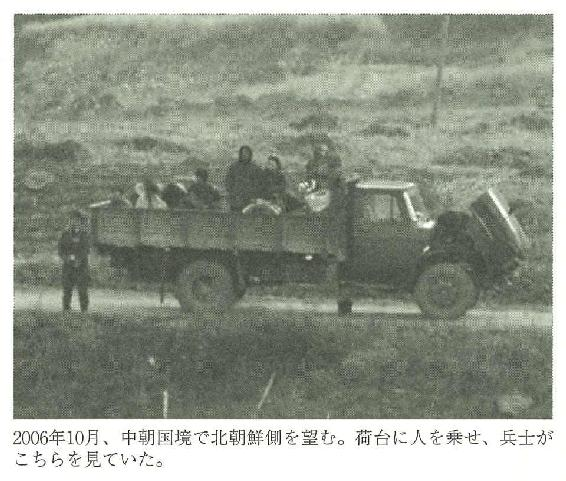
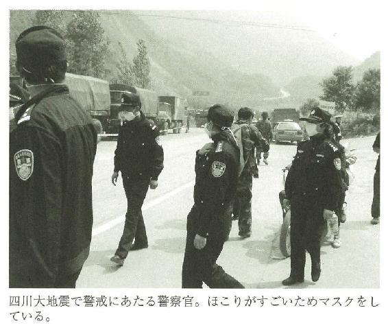
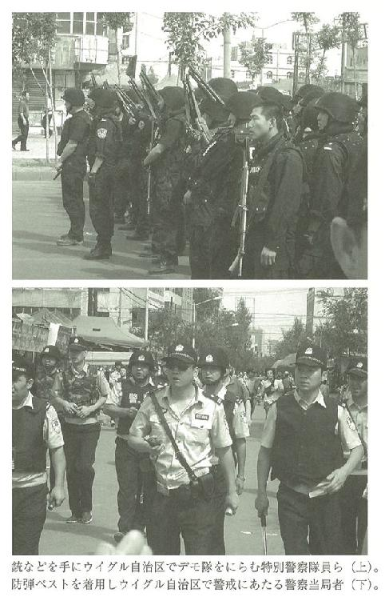
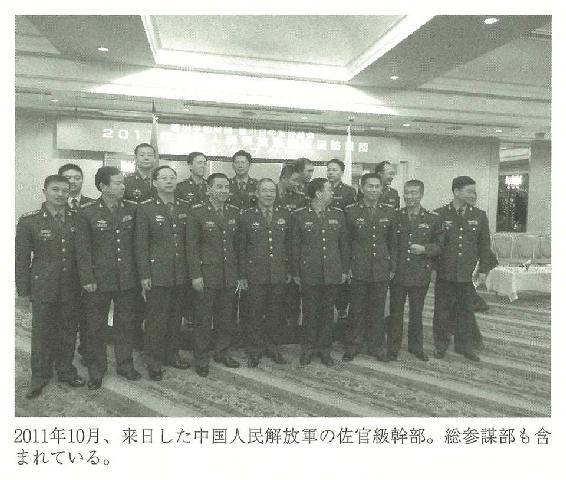
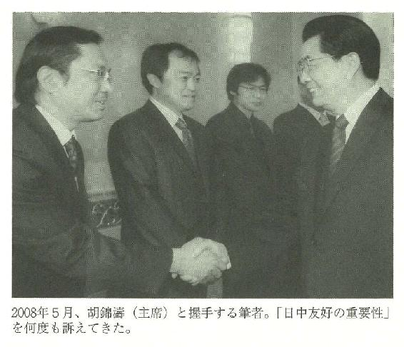

| 中国 真の権力エリート―軍、諜報・治安機関― | |
| 野口東秀 | |
| (2012) | |
この作品の全部あるいは一部を無断で複製・転載・配信・送信すること、内容を無断で改変・改竄することを禁止します。また、有償・無償にかかわらず第三者に譲渡することはできません。
○新潮社の電子書籍：「Shincho LIVE!（新潮ライブ！）」
○新潮社の書籍：「新潮社ホームページ」
中国 真の権力エリート 軍、諜報・治安機関
野口東秀
２０１２年秋、中国は軍の意向を大きく受ける習近平政権に移行した。２０１３年も尖閣諸島の問題は大きな火種となり、日本と中国の緊張状態は激化していくと思われる。習政権はプロ化する軍の影響力に依拠する傾向が強まるはずだ。２００５年に中国全土で吹き荒れた大規模な反日デモほどではないが、今後も日本への抗議行動は断続的に起こり、さまざまな形での対日報復措置がとられていくに違いない。新指導部の動向と共に、今後も巨大な、そして近くて遠い隣国の動静から目が離せない。
日本大使の専用車が襲撃され国旗が奪われる事件、取材中の日本の記者が当局に暴行される騒ぎもあったが、中国国内の不安定要素が増せば、対外的に強硬的対応をとる可能性が高くなる。日本は憲法を改正し、集団的自衛権行使の解釈を確立させ、領土防衛に向けた法整備、海上警備力と防衛力強化を図る一方、外交力の強靱化を図ることが喫緊の課題となるだろう。
私の新聞記者としての原点は、北京で１９８９年に起きた天安門事件にある。同年、私は中国人民大学を卒業したが、大学の友人らは民主化を求めるデモに参加していた。
天安門広場の人民英雄紀念碑で、学生たちが元総書記の胡耀邦を追悼した初日から６月４日の天安門事件、そしてその後まで、私は産経新聞社の助手としてデモを撮影、学生リーダーにインタビューを行い、連日、通訳の仕事に追われていた。
６月４日早朝。天安門広場では兵士が学生のテントを燃やし、炎と煙が立ち上っていた。人民大会堂の傍から撮影しようとした時、兵士に自動小銃を突きつけられた。最高指導部が軍を動員して発砲、弾圧するとは正直、まったく予想していなかった。
やがて軍が銃を乱射し、装甲車や戦車で民主化運動を鎮圧した。自動小銃の連射音は、連続する爆竹のように長安街から鳴り響いていた。
学生指導者の演説、催涙弾による煙、点滴を受けるハンスト学生、戒厳部隊と住民の衝突、黒焦げになり路上に放置された兵士、首をつるされた兵士、死んでいる兵士につばを吐く住民、病院に並べられた遺体......どれも鮮明に脳裏に焼き付いている。
しかし私は、一方的に当時の民主化を求めた学生リーダーらに肩入れするつもりはない。組織運用、洞察の稚拙さなど指導力の欠如だけでなく、国内外勢力の助けで海外に亡命したことが正しい選択だったのかなど、疑問は数多い。
そして、天安門事件が与えた最大の影響でもあるのだが、今に至る中国の政治体制の大転換点がここにある。事件後、政府や軍、司法、メディアなど、すべての重要機関で党による監視体制が強化された。体制の安定に影響する動きをすぐに察知するシステムが、この事件を機につくりあげられたのだ。
中国特派員は、中国当局から、「スパイ」、あるいは「スパイをやっている疑いのある者」という扱いを受ける。そのせいか、同業者の中には民主活動家への取材など、敏感な問題や公安系統との交流を避ける傾向が顕著になってきた。とりわけ拡張を続ける軍についても生の取材を避けがちだ。インターネットで得た情報だけで、それとなくまとめあげた記事を書く日本の特派員は少なくない。それは中国への思い入れが薄い証左でもある。
「国家政権転覆扇動罪」で実刑を受け出所した胡佳。著名弁護士の高智晟。土地の強制収用を告発しようとして当局に拷問され、松葉づえなしでは歩けない体にされた元女性弁護士の倪玉蘭。天安門事件で片足を失った斉志勇。同事件で無期懲役判決を受けながら出所した者など、私は多くの反体制派の知識人や民主活動家と交流した。
その中の１人、民主活動家の余傑は、２０１２年１月に米国に亡命。余は２０１１年から12年にかけての中国の状況を「天安門事件以降で最悪」と指摘したが、２００８年の北京五輪前の状況も、私から見れば「最悪」だった。
一方で、毛沢東の秘書や国営通信社・新華社の元副社長（故人）など、民主化を訴えた元共産党幹部とも私は細々と接触していたが、彼ら党の老幹部が共産党の独裁に異議を唱えても迫害されないのは、宣伝部などに散った「教え子」たちが陰に陽に庇護しているからだと知った。監視、盗聴、嫌がらせ、拉致、拘束、暴行、強制労働、精神障害病院送致などの抑圧に耐えねばならない民主活動家の立場とは全く異なる。
中国では、２０１３年１月から「改正刑事訴訟法」が施行される。条文の中には「人権を尊重する」「拷問、脅迫などによる供述、証拠などは排除される」と明記される一方で、「国家の安全に危害を及ぼす犯罪、テロ活動に関する犯罪、重大な賄賂犯罪の嫌疑」がある場合、民主活動家が誰にも通知されることなく、合法的に「監視」「拘束」されることも明記されている。「拘束」といっても、警察の留置場ではなく、住宅街に設けられた秘密の「裏監獄」で拘束することを合法化するものではないか。今後、民主活動家に対する締め付けは強まるだろう。
中国では歴史的に軍を握るものが権力を握る。そして公安を含む諜報・治安機関が中国共産党の支配を維持する権力基盤であり、最後の後ろ盾となる。中国の情報機関で知られるのは、国家安全部と前述の人民解放軍総参謀部で、中国内外の外国人を監視、あるいは情報屋に仕立てる任務を持つ。したがって、中国という国家の構造、中国人の思考回路、社会の暗黙のルールの線がどこにあるかは、彼ら「権力エリート」との接触でわかってくる。当然、特派員にとって重要な取材対象だ。
本書では、私が北京特派員として取材で実体験した公安や軍、そして国家安全部の官僚との接触を部分的に再現した。彼らとの付き合いはまず、「私は日本の情報機関員ではない」ということを理解してもらうことから始めなければならなかった。知り合って当初、明確にそのことを探ってきたほか、私の周辺を丹念に調べ上げていたのは言うまでもない。人間として信用してもらうには、中国の主張には迎合できず、日本には日本の立場があることを明確に指摘することが必要だった。物を言わない日本の政治家や記者を、彼らは心の奥底で蔑むのも事実だからだ。
さらに友人として認められるまでに、何十回も食事や個人的交流を重ねた。誠意を示し、中国の統治、対日外交の手法の問題点を批判はするが、中国人を嫌いではないこと、相手には敬意を払っていることをわかってもらうしかない。
北京に赴任する前まで、彼ら権力組織の人間と友人になることなど想像できなかった。彼らにとって日本の新聞記者との付き合いなどメリットはほとんどなく、こちらが情報を提供することもできない。だからあくまで「友人」となることを心がけた。なかには「兄弟」となった者もいる。
赴任中、心がけたのは、器用に記事を机の上でまとめることではなく、上層部から下層部まで交流し、中国の実情を訴えたい、知ってもらいたいという情熱を維持することだった。中国共産党の最後の砦となる軍や情報活動関係者、最底辺層から既得権益層との人脈を築くことは、記者だけでなく対中ビジネス上も重要なことだと思っている。
私が受けた当局からの拘束は20回近い。警告となると、数十回はあろうか。その意味では「非友好分子」のレッテルを張られたに違いない。しかし、私は非友好ではなく、中国の変革を望む〝友好的〟な人間だ。友好的だからこそ、中国を批判し、日本の立場を相手にわからせる必要がある。潜在的には中国が国際社会のなかで良い方向、国際社会の一員として協力的な方向に向かってもらいたいとの心情がある。中国の変革は日本に跳ね返るからだ。
中国が高い経済成長を続け軍拡路線を続ける一方、米国が財政圧縮を理由に軍縮路線に転換すれば、早ければ２０３０年ごろに米中の国防費は逆転、日中間では日本が今の防衛費を維持するだけなら10倍の格差になるとの試算がある。
「大国」となりつつある中国との関係を戦略的にとらえ、日本の政治家が国民に示す必要性が今ほど求められている時期はないだろう。
「政治体制改革」が叫ばれる中国の最大の問題は、権力をカネに換え、または権力が国家財産を流用し、利益集団を形成していることにある。中国共産党が政治体制改革と称してこうした既得権益集団に抜本的なメスを入れるとどうなるか。党内外で結びつく「政・財・官・産」各界の巨大勢力を敵に回し、党の基盤が崩壊する可能性もある。
軍内では尖閣諸島、東シナ海での海洋権益をめぐる日中の対立において「戦争による解決」を強調する勢力がある。軍の発言力が増し、中国共産党の統治が「形骸化」するとの指摘もあり、軍は「党の軍隊」から「国家の軍隊」へと変貌する兆しもある。「党」と「軍」との関係は変化していくのか、中国共産党のガバナンスにゆるみが出る潮流はどこに向かうのか。それらの分析は中国国内でもなされているが、あえて削除した。次の機会にと思っている。
本文中では、敬称を略させていただくと共に、取材源の秘匿というより、彼らの身辺の安全を確保する必要性から、どのように書いても特定される事象、人物は割愛せざるを得なかった。また、人物の実名や所属、所有車両、居住状況などを明かすことはできず、場所等を含め抽象的な表現にとどめざるを得なかったことをご了承願いたい。
（本文中の人民元は１元約13円から16円程度）
目次
国家安全部のエージェント 日中を震撼させた〝あの事件〟 国家安全部の解剖
その他の「赤い工作機関」 産経新聞中国総局 空港での没収
北京で身についた習慣 呼び出し 詳細な警告 カラオケ、マッサージは蜘蛛の糸
協力者獲得工作
中朝国境 「カメラをしまえ」 報告書入手の意味 天安門の母
変装し監視を突破 夜の街での紹介 逮捕された取材相手
スーパーカーと路上で遺体となった男 「反日デモ」の実態
力わざの芸当 官僚のサイドビジネスの実態
〝最強機関〟共産党中央規律検査委員会 最底辺の人民たち
空港で待っていた公安 踏み込んできた警官 外事弁公室の登場
巨大地震とは想像もせず 当局の締め付けが始まった
核関連施設へのアプローチ どこまでも追尾 華やかな北京五輪の裏側で
漢族とウイグル族の殺し合い
指導部人事 未来の〝クーデター〟と薄熙来事件の教訓 総参謀部
高官の〝威光〟 日本の弱点への知識 兄弟 尖閣の一線、軍事演習
海軍力の投射 軍の発言権拡大 北朝鮮嫌い 別宅 〝迎賓館〟 最後の別れ
本文写真 著者提供
中国 真の権力エリート 軍、諜報・治安機関
国家安全部のエージェント
私は茶髪のカツラ、それに白ぶちの眼鏡をつけていた。
公安が監視する民主活動家宅へ向かう際、いつも使っていたものだ。
万一の場合を考えていた。指定されたバーの中。離れた場所に、私が信頼する中国人女性を待ち合わせの30分ほど前から配置していた。このバーを指定してきたのは、国家安全部に所属する、張（仮名）だ。
政界の大物、薄熙来が権力闘争の果てに失脚した中国（第３、５章で背景を詳述）。薄一族と関係した英国人が、毒を飲まされる手法で殺害されたとみられている。
「酒を大量に摂取し発作的に飛び降り自殺」
「路上で病死」
この国で過ごした学生時代から「自殺」や「病死」で〝処理〟される中国の要人、あるいは日本人のケースが身近にあった。慎重さは欠かせない。私は女性に言った。
「大丈夫だとは思うが、しばらくぶりに会うから念には念を入れたい。向こうが複数で来て、彼らと僕が連れ立ってバーを離れるようなら、劉さん（仮名）と弁公庁の陳さん（仮名）に連絡すること。あと会社にな」
彼女は二つ返事で了解した。
「もし通じなかったら、劉さんの部下のＫさんに電話してくれ」
劉とは、私を弟のようにかわいがる軍の高官だ（こちらも第５章で詳述）。人格的にも優れ、国際政治などの教養もあり、尊敬する人物で、数日前にも酒を酌み交わしていた。
張との出会いは２００５年にさかのぼる。
ある日本企業の日本人社長が北京市内の一等地に中国側と共同で出店した。その設立パーティー会場に張はいた。出店を手伝った中国人と私は知り合いで、
「記者としてではなく、友人として来たらどうですか。記事にするのはダメですよ。役に立つ人たちが来るから、あとはあなた次第です」
と誘われたのだった。会場に入ると円形テーブルが７つ。そのうちの３つのテーブルには、店側の日本人関係者とその家族が、静かに歓談しながら座っていた。しかし、残る４つのテーブルに陣取る中国人のグループを見て私は驚いた。
〈何だ、この集団は......〉
予想もしなかった顔ぶれだった。スーツ姿の日本人集団とは対照的。ほとんどが黒系統のコスチュームである。こちらを威圧する風体と目。見ただけで、ほぼ全員が公安などの「司法筋の人間」だとわかった。
おとなしく座っている日本側出席者に対し、椅子に二の腕をのせ、高級タバコをふかし談笑する集団からはある種の圧力が伝わってくる。
「本日のお祝いのために来ていただいた、中国側の特別ゲストは......」
と、司会者は具体的な組織名を日本語で挙げていく。順不同だが、私のメモにはこうある。北京市公安局、及び同××分局、人民検察院、最高人民法院（最高裁）、中級人民法院（地裁）、国家安全部......。
こっそりとメモを取る私に、中国人の知人が耳打ちした。
「タバコを吸っているのが（国家）安全部。２人離れて検察だ。何人かあとで紹介しよう。でも最初は名刺は出すな。折を見て記者だと言えばいい」
計20人ほど。うち数人を紹介してもらい、私は携帯と名前だけを書いた名刺を渡した。張はその中で紹介を受けた１人だった。パーティーの最中、連絡先の携帯番号を紙切れに書いたのはほかに１人。名刺を渡してきたのが１人。名刺には「○○○○交流協会」と、まるで異なる団体が印刷されていた。技術交流、国際教育交流、科技交流などというのは、情報収集のためのダミー団体のケースが多い。
北京に赴任中、私が使用していた携帯電話は、会社の中国総局が通信費を支払い公開している番号がひとつ。もちろん、それだけではとても取材にならないので、別の番号を常時５、６回線使っていた。
中国では中古携帯販売店などから、登録していない番号や携帯本体を買うことができる。新しい番号と定期的に入れ替えながら公安、軍、民主活動家との連絡に使っていた。公開している番号の携帯は盗聴の危険だけでなく、居場所を特定されるため、重要な取材の際には、電源すら入れることはできない。
２０１２年１月初旬。この日も持っていた携帯の電源を切ってから、指定された場所へ向かった。北京市の中心部、通称・国貿第３期のタワービル。高さ３００メートルを超える。その最上階のバー。高速エレベーターで20秒ほどだろうか。入り口には高級ワインがぎっしりと詰まった高さ３メートルほどのクーラーがそびえる。
張は中年だが、鍛え上げた肉体をしている。これまでの人生で、腹の底から笑ったことなど１度もないだろう、という面構えだ。口許が緩んでも、目は笑っていない。日本の暴力団幹部と見間違う。ちなみに、中国の公安や国家安全部関係者には、そうした容貌の者が少なくない。
約束の時間が過ぎても張は来なかった。長い付き合いだが、遅れてくるのはいつものことだ。自然と店内に目をやる癖がついてしまっていた。私の後に入店してくる客には、特に注意をはらって観察する。上質なジャケットを着た20代の男女のグループが静かに談笑している。その隣のソファでは、角刈りでキツネ顔の男。ロレックスの時計をしきりに気にしながら麵をずるずると音を立ててすすっている。高級バーには似つかわしくないが、中国らしい光景だ。
15分遅れて男が現れた。20メートルほど先の店の入り口。私を捜している。ひとりで来たようだ。醸し出される雰囲気は相変わらずだが、私に気がつかない。数秒、張の目を見ていた。仕事で見せる目ではなかった。心配ないだろう。
私はカツラと眼鏡をはずした。立ち上がり、張に向かって手をあげた。
いつものように、張は口許だけで笑った。離れた場所に配置した女性は、こちらを凝視している。私は張と握手した。
「野口、元気かい？」
２台の携帯電話をテーブルに静かにおいた。黒のアルマーニのジャケットの袖から高級そうな時計が見える。
「（スイスの）パテック・フィリップ。〝人助け〟した代わりに頂いた」
本物なら１０００万円はするともいわれるものだろう。張が偽ブランド品など身につけない男であることは知っているが、思わず「本物？」と聞いてしまった。
自宅だけでなく、国内数カ所に加え、カナダにも１億円を超えるという別荘を所有している張は、さまざまなサイドビジネスをしていた。いつもそれを〝人助け〟と言う。この時計もどこかの汚職官僚や政治家からの頼みを引き受けた見返りに違いなかった。
「そちらの〝商売〟の具合はよさそうですね。きょうは何の車で来たんですか？」
張と会うときは、いつもサイドビジネスと車の話から始めるのが私の習慣になっていた。北京市内を走る当局の公用車は、中央の政治機関が集まる中南海、北京市政府、それに国家安全部、公安部などの所属に分かれる。どの部門の公用車か、そして部長級かそれ以上かなど、使用する官僚の地位に応じてナンバーと組み合わせが異なり、およそ見分けることができる。特派員にとって中国を知る基礎知識である。張の車のナンバーも、一見すると普通のナンバーに見えるが、見分けることができる者にはわかる番号になっていた。
「車は新しいのを買った。あれもまだ乗っているよ」
あれとは、自慢の欧州製高級車だ。中国政府の部長（閣僚）級が使っていた車をゆずり受けたもので、私も時折、その車の助手席に乗って一緒に郊外に出向くこともあった。車内には、ＣＤプレーヤーのような黒い機器が装着してある。当局の覆面車両の装備品だ。スイッチをひねると、数種類の当局車専用のサイレンが鳴るようになっている。
渋滞にはまるとスイッチを入れて、警察車両が鳴らす音を出す。禁止されている路肩を走行したり、音に驚いた前の車が即座に避けたりするのが常だ。
「例の店（クラブ）はどうなっています？」
私はグラスを傾けながら、聞いた。
「あれかい。手を引いたよ」
張は元公安関係者らと共同出資してクラブ経営にもからんでいた。公安系とされる近くのホテルに顔がきき、客とクラブのホステスが過ごす場所として斡旋もしていた。
「場所の問題じゃなくてね、ここ１年は（取り締まりの）情勢が厳しいからね。知っているだろ。こっちが捕まることはないが、うちらの関係者を客としておおっぴらに招待することはできない。コストの問題だ。その代わり、紛争処理が多くなった」
張のいう「紛争処理」。それは、こわもてを利用したサイドビジネス、つまるところ〝人助け〟のことだ。張の話を促そうと思った時、ふと、私の脳裏に、ある事件の思い出が蘇ってきた。
日中を震撼させた〝あの事件〟
２００７年12月から翌年１月にかけて、日本に輸入された冷凍ギョーザを食べた消費者が中毒症状となった中国製ギョーザ事件を記憶している方は多いだろう。
発生してまもなく、私はほかの日本メディアと同様、河北省石家荘市の天洋食品の製造工場に中国人スタッフが運転する総局の車で向かった。土埃が舞い、古ぼけたギョーザ屋など店舗が立ち並ぶ一角に工場はあった。
連日、朝からほこりっぽい工場正門前で張り番だった。顔見知りの日本メディアで工場前は大にぎわいだ。地元公安当局の動きを知るためだが、捜査車両などが出入りするたびに門から何が運び出されるのか、捜査員はどこを重点的に検証しているのか、少しでも情報を得ようとしていた。
ギョーザ製造を委託していた日本側企業の関係者も工場前で記者会見したが、たいして新情報は出てこない。
日本メディアのほとんどが、助手を連れてきていた。中でもテレビ数社は、北京の記者以外にプロダクションが取材チームを作り、現地取材をしていた。しかし、私の社は１人で応援はなし。このまま正攻法で取材していても、他社に負けるだけだ。私は張り番をやめ、気心が知れた他社の記者に会見などが工場前であったら電話をしてくれるように頼み、その場を離れた。
まずはギョーザに混入された、有機リン系殺虫剤メタミドホスの関連取材だ。この劇物が中国国内でどのように市場に出回っているのか取材し、入手ルートを探る。中国は２００７年１月に有機リン系農薬の生産を停止しているが、問題のギョーザはこの年の10月に製造されている。農薬市場や販売店を20カ所近く取材した。メタミドホスは市場に出回っていなかったが、保管している農家が多くあり、入手が難しくないこともわかった。
ギョーザの袋に小さな穴が空いていたとされ、現地取材の日本メディアは皆、工場での製造過程で従業員の誰かがメタミドホスを注入したのではないかと疑っていた。そうなると疑わしい従業員、または当局が絞り込んだ従業員に迫ることが重要だった。
しかし、意気込んだのはいいが、従業員取材は難航する。
工場の別の出入り口から出てきた従業員から、３カ所の従業員居住エリアを聞き出した。
居住エリアに行くと手当たり次第、家々を回り、「天洋食品の従業員はどこに住んでいますか」と聞いて回る。従業員に会えても口は堅い。聞き出せたのは給料や勤務時間、手作業の過程など。会えても夜に来てくれといわれ、夜に行くと取材を拒絶する従業員も少なくない。連日、疲労が蓄積されていった。
従業員の話をもとに陳腐な原稿をつくる日々。なかなか核心的情報は得られない。
２００８年２月。工場の記者会見が現地で初めて開かれた。だだっぴろい会議室に１００人近い国内外のメディアが集まった。反省の弁かと思ったらまったく見当はずれだった。工場長は上部機関の意向に沿い、「工場内部に毒物を持ち込むのは不可能」と言い切った。「会社は（事件で）経済的に甚大な損失を受けた。名誉も損害を被った」とし、「我々こそ最大の被害者だ」と開き直ったのだ。呆れてものが言えないというのはこのことだろう。
中毒症状になった日本の消費者に誠意でも示すのかと思った私は、甘かったわけだ。
事件取材の常だが、何といっても捜査当局の情報は最優先で取らねばならない。この事件における地元の公安当局とは河北省公安庁、石家荘市公安局を指すのだが、地方の公安当局は当局者が地元の政府関係者とべったり癒着していることが多い。中央の意向に従わず、地元市の政策や決定事項に沿って動くこともある。しかも北京と異なりエリート層が少ない。
縁故採用も多く、外国語どころかパスポートのビザの種類を見分けられない当局者もいた。いきおい、態度も荒くなる。国境地帯の辺鄙な派出所では、制服に白のエナメル靴を着用するという、見ているこっちが恥ずかしくなるような者もいた。ウイグル自治区で観光旅行をした際、検問でバスのなかに入ってきた警官がパスポートの常駐記者ビザを見ながらいきなり、「おまえはスパイか」とのたまい、他の乗客が笑いをこらえていたこともある。
首都北京の公安当局者には、首都で働いているという意識がある一方、地方当局者は地元実力者に引き上げられない限り芽が出ないという、やや鬱屈した意識も底流にある。それだけに誰かの紹介を受け、仲良くなれば話はとんとん拍子に進むこともあるのだが、残念ながら私には石家荘市にツテはなかった。
そうなると中央、つまり北京で聞き出すほうが効率的だった。捜査では北京の公安部が総指揮をとっている。しかも容疑者を複数に絞った段階から一層、容疑者の発表は党中央の政治的判断になることは間違いなかった。日中間の大きな問題になっていたからだ。
北京で国家安全部の張に電話をかけ、喫茶店で待ち合わせた。張は公安部幹部に知人、友人がいる。ギョーザ事件と張の仕事とは無関係だが、「状況を（公安部に）聞いてもらいたいのです」と頼んだ。私は必死だった。日本の某テレビ局が公安の教育関係部門の上層部を直接的な情報源にしていることを知っていたからだ。
こちらは軍高官と外交部、対外連絡部ほか党機関などに友人はいる。しかし当時、直接の情報を知る公安部幹部に知人はいなかった。知り合いはいたが、部署が担当外のうえ、交流が浅い。軍の友人に頼んで公安部に聞いてもらう手はある。だが、そうすると借りもできてしまう。しかも情報の伝達で時間差がある。こちらに届くまでに何人の手を経るのかもわからない......。
事件は中国の捜査当局が訪日し、日本側で毒が混入された疑いが醸し出されるなど、捜査は遅々として進まず、迷宮入りするかにみえた。しかし、それでも私は張と定期的に接触し続けた。
やがて、中国側が日本側に責任があるかのような公式発表をする。公安部刑事偵察局の副局長、余新民は２００８年２月、記者会見で、日本の警察当局に物証の確認を申し入れたが同意を得られなかったと強い不満を表明した。日本批判だ。その後、「疑わしい人物は見つからなかった」と日本側に説明し、日本側も中国側の内部監視カメラの映像などを求めたが、その対応に日本側からも強い不満が噴出。捜査当局が対立する険悪な状況になる。
しかし一方で、徐々にではあるが公安部の捜査に一定の進展があることが張の口からわかってきた。ある時、予想外の情報が得られた。
「すでに複数の容疑者が浮上、絞り込み段階だ」
複数の容疑者の中で、犯行を周囲に匂わす１人の従業員を公安が慎重に調べているという。２００８年夏だった。中国側がまだ「工場での（農薬）混入はない」としていた時だった。
「取り調べで、認めたり否認したりしている。動機になるようなこともしゃべっているが決定的なものではないようだ」
その後、動機には工場への不満以外に反日意識があり、その理由も張は付け加えた。私にとってはかなり衝撃的な内容だった。
「拘束・逮捕の時、発表より１日でいいから早く教えてくれないか」
「タイミングが合えばいいが。しかし向こう（公安部幹部）におまえのことを話す必要がある。それでいいか」
「できればその人に会わせてもらえないですか？ この情報、いずれ逮捕と発表されるでしょうが、公安部などのでっちあげじゃないですよね」
「絶対ない。おまえのことを一切話さずに、重要案件を知りうる人間から聞いているんだ。ありえない」
張は容疑者の名前、年齢も私の手帳に書いた。容疑者が第三者からメタミドホスを手に入れたが、この第三者は容疑者が事件を起こすために譲渡したのではなく、まったく知らなかったことが裏付けられたという。この頃、私は日本大使館幹部にも何度もギョーザ事件で聞いていた。
「進展があるのでは？ （容疑者の）名前も聞いていますけど。そちらも（中国側から）何か伝えられていますよね」
少しでも同意すれば、こちらが聞いたことをある程度伝えるつもりだった。
「いや、まったくないですねえ」
話を繰り返したが反応は同じだった。その話しぶりから本当に知らないと思った。
「複数の男性従業員を絞り込み、事情聴取」。独自ダネとして、原稿だけは作成した。ある日、張が私を呼び出した。某公安部幹部の条件はこうだ。
１、外国人記者と直接的な接触はしない。
２、書いてもよいが、その内容は事前に示すこと。
原稿を事前に見せることは記者として基本的にタブーだ。しかし記事で間違いを犯す危険性を１００パーセント避けたかった。選択の余地はない。私は「近く逮捕」という見出しの予定原稿を張に手渡した。裏取りするため軍高官と会い、容疑者の名前を伝え、別の公安部ルートで裏取りを頼んだ。
３日後、張から渡された私の原稿には多くの部分に斜線が引かれていた。
動機の部分だ。注射器に対する供述の断片部分、そして日中戦争当時に関連する供述などの部分だった。
「反日の部分は絶対にダメだということだ。わかるだろう。（日中）双方の国民感情などに火をつけることになる」
張はこうも付け加えた。
「当局が発表する際は、工場での待遇に対する不満となりそうだ」
件のテレビ局記者も情報を得ている可能性が強いだろう。私は畳み掛けるように聞いた。
「いつごろ発表しそうですか？ 今、『容疑者ほぼ断定』で記事にしていいですか？」
「ダメ、ダメ。発表は（指導部の）政治判断だ。（記事にすれば）その判断に影響が出る。しかも（公安部幹部から聞いた）俺の立場がないだろ。供述内容もあいまいな部分がまだあるってことだ」
「テレビがテロップを流す前に私が原稿を出すことが重要。ゴーサインを下さいよ。必ず。これだけは他社に負けたくないんです。お願いします」
「問題ない。発表前に必ず知らせるよ」
軍高官からの返答は張よりは詳細ではなかったが、基本的情報は一致していた。
その後、予定原稿はパソコンのなかに眠り続けた。現地で容疑者の家族からインタビューすることも脳裏に浮かんだが、必ずスクープできると信じていただけに現地に行く必要もないと思った。私の取材の動きが他社に伝わることも避けたかった。総局の同僚にも詳細を言うことは避けた。しかし、２０１０年１月末、社の帰国命令で帰国する日も逮捕の発表はなかった。発表は帰国してわずか２カ月後の３月下旬。発表は張が話した容疑者だった。
動機は待遇面の不満と発表された。毒の入手ルート、供述内容もない簡素なものだった。
バーでの再会は久しぶりだったが、ギョーザ事件にも話が及んだ。
「あともう少し北京にいればよかったな。残念だった。でもどこのメディアも先に報じてないだろ。君が言っていたテレビ局も同じだ。いまの日本ではギョーザ事件は風化したな。事件は終わりだ。それより日本の政治はひどいな。これからどうなるんだ？」
張の興味は日本の政局だった。別れ際、張はこう言った。
「長いつきあいだな。これだけは覚えておいてくれ。何か本当に困った時やおまえの敵を何とかしたいときは相談してくれ。何とかしてやるから。このことは本当に覚えておけよ」
結果的に私は、スクープをものにすることができなかった。だから、ギョーザ事件で何か偉そうなことを言える立場ではない。ただ、このエピソードを通じて知って欲しかったのは、中国国内におけるトップ情報を探るには、後述する軍総参謀部や、張のような国家安全部エージェントは欠かせないということだ。
日本では、政治的な動きであれば政権与党、野党、官邸、省庁など、主として政治部が守備範囲にしている取材対象に食い込み、集めた情報を総合的に取捨選択して報道する。事件や事故であれば警察、消防、海上保安庁などになろうか。どの役所にも広報担当者がおり、必要最低限の取材はさせてもらえる。
しかし、中国は一筋縄ではいかない国だ。あれだけの巨大な国を、共産党一党の、それも限られた指導部だけで動かしている。その全体像を正確に知り、伝えるには、表とウラ、縦と横、地上と地下、様々な人脈を駆使し、エージェントとの接触を繰り返しながら情報を練り上げていく作業が必要になる。
ただ、彼らも「国家」のために仕事をしている官僚だ。当然、私たち特派員も「監視対象」であり「有力な協力者予備軍」として見られていることも忘れてはいけない。
国家安全部の解剖
中国の情報工作機関は共産党、政府、人民解放軍の３つに分類される。
国家安全部と公安部調査局は政府系だ。党員の汚職、調査を担う党中央規律検査委員会は、外国人には直接的に関係がない。チベット問題を担う国家民族事務委員会、国家宗教事務局なども情報収集、工作活動に関係する部門とされる。
国家安全部の活動対象は国内と国外に分かれている。一概には言えないが、外国語が堪能であることを武器として外国人に接触してくる者に、こちらが欲しい情報を持っているケースは少ない。中国国内の政治・社会などの１級情報を持っているのは、その逆。つまり外国語、特に日本語を話せない人物の方が多い、というのが私の印象だ。
国内における国家安全部の重要監視対象は、各国大使館員とその家族、駐在外国人記者、企業駐在員、技術者らだ。また、中国の政府機関、学術機関にも派遣され、関係要員にはその機関に応じた身分が与えられる。要員には軍に所属していた者もいる。
例えば外交部（外務省）に同部職員として勤務するが、本当の身分は国家安全部だというエージェントもいる。関係者によると、外交部の「外事」部門がそうしたエージェントの対外的身分を外交部職員とする役割を担っているという。学術機関に派遣される者は中国人研究者や国際交流活動の監視、情報収集が主な任務となる。
外国の民間企業事務所や、大使館で働く中国人のなかには国家安全部や軍の総参謀部関係者または協力者がいるというのも常識だ。盗聴、盗撮、資料収集のほか、金銭、女性による工作活動も行っているとされる。全国各地に出先機関があるほか、公安部、検察などとも連携している。
２０１２年に入り、国家安全部の副部長（次官級）の秘書（補佐官）が、米国側に機密情報を流していたとして逮捕された。米中央情報局（ＣＩＡ）に政治・経済・軍事情報を流し数十万ドルの報酬を得ていたという。しかし、この原稿を執筆している５月時点で、どのような情報をながしていたかわかっていない。ベールに包まれる国家安全部は１９８３年、中共中央調査部、公安部、統一戦線部、国防科学技術工業委員会の関係部署を統合し設立。専門家らによると、出先機関の国家安全局、国家安全庁など、数十万人の人員（協力者含む）で構成されているという。
これには膨大な数といわれる通信盗聴要員は含まれないという。専門家に聞くと、世界のヒューミント（人的諜報）組織としては「世界一の規模ではないか」といわれる。
国家安全部は公安部と併設され、北京市を貫く長安街、天安門広場脇の国家博物館の横に位置している。正面ゲートには武装警察隊員らが歩哨に立ち、身分証をチェックする。建物内部の構造は外からはうかがい知ることはできない。
国家安全部の概要は以下の通りとみられる。国家安全部が重視しているのは、対外的には台湾、米国、北朝鮮、インド、日本関係で４、５、11、15局が台湾を担うという。最近、部局編成が行われたとの話もある。
第１局（機要局）暗号通信及び管理
第２局（国際情報局）国際戦略情報収集、分析
第３局（政経情報局）各国政治経済・科学技術情報収集
第４局（台港澳局）香港、マカオ、台湾情報工作
第５局（情報分析通報局）情報分析、情報収集業務指導
第６局（業務指導局）所轄各省庁業務指導
第７局（反間諜情報局）対スパイ情報収集
第８局（反間諜偵察局）対外国スパイ追跡・偵察・逮捕
第９局（対内保防偵察局）内部反動組織や外国組織の監視
第10局（対外保防偵察局）外国駐在組織人員及び留学生監視・告発、域外反動組織活動の偵察
第11局（情報資料センター局）文書・情報資料の収集と管理
第12局（社会調査局）民意調査
第13局（科学的偵察技術局）科学的偵察技術の開発、管理
第14局（技術偵察局）郵便物検査、電気通信監視
第15局（総合情報分析局）総合情報分析・調査研究
第16局（映像情報局）衛星情報ほか各国政治経済軍事映像分析
第17局（企業局）担当組織の管理
関係者によると、要員は担当領域の職務の必要性に応じて、対象の機関、団体に立ち入ることが認められており、資料閲覧、収集、建物の使用が可能だ。交通手段も必要の場合は優先通行が認められており、組織、個人の車など交通機関を使用できる。
当然、組織、個人の所有物、通信機器などを調べることも認められている。
傘下のシンクタンクには、現代国際関係研究院がある。対外交流を通した情報収集の役割もあるとみられ、同院での研究結果は、中国の外交政策を形成する党中央外事工作指導小組が吸い上げるシステムとされる。
ワシントン・タイムズが報道したＣＩＡの報告書によると、２０１１年８月に訪中したバイデン副大統領が北京で会談したうちのひとりは崔立如・現代国際関係研究院長だ。崔は国家安全部の職員としてニューヨークに駐在したこともあるという。同院の複数の研究者と知り合ったが、いずれも外国語は英語で外交・安保の情報収集で米国研究の割合が多いと感じさせる。
協力者、つまり中国人、外国人を問わず中国国内外の技術者、研究者、留学生らは要員の数倍はいるとみられる。日本国内にどれくらいの協力者がいるのかは不明だが、「少なくとも数千人の規模ではないか」と日本の公安関係者は指摘する。
要員とこうした協力者は、特定の情報を収集する一方で、雑多で断片的な情報を幅広く集め、選別する作業を行っているという。
前出の関係者によると、雑多な情報には、「人的交流を通し、政治家、ビジネスマン、研究者、防衛省、防衛技術関係者に対する各種の情報収集のほか、インターネット、マスコミ情報もある」という。「特に次世代の駆逐艦、潜水艦、ステルス技術、戦闘システム、レーダー、制御にかかわる技術。中国にないそれら最先端技術は、ターゲットになっているだろう」と指摘する。
要員はビジネスマン、国営系メディア記者、大使館員、民間会社員などとして派遣される。実体がなく、対外交流するだけの中国系ダミー会社は日本に多いが、政治工作、産業分野の情報収集の役割を担っているのだ。
「外国人が泊まる一流クラスのホテルには、一部の部屋に監視装置がついている。ホテルマンの格好をした情報機関の者もいる」
と、在北京の外国大使館員は話す。ホテルの盗聴装置を見たわけではないが、旧日本大使館近くにある最高級ホテルには名札をいつもつけていないホテルの制服を着た男がいた。彼は大使の記者会見が、そのホテルの一角にある日本大使館広報部で開かれる際に現れたり、反日デモの際に日本大使館に行こうとした日本メディアを監視したりするような行動をとったため、なぜ名札をつけていないのか聞いたことがあるが、忙しいふりをして立ち去った。
国家安全部に限らず、工作機関は国内外で外交官を含む外国の政府機関職員、記者、研究者、ビジネスマンと接触し、「協力者」として活動させたり、本人が意識しないまま、協力者として活動させたりすることを目的にしている。
特に大学や研究機関の学者はターゲットになりやすい。公私ともに工作活動の手法を知らない上、中国での人脈がさほどない人はなおさらだ。自分の専門分野の見識を過度に披瀝するだけでなく、専門分野以外でまた聞きした情報をいとも簡単に相手に与えてしまう傾向にある。学術交流やシンポジウムなどで訪中した際、公開に近い政府関連の情報についての意見交換から工作活動は始まっているとみたほうがいい。
中国側の学者、研究者には情報機関からの派遣者や協力者がおり、対象者のプライベートな情報を弱点としてとらえ、意見交換から対象者の性格を分析し、協力者にさせるきっかけをつかもうとする。
中国駐在の外国人記者に対する監視項目には「過度な軍事情報の収集」「異性関係」「買春」「金銭による機密情報収集」「反体制分子や法輪功などの非合法組織、民族テロ分子との接触」があげられる。こうした監視活動を通じ、対象者の「弱み」を把握するのだが、たとえ「弱み」となっても、それを絶対に認めない心理的、物理的準備と覚悟が必要である。
「野口先生、経済政策の情報を提供しますよ」
赴任中、２、３回程度だがこんな電話が見知らぬ男からかかってきた。こういう時は外では会わず、総局に出向いてもらうのが一番だ。もちろん、やりとりは録音する。
「社会情勢分析なんですよ」
総局に現れた男は数ページの印刷物を見せた。ざっとみると中国で起きた抗議行動の分析だ。「中央指導者の学習会向けの資料だ」という。体裁は整えてあるが、本物かどうかもわからない。男は名刺を渡さず、名前と連絡先を書いた紙だけ渡してきた。しかもペーパーの中身自体、驚くような話でもなく、こちらがさんざん原稿にした内容とさほど変わりないように思えた。男は「５００元で売る」という。「安くしてもいい。他にもある。何が欲しいか言ってくれれば手に入れられる」とも付け加えた。
さらに男は「大学ではなく政府の者」と名乗り、具体的な部署は明らかにしなかった。金銭のやりとりの有無や文書の信憑性にかかわらず、この手のペーパーの授受は危険である。なぜなら、授受をもとに協力者になるよう迫られる可能性があるのだ。そもそも外国人記者が中国で一定レベル以上の文書を「入手した」と書くのはよほど慎重にすべきで、信頼関係がある筋に対してこちらが求める情報を得るのでなければならない。男は２度ほど連絡してきたが、脈がないと思ったのか連絡してこなくなった。
その他の「赤い工作機関」
対外工作機関には、国家安全部のほか、
軍総参謀部
中国の治安警察で民主活動家や法輪功の監視・拘束を担う公安部国内安全保衛局
中央規律検査委員会
中央弁公庁
中央政法委員会
共産党と党外組織との連携や民族・宗教にかかわる活動、中国人科学者の帰国などを担う中央統一戦線工作部
中央宣伝部
中央対外連絡部
中央外事弁公室
国家安全指導小組
中央対台湾工作指導小組
国際友好連絡会
国際戦略研究学会
など、さまざまある。
軍総参謀部出身で有名なのが熊光楷という人物だ。軍傘下の外国語学院で学び、総参謀部第２部に配属。駐ドイツ大使館武官、軍事学院を経て総参謀部第２部部長を歴任した。国防大学や国際戦略研究学会常務理事も務めた。軍の情報部門のエリートだったといえる。総参謀部には英語など外国語ができるうえ、若手のエリートが集まる。
こうした情報工作機関は全般的にエリートで構成されている。
１９９０年代以降、特に２０００年代に入ってからはその傾向が強い。就職母体の外国語専門学校を卒業するか一般大学からスカウトされる者もいる。国家安全部は80年代、エリート大学を卒業間近の大学生からリクルートしており、同窓生でも彼らとの連絡ができないようになっている。一方で国家安全部や公安部保衛局には公安系学校や一般大学出身者がおり、現場の監視・拘束活動を担う。海外に政治亡命した中国人の中には「国家安全部は命令に従う元犯罪者を使っている」と語る者もいるが真偽は不明だ。
各組織はそれぞれが専門的に対外、対内活動をしている。指導部クラスなどの指示、または招集される会議がない限り、横の連携はさほどないとみられる。
こうした機関は党内の各派閥が握っており、政権交代、権力闘争に応じて変化しているため、常に内部の新しい情報を得ることが記者にとっても肝要だ。
工作員は訪日する大使館員、国営メディア新華社などの特派員、中国銀行、国営企業駐在員として派遣される一方、中国国内の大使館や新聞社、テレビ局で働くスタッフの中には当局の情報提供者がいると考えるのが妥当といわれる。
国家安全部による摘発として表面化した事件には、軍系の国際友好連絡会の常務理事が国家安全部に拘束され、２００７年、軍事法廷で日本人に軍事情報を漏洩した罪で死刑判決（執行猶予付き）を受けた事例がある。この常務理事は軍出身で、同連絡会に80年代から籍をおき、その間に在日中国大使館に勤務していた。
２００９年、政府系シンクタンク・中国社会科学院日本研究所副所長として著名な日本問題専門家、金煕徳が日本や韓国の情報機関に国家機密情報を漏洩したとして、国家安全部に拘束された。金はその後懲役14年の刑を言い渡されている。
日韓情報機関が入手したとされる北朝鮮の故・金正日総書記の重病情報は、金煕徳によってもたらされたという話もあるが不明だ。漏洩した情報は、中朝関係、２００８年５月の胡錦濤訪日前に社会科学院日本研究所が行っていた、日本の分析に関する情報とも指摘される。
対外工作機関の基本的職務は「工作要員が行わせたい言動を、工作対象者が実際に自発的または指示により行うことで完結する」。
中国筋が指摘した対日工作の概略の一部は以下の通りである。
１、中国に親近感を抱かせる。警戒心を解く大衆心理戦
２、中国の文化、芸術、スポーツを通してイメージを高める。日本に学ぶという謙虚な精神を示し好感を勝ち取る
３、対マスコミでは反中世論の論調を修正させる
４、対政党では議員に影響を与える派閥の長に接触。個別の接触では、議員の家族など個人情報をもとに権力、金、情報など議員が欲しがる物を与える一方、女性、金、秘密の暴露などで中傷、脅迫を行う。議員、秘書らを招待で訪中させ、意識変革などの活動を行う
５、民間日本人も同様である。中国に駐在する者、頻繁に訪中するビジネスマンには欲する便宜を供与、日本では日本の政界関係者、公安担当者に接触するよう誘導し情報収集する
６、日本企業にすでに就職した中国人、特に技術系をリクルートし確保する
オーストラリアに亡命した１等書記官は指示を受けて中国政府が非合法とした気功集団「法輪功」メンバーの監視が任務だったという。ある中国人官僚が汚職でオーストラリアに逃亡したが、その官僚の息子を拉致し、その官僚を本国に戻したことなどを暴露している。日本でも「法輪功」メンバーを身元不明の男たちが監視、尾行していることを日本の当局は確認している。
海外から派遣される外国特派員に対してはどうなのか。
日本のマスコミでいえば、過去、中国寄りとされた某新聞社や公共放送局に対しては、記者に対する監視と記事（報道内容）のチェックが比較的緩いとされてきた。もちろんそれは中国寄りの報道を行ってきたとされることが理由である。現在は、どの新聞社やテレビ局の影響度が大きいか、独自の物差しを持っており、それに準じて注視する程度が異なる。
一般に産経新聞というと、中国当局から常に睨まれる対象である、というイメージが強いようだ。それは私も否定しない。ただ、産経記者だからといって必ず、常に重要監視対象となるわけではない。逆に、中国寄りとみられた記者だからといって、当局が野放しにするわけでもない。要は記者個人の日ごろの行動、そして書く記事の内容なのだ。
当局が嫌がる人物（具体的には民主活動家など反体制派）への接触を繰り返していないか、また関心を抱いて欲しくないテーマを追い続けていないか、それは記者が書いた記事やレポートの内容から類推できる。
私は、中国当局にとり、与しやすい記者にだけはなるまいと決めて取材していた。与しやすい記者、それは机の上だけで原稿を書き、他社と横並びの記事を書く記者だ。その逆は、反体制派や最底辺の者たち、軍事分野、蠢く政界など、中国にとって敏感な部分で独自の人脈をつくり記事を書こうと努力する記者である。
産経新聞中国総局
ここで私が中国取材の足がかりにしていた総局について書いておきたい。
産経新聞の総局は北京市中心部、天安門広場から東へ数キロに位置する外交公寓のアパート群の一角にある。アパート群は塀で囲まれ、塀に沿って設置された門には武装警察隊員が歩哨に立っている。
外交公寓とは、外国人管理の厳しい１９８０年代より前、大使館員や外国人記者らをその一角に住まわせていた名残である。一角に集めれば管理、監視が楽なためだ。
総局の窓からは長安街を見渡すことができる。１９８９年の天安門事件では、まだ産経新聞は支局開設が認められておらず、出張してきた記者がホテルの窓もない地下室を臨時支局としていた。現在の総局の入る建物に兵士が自動小銃を乱射し、弾痕が残っていたことを覚えている。現在、総局には日本人記者が３人。それ以外は中国人で助手２人、２台の車に運転手が２人、昼食をつくるお手伝いが１人だ。
「中国人スタッフはあなた方のことを当局に報告する役割があるのですか」
訪中する日本人は、よくこの質問をする。
「その可能性はあるとして仕事すべきと言われますね」
こう答えるしかない。基本的にどこの新聞、テレビの支局も同じだ。助手は外国報道機関の場合、準政府の斡旋機関に語学など能力に関する希望を出して派遣してもらうシステムだ。
社によっては気に入った助手を独自に探し、その機関に登録させるが、当局がその気になれば総局内の様子にしろ、記者の言動にしろ、逐一、報告させるのは簡単なこと。外部で助手を見つけてこようが結果は同じだ。運転手も同様である。だから秘匿したい取材先に社の車は使わないことにしていた。
民主活動家関係の書類だけでなく、重要な取材先からもらった資料は総局の部屋やマンションではなく、べつの場所に保管する。総局に置いていたのはスクラップと書籍類だけだ。
「総局の部屋に盗聴器はあるのですか」
という質問もよくうける。赴任して１年目のこと。
「調べるべきじゃないか。発見できなくても役に立つ」
健康診断で一時帰国した際、元北京特派員だった他社の先輩がこう話した。私は赴任する前に、東京の秋葉原で小型の盗聴探知機を買っていたのだが、総局で試すと反応が日々変わり役に立たない代物だった。そのため、あらためて高感度の探知機１台、盗撮カメラ探知機を１台購入した。
盗撮カメラ探知機は、「レンズがあれば、肉眼でわからないほど小さくても赤く光って見える」と秋葉原の店主が太鼓判をおしたものだ。確かに街の監視カメラのレンズは全て光った。早速、総局の自分の部屋で盗撮探知機を試してみたが、反応したことはない。
しかし盗聴器は別だ。常に壁のコンセント内部で反応していた。だが、壁を壊してまで探したことはない。
電話も固定電話は相手の声が聞こえにくい上、日本語で早口で話しているとプツンと切断する時がある。早口だとうまく理解できないため、腹いせに切るのだろうか。切断される時はいつも同じだったから、そうだろうと思う。
居住していた部屋も同じだ。ベッドの頭側の壁には布クッションが装飾として貼ってあった。電気系統が何もないはずなのに、いつ試しても、同じ位置で盗聴探知機が反応した。そのクッションを切り裂いてはがそうと思ったが何も出なかった場合や「言いがかり」と言われて弁償を迫られることを考え、やめた。
空港での没収
「あなた。こっちに来なさい！」
２００４年３月。北京に赴任のために、首都国際空港に到着、ゲートを出ようとしたときだ。出口の自動ドアが開き、降り立った外国人や中国人は皆、スーツケースやカートで外に向かって流れていた。私もその流れにいた。ぎっしりと本を詰めた２つのスーツケースをカートで運び、自動ドアのそばまで来た。
「おい、おまえだよ！ こっちに来い」
やっぱり私か――とは思ったものの、目をそらして出口に向かおうとした私に、別の税関職員も加わって大声で叫んできた。２人とも指を私にさして命令口調だ。私のスーツケースを「開けろ」と指示してきた。素直に従った。
４人がかりで下着から目覚まし時計にいたるまで、全ての荷物を検査台の上に乗せていく。
公安系の人間は独特の雰囲気で威圧感を与えるのだが、税関職員は権威と給与、仕事の内容などから人気職業。それゆえ、そうした威圧感を与えない者がほとんどだ。ところがその時は違った。
「いったい何を探しているのか？」
問いかけても返答もしない。パスポートを取り上げ、私のポケットの中まで検査してきた。別の税関職員は検査台に乗せた本を１冊、また１冊とめくり始める。全て日本語で書かれた中国の政治・経済・歴史関係の書籍だ。こいつら、日本語が読めるのか、と思ったが、案の定、日本語はわからないようだ。職員が電話で連絡している。聞き耳を立てたが声が小さすぎてわからない。
30分ほどすると別の当局者が現れた。私服なので税関職員なのかわからない。私服の男は本をとり、題名と目次を見ていく。日本語がかなりわかるようだ。スーツケースに入れた本は約１００冊近くある。全部見ようというのか、何かのあら探しか......。
「どれも、日本の本屋で売っている公開の本ですよ」
誰も答えようとしない。学生による民主化運動を軍が弾圧し、多くの死傷者を出した天安門事件に関する本も５冊あった。事件の経過や、指名手配された学生リーダーの顔写真などが掲載されている。没収するとすればこの天安門事件に関する本だろうか......。
私服の男は私を横に立たせ、全ての本を見終えた。約２時間。見ると、男は３冊の本をえり分けていた。１冊のタイトルは「小平の負の遺産」。残り２冊は天安門事件関係だ。
私服の男は物静かな口調だが、兵士のように有無を言わせない中国語で言った。
「これは中国には持ち込めません。税関で預かります。証明書を書いてあげますから帰国の時に返却します。あなたは中国（の事情）を知っている。もちろん、中国語もよくわかることは知っていますよ」
スーツケースのパッキングを再び強いられた私の手には、薄い半紙のような所定の紙。３冊の書名が私の名前とともに書かれていた。「小平の負の遺産」は中国政治専門の日本人教授が書いた書籍だ。「負の遺産」というタイトルが気に入らなかったのか。しかし、天安門事件の写真を多く使ったシンクタンクの書籍を没収しないのはなぜ？ 要は本の種類などどうでもよく、狙い打ちということだ。
税関職員は、私の顔を事前に知っていた。でなければ出口に向かう大勢の乗客のなかで、しかも中央付近にいた私だけを呼び止めるはずはない。私服の男が最後に話した内容からも、検査しようと待ちかまえていたのは明白だ。赴任初日に警告、またはメッセージを与えようとしたのである。
迎えに来てくれた、総局の中国人助手が心配そうに私の顔をのぞき込んでくる。
「大丈夫ですか？ 調べられているのが見えてました。総局長には電話しておきました」
アクセントはあるが、そこそこの日本語だ。
「疲れたけど大丈夫です。なんて言うか、先制パンチっていうのかな」
「先制？ パンチ？ どういう意味ですか？」
北京で身についた習慣
２度目のけん制とみられる出来事はすぐにやってきた。
赴任して１週間もたたない時だ。全国人民代表大会（全人代＝国会に相当）が開かれていた。１年に１回、全国から全人代委員が集まり、北京の人民大会堂などで主に内政の問題について１年の方針を発表し、意見交換する場だ。
赴任したばかりでもあり、地方から官僚の汚職や土地の強制収用などを訴えるために北京に上京する上訪（陳情）者を精力的に取材していた。
北京南駅の周辺に政府の陳情窓口があり、そこから出てきた河北省の50歳代とみられる農民を離れた場所に連れていこうとした。陳情窓口前は、あらゆる地方から来た公安当局者、地方政府の担当者が待ちかまえている。地元の陳情者を探し出し、送り返すためだ。
窓口前の道路はぎっしりと地方ナンバーの当局車がずらりと並ぶ。北京での赴任中、ここでの取材はライフワークのようにもなった。数百人が群れをなして陳情する光景もそのうち珍しくなくなった。いつも警官が群れを取り囲み、ビデオ撮影するのだ。
陳情窓口から５００メートルほど離れた道路端の路地。道路からは見えない場所だ。１人の農民をそこまで引っ張って行き、取材を始めて３分ほどたっただろうか。
１台のパトカーが止まり、制服の警官が歩み寄ってきた。
「おまえら何をしているんだ。おまえ（農民）は去れ！」
パトカーに残った警官が携帯で電話しているのが見える。外国人記者証などを提示したが、「（陳情者を取材する）取材許可はあるのか？ 違法な行為だ」
それにしてもなぜこんなに早く来たのか。後を尾けられたのか、まったく見当がつかない。５分もしないうちに、さらにもう１台のパトカーが駆けつけてきた。降りてきたのは30歳代前半の若い制服警官だ。
「外国人担当の者だが、ここで取材はできないから立ち去れ」
例によって穏やかだが、１歩も譲らない口調だ。
「外国人担当の者」とは、北京市公安局出入境管理処に所属する職員だ。中国人、外国人の入国、出国を管理・把握している。外国人記者、ビジネスマン、留学生らの居住状況や立ち回り先の状況を把握するほか、外国人がらみの犯罪やトラブル処理を担う。
彼らはデモや抗議行動、イベント、訪中した外国要人の記者会見など外国人記者が立ち回る場所で外国人記者の動向を把握、管理することも任務としている。
彼らは海外留学組が少なくなく、英国やタイなどの一流大学に留学経験のあるエリートが多い。将来の公安系幹部候補もこのなかに含まれている。日本で研修を受けた者もいる。ウイグルやチベットなど中国の少数民族問題を支援しようとする外国人の動向把握も任務だ。
この「外国人担当」の面々も、どこでどうやって見張っているのか、中国にとって都合の悪い場所や人に近づく記者の前に、脱兎のごとく現れる。
「違法ではないでしょう。ちゃんと記者証がある。全人代取材のための記者証もある」
「これらは全人代の記者証であって、取材証ではない。全人代の関係取材なら許可が必要だ」
押し問答を繰り返したが、結局、押し返された。しかし、それで取材を止めるわけにはいかない。翌日も、陳情者への取材を再び始めた。
ただし、それ以降、盗聴を念頭に、陳情者や他人に知られたくない取材先と接触する前には、道路を曲がり、辺りを周回して立ち止まるようになった。何度も後ろを確認してから取材先と会う癖がついた。
取材先から離れた場所で、総局が抱える運転手の車を降り、そこで待たせてタクシーに乗り換える。携帯電話の電源を入れていれば、当局は私の居場所を把握できるので、こういう取材の場合は電源を切る。そうした習慣は北京を離任する日まで続いた。
呼び出し
「外交部（外務省）から電話があって、お前に呼び出しがかかったから行ってきてくれ。なんのことかわからんが」
２００４年８月。総局の伊藤正総局長がこう告げてきた。赴任して５カ月ほどだ。「公式」呼び出しの１発目だった。後に、これが何度も続くとはこの時、思いもしなかった。見当もつかないまま車で向かった。総局から15分ほどの距離だ。玄関を入ると案内係が待っていて１階の応接間に通された。
10分後、現れたのは外国人記者担当の30歳代の女性だった。前述の公安局の外国人担当ではなく外交部なので、日本でいえば記者クラブ担当の職員ということになろうか。初対面ではなかったがその時は交流もなかった。歯に衣着せぬ物言いで有名な美人官僚でもある。外国の中でも日本担当で、日本語がきわめて流ちょうだ。エリート層であり近い将来、日本勤務が予想されている。
手には相当な資料を持っていた。私に関する資料や記事のコピーだろう。それをテーブルに置いたあと、いきなり日本語で、
「あなたの記事には笑ってしまいましたよ」
と言いながら、
「ハハッ、アッハッハッハー」
突然、わざとらしく笑い出す。
けげんな顔をしていると、記事のコピーをみせた。１面トップの記事で、「サッカー・アジア杯 中国の反日行動、大国意識と表裏」という私の書いた記事だ。
小泉首相の靖国神社参拝を背景に、中国で行われたサッカーのアジア杯では中国人の反日行動が増幅されていた。記事にはこう書いた（一部省略）。
＝中国・重慶市などで開かれているサッカー・アジア杯が極めて偏狭な中国の「愛国主義」に彩られている。日本対オマーン、日本対タイ戦では日本選手に対する激しいブーイングが会場を覆ったほか、二十四日には試合終了後に日本チームのバスが中国人観客に取り囲まれた。この「日本嫌い」の背景には、低下する共産党の求心力を高める手段として江沢民前政権下で顕著になった愛国主義の強調がある。
重慶市は第二次世界大戦で旧日本軍が爆撃した都市でもあり、ネット上では試合開催の二カ月前から「（試合に合わせて）日本国旗を焼こう」など反日行動を呼びかける書き込みが寄せられていたとされ、「反日」の広がりで国際的イメージが悪くなることを警戒した当局側が中継を規制した可能性は否定できない。「南方体育報」もこうした点を示唆している。
現在もネットの掲示板には「重慶人民は日本選手団に抵抗せよ、爆撃を忘れるな」「日本選手団に歴史の写真を見せて勉強させろ」などの書き込みが存在する。
歴史問題だけでなく尖閣諸島や沖ノ鳥島、ガス田開発など最近の東シナ海・西太平洋における日中間の紛争についても、日本選手団に対して抗議行動を起こそうとする動きもみられたという。
「反日」は中国共産党が江沢民時代に愛国教育を強化してきたことと表裏一体の関係にある。
中国は市場経済化の加速で社会主義イデオロギーに代わる新しいイデオロギーを必要とし、「愛国主義」を全社会的に強調するようになった。腐敗と経済格差の広がりで失われた党の求心力を回復する狙いもあった。
「反日」を担うのはこうした愛国教育を受けてきた世代が多く、「大部分の中国の大学生は日本が好きではない。日本という言葉から大学生が示す反応は憎悪である」（中国青年政治学院の教授）との指摘さえみられる。「中華民族の復興」との言葉が江沢民時代にはみられたが、中国は従来の対日コンプレックスと、経済成長と核を保有する軍事力による大国としての自信の双方が入り交じり、日本への感情を複雑なものにしている面もある＝
江沢民前国家主席が反日感情につながる愛国教育をした――との部分を問題視したのだ。
「江主席は反日教育などしていません。愛国教育であって反日教育ではない。指導者の個人攻撃ですよ、これは、この記事は！」
一気にまくし立てたのだった。スポーツ観戦のマナーの悪さの「失態」は認めるが、背景に「反日・愛国教育がある」といった私の指摘は拒否するという立場だ。
こちらの見解を反論として述べるも同じことを彼女は繰り返した。記事の指摘を受け入れることは、外交カードに「歴史」を利用し、共産党政権の正統性を宣伝するために使ってきた対日政策の誤りや問題点を認めることになる。
彼女は怒りの表情だが、反省の弁を述べることまでは求めなかった。そして、
「コンプレックスって何ですか？ そんなもの中国人にはありません」
と言ってこう続けた。
「御社が（１９９８年に）総局を北京に開設（67年に日本メディアの国外退去措置以来の再開）した後、仲良くしてきた。今後も仲良くしたいんですよ」
つまり、総局維持にもかかわることになるから今後、記事には注意せよ、でなければあなたがたに影響が出る――という意味だ。
事実誤認や誤報でもない事象に対する見解の違いを理由に呼びつけたのは、これからの北京での記者生活に対するけん制にほかならなかった。
私を呼び出して注意するよう誰が彼女に対して指示したのかは不明だ。上司なのか、国務院（内閣）新聞弁公室なのか他の政府機関だったのか、のちに彼女と良い関係を築くことができたがあえて聞くこともなかった。
その後、何度も外交部に呼び出され、同じように〝説教〟された。外交部近くの喫茶店に呼び出されたこともある。これは非公式の呼び出し説教だ。とにかく私の記事が神経を逆撫でするのだろう。
「あなたはいったい、（民主活動家の）胡佳のことを何回書いたら気がすむのか」とある外交部幹部はまくし立てていた。
４、５回目になる頃には、誰が呼び出しを指示したのか気にしなくなった。
外交部というと、日本ではテレビのニュースで、30、40歳代のスポークスマンが定例の記者会見で厳しい表情を見せながら「日本は反省すべきだ」「日本に強烈な抗議を表明する」「一切の責任は日本にある」などと、報復措置をとる予告かのごとく話している光景を思い出されるだろう。
スポークスマンは記者会見前、事前に想定される問答集を作成している。各部門から寄せられた情報、会議をもとにしている。答える範囲、内容は摺り合わせ済みのものだ。日本の特派員のなかには「この記者会見で報道官は噓はつかない」と言う者がいるが、私はそうは思わない。軍事関係、公安関係の事案では、たとえわかっていても「わからない」と言うだろうし、特に北朝鮮の要人の訪中に関することで、こちらの取材で得た確信に近い材料を否定したことがあったと認識している。
厳しい表情をみせるスポークスマンは、外交部のエリートである。報道官を経て外国の公使、大使として赴任。その後帰国し、外交部の高官になる幹部は少なくない。
東南アジア某国に赴任した元スポークスマンは卓球がうまく、冗談を連発する人物だった。巷のうわさ話も披露し特派員の間では人気だった。特派員代表と外交部との懇親会では中華料理の説明役となり皆を笑わせる。機密情報ではない外交の基本方針の説明もうまく、どんな質問にも相手国の立場、中国の立場を両面から理解し説明できる人物だった。「争いではなく外交で全てを解決する」重要性も説いていた。米欧の政治、社会をよく理解しており、年末の日本人特派員との食事会の席でこう話したことがある。
「中国に対する批判記事はかまいません。批判するのがあなた方の仕事ですし、取材に基づくものなら批判は受けます。ただし、中国を小馬鹿にしたり中傷したりする記事だけは許せません。ここにその記者はいませんが」
全員がだれのことを指しているのかわかった。すでに帰国したある特派員のことだった。その特派員が書くものは、取材に基づいて正面から中国を批判するのではなく、ネット情報をもとにエッセーのスタイルで中国の歴史や民族を中傷し、それを現代の中国社会の問題とからめて書く。どこの国の人間でも自国の民族を「小馬鹿」にする記事には怒りを覚えるだろう。私は取材をもとに正面から中国を批判してきた自負があり、件の特派員の記事にはある種のいやらしささえ感じていた。
外交部には優秀な人材が多いが、人間的にもざっくばらんで気さくな官僚が少なくない。好物は寿司だと聞いていたある報道官が記者会見後、壇上から帰る寸前に呼び止め、ひとしきり北朝鮮関係について聞いたあと、「××に新しい寿司屋がオープンしたんですが、北京で一番ですね味は。最近、外で食事していますか？」と、遠まわしに誘ってみた。
「えっ？ 知らなかった。どこですか？」。サシの食事に誘うのが、中国では取材の基本だ。
党直属の外交部門の官僚は１度、公の場で名刺をもらい、その場でメールアドレスか携帯を聞いておく。後日、連絡をとり、食事の席で日中関係や外交問題の個別的な見解を、まずこちらから話す。批判記事を書く理由を同意はもらえなくても理解してもらうのが大切。中国人は好きだが、統治方法に問題があることも真剣に話し、お互いの距離を縮めることが基本だ。
ある女性官僚は日本食が大好物で、何度も日本食を囲んだ。赴任中に見出しになるようなネタはもらえなかったが、個別の対日政策で間違ったことは言わず、外交関係の原稿で「中国筋」として彼女の話は何度も使った。
最初にサシで食事した際、家族関係や誕生日を聞いておき、トイレでメモをする。誕生日には日本酒や花を渡すと喜ばれた。一時帰国した際に日本の土産を忘れないで届けるなどの工夫が必要だ。
私がちょくちょく顔を出していた民間の中国人富裕層グループのパーティーにそうした官僚を無料で招いたこともあった。これは官僚には礼を言われるほど喜ばれた。後に招待した官僚が親族の就職や人脈形成を彼らに頼むなど有効な使い方ができていたからだ。
外交部ではきちんと外国人記者の原稿を読んでいる（見ている、のではない）。どの政府や党幹部に取材しているか、全て把握しているわけではないが記者がどういう人脈をもち、インターネットだけで記事を書く記者か、独自ネタを書く記者かどうか選別している。つまり記者の能力を見ているのだ。
ある時、国務院の関係部署との少人数の食事会で、官僚がある日本人男性記者の実名を挙げこう話した。
「彼はまともに取材していませんね。原稿を読んでもわかるし、どういう（中国）人と（取材で）付き合っているかなどの情報もあるからわかりますよ」
この日本人記者は１年間中国に留学したものの、中国語で取材できず人脈もない。いきおい、文献資料や香港紙、中国国営メディアの記事を読み込み、分析記事を書くだけになってしまう。中国の官僚から「無害」と見なされる記者だった。つまり中国人がよく使う「いい人」で、「扱いやすい人」のことだ。
私は特段、中国語に不自由しないので、官僚はもちろん市井の人々まで取材していたが、彼のような〝評価〟をもらう記者にだけはなるまいと、肝に銘じたものだ。
胡錦濤、温家宝にもそれぞれ、会ったことがある。日本のメディア各社の特派員代表との会見が設定されたからだ。
楕円形の大きなテーブルを各社の特派員が囲んだ。胡は終始にこやかに日中関係の質問に無難に答える。印象に残ったのは、会見終了後だ。皆が立ち上がり、その場を離れる直前の雑談の時。胡は近寄った私を含めた数人の記者に対し、日中関係の重要性を強調した。
「中日双方は友好関係を保ち......」。真剣な表情で私を正面から見据え、２度にわたり、日中関係について語ったのだった。新味のある話ではない。しかし、日中は決定的な対立をしてはならないことを是非とも伝えたいという思いがにじんでいた。
余談だが、握手した胡の手は力強く、そして温かかった。
詳細な警告
赴任して２年半。外国人記者としての「タブー」を具体的に教えられたのは張の友人からだった。安全部のエージェントだが、部署までは今もわからない。外交関係者や国務院関係、研究者とは違う〝におい〟を発する点で、張とその男は共通していた。
私が張を食事に誘うときは２人だけだが、逆に張から誘われる時は、張の友人が同席するのがほとんどだった。「時折、一緒に仕事をしている人だ」とだけ紹介され、それ以外はあとで誰かと聞いても詳細を話さないことがほとんどだ。
わかったのは話し方から、男の「格」が張より上ということだけだ。
その時も上海料理だった。格上の男は、最初のビール１杯をグラスの３分の１しか飲まず、勧めても口をつけるだけだ。面倒な人だな、自分は酔わないつもりか。ある程度はこちらのことを知っているのだろうな......などと考えながら、男を観察していた。
話題は日本の政治が主な話だった。インターネットでも見ているのか、格上の男は日本の政局に詳しく、日中関係ではあまり登場しない政治家の趣味などを聞きたがった。とはいっても、私は政治部記者ではないので、政治家の趣味なぞ興味はないし知らない。この男は日本の政治の話を聞きたいだけなのだろうか......と思っていたら、突然、男は話題を中国報道に変えた。
「外国人記者と中国政府との間で、何が相互に不利益になるかわかりますか？」
「相互に不利益？ うーん」
「党中央指導者、これは一線を退いた指導者をも含みますが、指導者の個人批判や攻撃と、動静の暴露がまず１点。２点目は内部文書の暴露。政治・経済、党関係など多方面にわたりますが、特に高度な軍事情報です。３点目は台湾独立の宣伝扇動、及びチベットなど少数民族問題で独立に賛成し宣伝すること。４点目は身分を偽った取材ですよ。それ以外は中国批判はかまいません」
著名作家の余傑（現在は米国に亡命）も、ほぼ同様のことを私に言ったことがあるのを思い出した。
「どうしてそれらが相互に不利益なんですか？」
「指導者の個人批判は論外。文書の暴露（１点目と２点目）は許容範囲を超えるからです。もし、それを守らないとあなたには永遠に中国の敵対分子の烙印が押され、こちら側も傷つく人間が複数出るのです。過去にもありました」
傷つく、とは処分されるということだろう。
１９８０年代、日本の記者が党の機密文書を配信し処分を受けた。90年代には国家機密を違法に報道したとして国外退去処分を受けた日本の記者がいる。こうしたケースでは、記事を読むと議事録なるものを「手にいれた」ように読み取れたため、流出先などをめぐって中国側に傷ついた者が出たのだという。格上の男は、「入手」ではなく「関係者の話では」など、書き方を工夫すべきだと示唆した。
だまっていた張が口を開いた。
「君は××兄（その時、初めてこの格上の男の名前を出した）の話の意味が最初からよく分かっているはずだ。いきなり中国を勉強し始めた記者とは違うんだから、監視対象となって当然だ。決定的なことだけは避けてやればいいじゃないか」
個人的な意見なのか、それとも組織内で意思決定されて話しているのかわからない。
××はのちに私と２人で会った際、サイドビジネスなのか「仲介」か判断できなかったが貿易の話を持ちかけてきたことがある。
「日本の技術にカーボン繊維があるだろう。できればその関係の中小企業がいいんだが紹介できないか？ 輸入したいんだ。日本側にとってもいい話だよ」
カーボン繊維は航空機、特に戦闘機などの軍事用に転用できるものだ。その仲介をしろという。そんな馬鹿なことはできない。この男は軍需企業と関係があるのだろうか......。軍事関係ビジネスにかかわったら、はめられる可能性は大だ。
「私にはわかりませんが、なるほどおもしろいですね」と適当な相づちを打ってごまかした。
食事が終わるころ、私は、張が何度か口にした同じフレーズを思い出していた。
「君の記事に憤慨している人がいるんだよ」
私の書いた記事に憤慨し、私を罵倒している対日外交当局者が少なくないのはまた聞きで知っていたが、この男もそうだったのだろうか。
カラオケ、マッサージは蜘蛛の糸
大使館にいる各国駐在武官は国家安全部、軍総参謀部などに監視されている。電話、メールなどの通信手段、行動を24時間監視されていると考えねばならない。
「大丈夫だと思った」と、その日本の駐在武官は小声で話した。
「でも武官ですから完全監視ということはわかっていたでしょう。安全部か公安が網をかけていたと思いませんでしたか。それとも何か任務があったのですか？」
２００８年１月、防衛省派遣の駐在武官は北京市内の自宅マンション近くのマッサージ店に入った後、当局に踏み込まれ身柄を拘束された。
拘束がとけてしばらくした後、武官と私は日本料理屋の個室で向き合っていた。
マッサージ店の名前は「吉原」。名前から容易に想像がつくだろうが、性的マッサージを行う店だ。
外務省を含め、日本大使館では、「入店したが、普通のマッサージを受けに行っただけ。入った直後に当局が入ってきた」と公使が弁明した。私にとって、普通のマッサージか性的マッサージだったのかは興味がなかった。なので、北京発で記事を書かなかった。
私が知りたかったのは、
「店は当局とグルだったか、当局は武官を一時拘束するため網を張っていたか」
「武官は別の任務があったのではないか」
という点だった。日本大使館は大使館員に対し、スナックやクラブなどホステスがいる店への「禁足令」を敷いている。いまもそうだ。
それは上海の総領事館に勤務する46歳の電信官（機密外交公電を本国と通信する担当）が２００４年、カラオケ「かぐや姫」で働くホステスとの関係をネタに、国家安全部か公安とみられる中国人から暗号表など国家機密の提供を要求され、自殺する事件があったからだ。
２００６年には海上自衛隊の１等海曹が内部情報を持ち出し無断で中国に渡航、のちに自殺した事件もあった。
現実には大使館の「禁足令」は完全には守られていない。「禁足令」に反発し、こっそりと夜の街で飲む職員もいた。外務本省ではなく、各省から派遣された職員はなおさらそうだ。しかし彼らの行動は「１００パーセント近く把握され、裏取りもされている」と国家安全部の人間は話す。中国にとって、こうした行動はのちに有用な材料として保管、利用される。タイミングを計りそのネタは出される。
技術系の民間企業駐在員、中国で拠点をもち独立した形で会社経営する者、学術関係者も同様、情報工作の対象だ。上海総領事館の電信官は典型的なリクルート方式による工作活動の対象となったケースだ。使われたのは「カネ」ではなく「女性」だ。
なぜ、外国人をリクルートするか。簡単なことで中国人要員がいくら優秀でも得られる情報に限りがあるからだ。それよりも当事者の外国人を使った方が早い。
北京市の条例では、ホステスは横に座ることができない。通常のサービスなら踏み込まれても問題はないが、過激なサービスを受けていた場合、連行した外国人を会社や家族へ通報すると脅し、精神的に追い込むケースがある。逆に中国人女性を威嚇または拘束して外国人を追いつめるやり方もある。
中国人女性が最初から一本釣りされ、大使館員や技術系駐在員に近づき、そのネタで外国人に情報提供を迫る手法もあるとみられる。高額な罰金、逮捕・収監、大使館と家族に事態を知らせたうえでの国外退去となるが、精神的に追い込んだあと、国家安全部の要員が現れ、釈放と情報提供者になることを要求される。
同意すると例外なく「誓約書」に署名させられる。こうして情報提供者になった者は官民の情報を垂れ流すことになる。日本に帰国しても電話がくるか要員が現れ、「誓約書」通り、情報提供を求めるのだ。
いずれにしても弱みをみせないこと、弱みを握られた時にそれをはね返す精神的または具体的準備をしておくことが求められる。中国ではひそかにばれないように行動していると本人は思っていても公安当局、国家安全部当局は把握しているのがほとんどで、本人を威嚇した場合の利益の有無、タイミングを分析していると考えるべきである。
赴任中、人民解放軍の佐官級に手が届きそうな女性軍人と知り合った。複数で何度か会い打ち解けていた。「食事をしませんか」と連絡したことがある。職業柄、何か得られると思ったからだ。彼女からはこんなメールが帰ってきた。
『お誘いありがとう。とても魅力的で甘い香りがします。でも危険な香りも同時にあります......』
迷いのみられる返答だった。彼女の階級はまだ低い。外国人記者と会えば迷惑がかかる可能性があると考えた。迷惑どころか捏造され面倒な問題となる可能性もある。何も返信せず、会うことをやめた。
武官の話に戻るが、中国では、外見は普通のマッサージ店、出張サービスを兼ねた店、そして性的マッサージを売りに日本人をターゲットにした店に分かれる。出張サービスは当然、性的マッサージを期待する客と、店側が派遣するマッサージ師（男女を問わない）との間の交渉で成立する。
外見が普通の店は、１時間50～１００元と料金設定も安いところが多いが、これは安心感を与えるためだ。マッサージ師によってはマッサージで性的興奮を高めさせ、さらに別料金のサービスを売り込んでくるという。
また店の中には、個室の天井などにカメラが仕込んであったり、当局と内通し、外国人、特に日本人を拘束するよう協力したりする店もあるとみられている。日本人相手のクラブもホステスが当局から協力を要求されるケースもある。
武官は具体的な証拠をもとに、中国側のハニートラップの実態を探るために身分を隠して店に行った可能性もあると私は思っていた。しかし武官は一切、それを口にしなかった。そうだとしても私には言わないだろう。
「あの店は初めてではないですよね」
「そうです。何回か行っています」
「５回か６回くらいですか」
「まあ.........」
「どういうサービスを今まで受けていたんです」
「タイ式とか日本式とか」
「何回も行っているなら安全部とか軍の機関が、あなたの行動を知り、店に協力するよう指示していた可能性がある。携帯からも位置がわかる。私が彼らの立場なら当然、そうしますよ」
武官は何も言わなかった。ただ、「だいじょうぶだと思った」と話した。武官によると、ほかに拘束された客やマッサージ嬢がいたかどうかわからないという。一般の摘発なら、ほかに拘束者がいるからだ。
武官は拘束され連行されたが、外交官身分として釈放された。そして政府の判断で帰国することになった。家族連れだった。「妻の気持ちを思うと、それが一番つらい」。武官はこう言って嘆いた。
私の疑問は明確には解消しなかったが、その後の取材で分かったのは、当局が店側に指示を出していたようだ。個室でカメラによる映像が撮られていたかどうかはわからない。
協力者獲得工作
１９８０年代後半、私が中国で学生だったころ、日本の外務省から派遣された語学留学生（のちに外交官となる）は、休暇の際に中国各地を旅行していた。その際、女性とホテルに入る場面を撮影されていたという。
大学の関係者は、その留学生と女性がホテルに入った写真と日時が記載された調査票を当局から見せられたと話した。
当時、大学には日本人の国費留学生がいた。国費といっても中国政府が奨学金を出す国費だ。その期限が切れる前、その日本人留学生は、大学の外国人留学生を教育・監視する役目の外事弁公室に呼ばれ、こう言われたという。
「国費は延長しますよ。心配しないで勉学に励んで下さい。毎週１回、ここで一緒にお茶を飲みましょう。いろんなことを教えて下さい。日本の留学生の様子について教えてほしい」
大学における外事弁公室とは、外国人留学生・研究者の動向を監視・管理する部署で一部を除き全ての大学にある。北京のみならず各地方都市の役所にも必ず設置されており、外国人記者ならば地方出張した際に取材の面倒をみるほか、逆に監視する役目をもつ。
古い話になるが、１９６０年代、女性に成り済まして北京でフランスの外交官に近づき、男女関係となり外交機密を入手して中国側に流していた中国人がいた。１９８３年にパリで逮捕されるまで、男性であることに気付かれなかったというから恐るべしだ。
現在もこうしたリクルート活動はある。外国人に対し女性問題や脱税などで拘束し取り調べのあとに当局への協力を確約する誓約書、同意書を書かせる。この同意書は永遠に足かせになると中国側は考えているようだ。
ある日本人の友人が酒の席で私に話したのはこうだ。80年代、北京で国家安全部の調べを受けた。裸にされるほどの取り調べのあと解放されている。
「反省文（誓約書）書かされたのか？」と聞く私に、返事をしなかったことに今も疑問をもっている。彼は現在、日本の会社に勤務し中国に頻繁にビジネスで出張している。
日本の某大学教授は北京の大学で１年間の研究活動を終え帰国する際、空港で拘束された。教授は持ちだせないとされる文献を大学内でコピーしスーツケースに入れていたという。空港ではすぐに出国できず、当局者が同行して市内に引き返しており、解放と引き替えに誓約書を書かされた可能性がある。
リクルートとまでは言わないが過去、自民党政権時代の親中派議員、とくに田中角栄元首相の系統の旧橋本派「経世会」と、一部の親中派大使の言動は中国に迎合し過ぎる側面があった。民主党の小沢一郎が国会議員を大挙して引き連れ、中国の指導部と順番に写真を撮らせる様は「日本は中国の属国か」と欧米の記者の目には映っており、度が過ぎたとしかいいようがない。
２０１２年６月、北京の日本大使館の丹羽大使が石原都知事の尖閣諸島購入にからみ、わざわざ英国紙のインタビューに応じて日本政府と異なる見解をアピールした。中国が喜ぶこの発言の背景には何があるのか。そもそも商社出身で外交安保の素人民間人を大使とすること自体、問題があったのだ。
赴任中、ある情報が中国側との何気ない会話から入った。
「日本の防衛省を退官した高官が、公安大学で教壇に立っている」というものだった。中国側は中国の駐在武官と交流がある元防衛省幹部やその部下に対し、軍事・安全保障研究交流会などの意見交換を通じ協力を要請しているという。公安大学は国防大学で教壇に立つのとは異なり、日本側の元防衛省幹部に心理的な安心感を与える。「答えられない」と明確に言わない限り、本人が機密情報を話さないと決めても誘導的質問で答えてしまうこともあるだろう。
中国側に取材すると、訪中し教壇に立ったのは１人でなく複数いたという。話した内容も今では判明したが、当時は元防衛省幹部の名前を把握できず、忙しさもあり中途半端な取材に終わってしまった。潜水艦の深度、スクリュー音、船体の鋼材技術、米軍との連携戦術、部隊運用、兵器レベル、次世代軍事技術などを視野に、中国側は現役退役問わず防衛省幹部、防衛省技官、民間の関係技術者に接触を図ろうとしているのが実態だろう。
そのケースでは意見交換、議論の場も設定されていた。どこまで話したのか、何が機密だったのか詳細はわからないままだ。そもそも逆に中国側に質問し答えを引き出すようにしたのかどうか疑わしい。
中国の情報機関の監視技術も進歩している。サイバー攻撃の技術は日進月歩だろう。中国情報機関が使う盗聴、追跡関連機器の水準は「米国など情報機関が発達した先進国と比べても遜色がない」（関係者）といわれる。80年代後期、日本からの手紙が開封され、テープで再び閉じてあった。いまやそんなことはせず、開封せずとも外部から読み取れる機器がある。
インターネット電話サービス「スカイプ」の会話は中国市場では暗号化技術のために盗聴されないとされたが、盗聴システムが構築されたと判断するのが妥当だ。
日本大使館では、記者らが職員と大使館内で会う時、携帯電話を部屋の外の専用保管場所に置くよう求められる。これも電源の入った携帯電話を遠隔で盗聴することが理論的には不可能ではないという理由からである。
タクシーには衛星利用測位システム（ＧＰＳ）機能のあるマイクが設置されている。ＧＰＳで位置の確認ができるだけでなく、遠隔操作で車内の会話も盗聴できる。電気系統を遮断しタクシーを強制的に動かすことができないようにすることもできるとされている。
この機能が使われたかどうかはわからないが、日本と米国の武官が拘束されたことがある。そもそも、タクシー運転手は当局への情報提供者と考えて行動した方がいいのだ。
尖閣諸島における中国漁船衝突事件で船長拘束後、日本企業の日本人が軍事管制区域に立ち入ったとして拘束された時もタクシーを利用していた。結局、日本人拘束は日中外交のなかで取引材料として使われた形となり、日本側が譲歩することになる。
消息筋によると、１９９０年代半ば、防衛庁派遣の某駐在武官は米国の武官から誘われ、広東省と海南島に「観光旅行」した。当時は台湾海峡の情勢は緊迫していた。
北京を離れる時点で国家安全部と軍総参謀部は追跡を始めていたとみるのが妥当だ。海南島はいまや原子力潜水艦、建造中の空母の拠点として位置づけられ、宇宙ロケット発射基地もある。それに加え、海南島の南方海域は中国海軍、特に潜水艦の訓練海域だ。
海南島の空港から２人はタクシーに乗り込む。観光で市内を回り軍施設近くに立ち寄った時だ。軍兵士の車両が日米の武官が乗るタクシーを止め、「軍事禁制区域」に入ったとして拘束した。フィルムを没収されたが、２人はさらに広東省の軍事基地（南海艦隊司令部）で知られる湛江市に立ち寄る。
市郊外の軍施設に近寄らずに遠くから見るつもりだったが、タクシーは基地周辺まで運転したとみられている。２人は同様に拘束され、「軍事情報の違法収集」として国外退去処分となった。２人が監視されていたのは確実で、タクシーの運転手も国家安全部かその協力者だったと推察できる。
中朝国境
わが国と国交のない北朝鮮は、北京駐在特派員の守備範囲となる。朝鮮戦争を経て、現在は北朝鮮貿易の９割が対中国であり、完全に中国の影響下にある。石油、食糧の援助なくして北朝鮮は生存できない。北朝鮮指導者の訪中や核問題などの諸問題は、そのまま中朝の輸送、脱北状況と中国側の摘発の程度、国境の軍事的緊張度としてあらわれるため、国境地帯で生の取材をする必要が生じてくる。北朝鮮とのビジネスで、人民解放軍系の企業関係者や元軍人ビジネスマンが北朝鮮に入国しているため、彼らも取材対象となる。
２００６年10月、北朝鮮の核実験発表を受け、中朝国境を丹東から東にロシア国境まで車で横断する取材をしていた。
中朝国境の街、丹東市。川幅は１００メートルほどだろうか。対岸は北朝鮮。近くには中朝友誼橋という２本の橋が並んでおり、１本は鉄道と車両用で中朝を結び、もう１本は朝鮮戦争で米軍の空爆で破壊され、北朝鮮側で寸断されたまま記念として残されている。
北朝鮮側の川岸を撮影するため、雇った中国人が運転する小さなモーターボートに乗り、低速で北朝鮮の住民や船舶、兵士の監視小屋、兵士がたむろして談笑している姿などを撮影していた。20～30メートルの近距離だった。
会社からカメラの支給はない。高価な一眼レフはなく、安物の小型デジカメだけでの取材だ。なので遠距離から撮影はできない。どうしようかと思ったが、
「近寄ってもだいじょうぶ。観光客も毎日、同じことやっている」
出発前に雇った中国人だけでなく、地元警察官もそう太鼓判を押していた。川は中朝双方の管理である。北朝鮮兵士は石をこちらに投げつけてきた。ボートに当たる音が聞こえる。
「いつものことだけど、頭には当たらないように気をつけろ」
中国人は楽観的だった。
その時だ。北朝鮮兵士２人を乗せた小型警備艇がうなりをあげ、私たちのボートを追いかけてきた。まさに鬼の形相だ。１人は運転、もう１人の兵士は軍服の前をはだけ、仁王立ちで長さ２メートルほどの棍棒を振り上げている。
大声で叫んでいるが、私は朝鮮語はわからない。おそらく「止まれ」といっているのだろう。
「あ、やばい！ ここで捕まったら北朝鮮に引きずりこまれてしまう」
小型警備艇が、私たちのボートを中国方向に行かせまいとするかのように、２メートルほど真横に迫った。
兵士の足下に自動小銃ＡＫ47が一瞬、見えた。
それより驚いたのは、彼らのボート。なんと、発動機が２基もついていたのだ。明らかに追跡専用にバージョンアップされている。川にいる警備艇など、大した装備ではないだろうと思っていた私の予測は完全に外れた。こちらのエンジンは１基しかない。先ほどまで軽口を叩いていた中国人の顔がひきつっている。ここで止まったらとんでもないこと――北朝鮮に身柄を取られる。それも、北朝鮮が嫌っている現職の産経新聞記者だ。外交問題に発展するだけでは済まないかもしれない。
「早く行け！ 早くしろ」
座ったまま大声で叫んだ。中国人の反応は早く、私が叫ぶと同時にすでにエンジンを全開にしていた。川岸に沿うように走るしかない。警備艇はこちらを左側（中国側）の方向に行かせまいと同じ速度で追いかけてきた。全速で数百メートル疾走しただろうか。中国人は急減速させた。兵士たちのボートが追い越す形で、やや前方に流れた瞬間、操舵手は左に舵を切った。そのまま中国側に向かう。兵士の警備艇も反転し追いかけてきた。
しかし、川幅の中間あたりで警備艇は方向転換し戻っていった。兵士が自動小銃を構えていなかったのは幸いだった。
「オレの運転の方がやつらより上手かったな。しかし、追いかけてきたのは初めてだ。いつもは（兵士は）小石を投げて来るだけなんだがな」
さきほど顔がひきつっていたはずの中国人は、もう調子がいい。
しかし、本当に運がよかった。北朝鮮兵士は中国領にまで入り込んでくることもある。拘束された米国人記者もいる。近距離で撮影した兵士の写真とルポは１面に掲載された。
後述するように、私も新聞記者として数々の経験をしてきたが、この時ほど、真剣に身の危険を感じたことはなかった。
「カメラをしまえ」
長白山（朝鮮名・白頭山）の国境地帯は警備が厳しいと聞いていた。
事前に軍のツテで、軍ナンバーの車両を使わせてもらうことになっていたが、運転手役の兵士の個人的事情で「長白山―東の国境地帯―ロシア国境の防川」までのルートのみとなった。
長白山に近い、中国国境警備部隊の検問所。武装警察ではなく瀋陽軍区の部隊だ。数メートル横は北朝鮮領という国境沿いの道で、銃を使った訓練をしている。目の前で20人ほどの兵士が展開し、敵との交戦を想定した訓練の最中だった。
私たちの軍ナンバーの車も止められたが、運転手が通行証を見せただけで車止めのバーが開いた。中朝国境はフェンスもない地帯が少なくない。図們江では、歩いて渡れるほど浅い対岸で北朝鮮の住民数十人が洗濯をしていた。50メートルほど先だ。
住民に混じって様子をうかがう警戒要員もいた。
川岸に立った。中国側の監視施設が数百メートル先にみえる。近くに中国の庶民の家も点在している。
監視施設や、北朝鮮側の写真を何枚か撮った時だった。
中国側に建つ、ごく普通の平屋から２人の男が飛び出してきて、こちらに走ってくるのが見えた。
「あ、カメラを隠せ！」
案内人の言葉に、私はすぐにＳＤ記録カードをカメラから抜き取り、新しいカードに入れ替えた。撮影した写真が記録されているカードは腕時計と腕との間にはさむ。いつもの習慣だ。
「誰だおまえら。身分証をみせろ。おまえ写真撮っていたな！」
公安関係者らしいがわからない。案内人のひとりが中国の身分証をみせ、
「観光ですよ。彼（筆者のこと）は、広東省から観光で来たので案内しているだけですよ」
外国人記者とわかれば拘束され、どこかに追い返され、取材中断となってしまう。しかし、
「身分証をみせろ」
と、私に迫ってきた。
「ホテルに忘れてしまった。写真もとってないよ。バッテリーが切れかかっていまして」
とっさにごまかすしかない。南方なまりの中国語でごまかせた。外国人とはまだ思っていないようだ。
「カメラをみせろ」
ポーズをとった記念写真しか入っていないカメラの画像を彼らにみせた。それでも監視施設を指さし、「あそこに一緒に来い」という。だが、視線の配り具合や、話し方から私も案内人も彼らが公安か警備部隊の「協力者」に過ぎないと確信した。
私と案内人の目が合った。
「心配いらないですよ。観光ですから。ホテルで人を待たせていて時間がないんですよ。あなた方に迷惑かけることは絶対にないですよ」
案内人はこう言いながら、胸ポケットから１００元札６枚を男の手に強引に握らせた。案内人の機転だった。彼らはもう、何も聞こうとしなかった。黙ったままだ。そのまま私たちが止めた車の方向に向かうのを見送った。
警備隊の監視施設に連れて行かれたら最低でも数時間、身分が明らかになるまで拘束される。下手をすれば北京に送り返されるところだった。
軍車両に乗り換えるまでは一般車両で長白山方向を目指したが、公安の検問所で拘束。取材禁止を言い渡された。
電話で身分を確認した後、パスポートや中国外交部発行の外国人常駐記者証は返却された。コンピューターはなく、古ぼけて垢だらけの記録簿に、私の名前と記者証番号などを書いただけだ。２時間ほどの拘束で済んだ。
しかし、丹東に戻り北京に帰れという。
案内人兼運転手に「丹東にこの日本人を送り届けたらこちらに連絡をよこせ。あちら（丹東市公安局）に確認させるから必ず連絡を入れろ」と怒鳴りつけている。
〈本気で私を帰すつもりなら責任を問われないように護送するはず。これはラッキーだ〉
この検問所を抜ければ回り道すればいいのだ。「あの日本人は強引に車を降りて勝手に去っていった」と運転手に言わせればいい。
丹東周辺では中国側の監視がゆるかった。国境沿いの道路から北朝鮮側を見ると、土手や原っぱにもっこりとしたものがあちこちに見える。
時折、そのもっこりとした草が蓋のように開き、兵士が顔を覗かせている。
丹東市郊外では中朝国境沿いに狭いところで幅１メートルほどの小川をはさむ場所がある。
１歩またげばそこは北朝鮮だ。韓国人観光客の名所でもある。
見ていると韓国人観光客が小川の向こう岸にビニール袋を投げ入れていた。透明の袋にはビスケットなどの菓子類やバナナ、タバコが入っている。
北朝鮮兵士は走り寄りそれを素早く拾うと数十メートル歩き、茂みのなかにそれを隠し、同僚の兵士のところに帰っていく。あとで回収するのだろう。韓国人観光客はその様子をおもしろがっていた。
韓国人が声をかけた。
「韓国から来たんですよ！」
兵士は無言だ。それでも韓国人にはおもしろいようだ。楽しそうに笑っている。動物扱いのような光景はいやな気分にさせられる。
突然、兵士が何かしゃべった。「人民元をくれ」と言ったという。
前述の通り、長白山からロシアと北朝鮮、中国の国境が交わる防川までは軍車両だ。検問所や公安車両による検査もフリーパスだった。後部座席にいる私を見ようともしない。
防川は高さ５メートルほどのフェンスがはりめぐらされ、明確に３カ国が区切られている。あちこちに監視レーダーや監視カメラがみえる。
運転手役の中国軍兵士は「あのカメラは夜間でも見えるんだ」と自慢そうに話す。
運転の謝礼として食事以外に１０００元を渡しているだけに、気をつかった説明をしてくる。
３カ国が見渡せる展望台近く。警備兵が近寄ってきた。
通行証を運転手役の兵士がみせると敬礼して去った。
「ゴムボートで密輸する場所を知っている」と具体的な場所を教えてくれた。その様子を取材できそうだったが、密輸は毎日あるわけではないという。限られた予定のなかなのであきらめた。
案内人は脱北者を手引きする要領について、ルートは書かない条件で取材への協力を認めた。
延辺朝鮮族自治州の山林地帯。点在する多くの村々に脱北者は隠れ住んでいる。
「この村には男１人に女３人、ここは２人......。この集落では公安も（脱北者が）村の者と結婚し住んでいるのを知っている。この集落は近所の者だけしか知らない」
点在する集落を通過するたびに案内人は自分が手引きした脱北者の人数や、それを公安が把握しているかどうかを説明した。
「公安がわかっていてなぜ見逃すんだ？」
「（脱北者が）女で中国人と事実上結婚生活している状況もあり、ある程度は見逃す。あとはカネだな」
「公安が把握していない」という集落に到着した。２人の20歳代の脱北女性が農家に嫁いでいた。結婚といっても法的権利はなく不法滞在状態となる。
ひとりは28歳で障害のある中国人男性との間に３歳の男児がいた。
「皆、やさしく、かくまってくれるんですから。腹いっぱい食べられるから幸せですね」
北朝鮮では、程度の差はあるが２人とも極貧生活だった。
「中国で初めて白米を見ました」
電気も水道もない生活。トウモロコシと雑草を浮かべたスープが毎日の食事だったと話す。
いまは中国製の冷蔵庫にカラーテレビ。「米はいやというほど食べられる」
「日本のこと？ あなたの国が裕福なのは知ってます」
報告書入手の意味
毎年３月に開かれる全国人民代表大会（全人代）。中国では国会に相当するが、開かれる期間はわずか10日間ほどに過ぎない。言わば党の政策を追認する議会なのだが、首相が「政府活動報告」として開会日に、経済成長率の目標など、その年の基本方針を読み上げる。
この活動報告は開会日の午前、つまり新聞の締め切り時間で言えば夕刊帯にあたるため、前日までに「首相報告」の全文を入手しておくと原稿を書くのが楽となる。「中国×××の方針」と書くことができるのだ。
赴任中、５回、全人代を取材したが、赴任した直後の年と最後の年を除く３回、活動報告書を事前に入手した。
報告書を事前に手にすることのできる取材相手と、日頃から交流していなければならない。しかし、費用対効果で言えば、労多くして功少なし――といったところだろうか。
「活動報告書の入手なんかやめないか。毎年あまり変わらない中身で不毛な争い。意味が見いだせない」
日本の特派員同士、こんな言葉を交わすのだが、〝メンツ〟もからんで、なかなかあきらめない。いきおい、入手もしていないのに「全文の概要がわかった」と、堂々と書く記者まで出る始末だ。
あるとき、某社の尊敬する先輩記者と組んだ。どちらか先に入手したら相手に連絡し、コピーを渡すというものだ。２年連続でやったが、「勝負」は１勝１敗の引き分けだった。
楽に入手できるのはまず、香港の代表から手に入れている、中国系香港紙記者からだ。これらの記者と普段からつきあいをしておけば、この時に役に立つ。
そして全人代に出席する各地の代表。一部代表は事前に首相報告を配布されていたからだ。しかし、これは事前に地方に出向き、顔合わせをしておく必要があった。
ほかの党直属機関の取材先もあったが、頼まれた当事者にとって面倒であり、こちらが大きな借りをつくってしまう。
入手した最初の年は、中国系香港紙記者からだった。翌年はその記者が転属してしまい、全人代代表から手に入れたが、その代表がホテルに戻ってくるのが遅く、15分ほど早く、先輩記者から「手に入れた」との連絡が入った。
先輩記者と約束をしなかった次の年は、某女性代表から直接手に入れ、「同盟」記者に借りを返す。代表に選ばれた本人に事前に出張取材しておいたのだ。
この報告書の入手は１９９０年代から、特に日本の特派員が〝血道〟をあげていたものだ。驚くような新味のある内容があったためしはないが、「経済成長率の目標」「日中関係」「社会のひずみ」についてどう書いてあるかを、首相が読み上げる当日より１日早く報じる。それが新聞社やテレビ局の〝特ダネ〟となっていた時代だった。
今はこの報告書の入手は〝特ダネ〟でもなんでもなく、手に入れるための労を考えれば「効果」のないものになっている。政治改革に具体的に強く踏み込む内容であれば新味のあるものとなるのだが、まだ時間がかかることだろう。
天安門の母
２台が尾行してきた。
産経新聞中国総局がある外交公寓の門を歩いて出た。尾行に気づいたのはタクシーに乗り、幹線道路に入る直前だった。
元中国人民大学助教授の丁子霖宅に電話でアポをとっていた。丁の自宅の電話は、当局が常時盗聴していることが明らかだ。私が会いに来ることも、当局は承知のはずだ。
中国人民大学は私の母校ということもあり、学生時代に面識はなかったものの、丁とは新聞記者として北京に赴任した当初からのつきあいだった。あらかじめ、丁の自宅近辺で待ち伏せていればいいものを、なぜ、私が中国総局を出た時から尾行するのか、そのときは理解できなかった。
丁はマンション住まいのため、１階のエレベーター前に公安当局者が居座り監視していたこともあった。訪問者はそこを通らざるをえない。マンションを取り囲むように塀があり正門の警備員が訪問記録簿に記帳させ、門内に入れさせないこともあった。
マンションの陰から丁に電話でアポをとる時もあった。すぐ近くに来ています。今からお邪魔しますと、強調する。しばらくすると１階にいた監視役の当局者が立ち去るのが見えた。私たちから「外国人記者の取材を妨害している」と言われないための措置だ。
丁の自宅はアンティークな家具で上品にまとめられている。一角に一人息子の 捷連＝当時17歳＝の遺骨がおさめられた小さな碑があった。壁には、はちまき姿の息子の絵。１９８９年６月３日夜、危険を察知した丁は息子に家を出るなと息子の部屋にかぎをかけた。
捷連＝当時17歳＝の遺骨がおさめられた小さな碑があった。壁には、はちまき姿の息子の絵。１９８９年６月３日夜、危険を察知した丁は息子に家を出るなと息子の部屋にかぎをかけた。
「いま、大事なことは（デモに）参加することだよ」
息子はこう叫び、トイレの小さな窓をこじ開け、家を出た。民主化を求めるデモや集会に共感していた。それが息子の最後の姿だった。
天安門広場に通じる長安街で撃たれた。弾は心臓に命中。「（弾が）当たったみたいだ」と言い残し崩れ落ちたという。
もう何千回、涙を流しただろう。忠実な中国共産党員だった丁は、天安門事件の発砲で家族を亡くした遺族会「天安門の母」の会を結成。犠牲者の実態を独自調査してきた。２００人ほどの氏名と死亡時の状況を調べあげている。
丁が私に話す内容を要約するとこうだ。
「中国政府は日本の侵略の歴史を追及する一方で、天安門事件の真相を隠し見直そうとしていない。日本の教科書が南京大虐殺の歴史を歪曲するのは間違っているが、中国共産党も天安門事件の虐殺の歴史を歪曲している。
政府は半世紀の対立を超えて国民党と握手したが、（天安門事件遺族の）われわれには握手どころか圧力を加え続けている。私たちは命をもって償えとは言っていない。法に基づく解決だけを求めているのだ。
息子の墓もまだないが、趙紫陽元総書記と私たちは運命共同体だ。私が生きていたら、いつの日か趙氏の慰霊祭に民衆とともに参加したい」
死者には９歳の少年もいたことがわかった。丁は天安門事件での死者は「１０００人以上」とみている。そして今も事件の真相と責任者の処罰を求め続けている。
「息子を亡くした苦しみはまったく軽減されていないのよ。私にとって唯一できるのは力を尽くして行動することしかない。それは事件の真相を政府に言わせ、息子の死を無駄にしないことなの。私が死ぬまでこの気持ちは変わらない」
夫婦で党を除名され、大学からも追われた丁が見る夢は同じだ。
息子が帰ってくる夢。「やっと会えた」と叫んで息子を抱きしめる。
「天国はどんな暮らし？」
こう尋ねると息子は小さく頷く......。
丁宅を出た後、民主活動家の胡佳の家に向かうつもりだった。夜に訪れるのがベストだからだ。暗闇だから日中よりも監視の目を抜けやすい。
丁宅からタクシーに乗り、幹線道路に出た。車の通行量が多く、尾行車の有無がわからない。そこで、運転手に路地に入るよう指示した。さらにまた路地を曲がり停車。庶民食堂の駐車場に入って外の様子をうかがった。
幹線道路では気づかなかったが、やはり尾行されていた。後部座席からガラス越しにカメラで尾行車を撮影し、ナンバーを拡大する。総局を出たときから尾行していた車のナンバーと同じだった。それも２台。
どうやら丁宅を出た後、私がどこの民主活動家と接触するのか、さらなる追跡調査を行いたいらしい。
３台目の尾行車がいるかどうかはわからない。あるいは車から降りた当局者もいるかもしれない。
食堂に入り、民主活動家の胡佳に電話した。
「最近はどう？ 彼らはどこにいる？」
彼ら、とは監視の公安当局者のことだ。
「１階にはいない。門（監視役が常駐する監視小屋）には４、５人だよ」
４、５人なら監視が比較的ゆるやかな時期だ。15人前後の要員と、車輛数台を配置している時期もあったほどだ。
中国共産党大会や全国人民代表大会の開催や、欧米の要人が来中した時などは胡佳のような反体制分子への監視はきつくなる。武装警察隊員も監視に加わる時もある。
こうした反体制分子への監視は公安部国内安全保衛局、通称「国保」が監視、拘束を担う。「国保」は監視される民主活動家がよく使う短縮語だ。言わば日本の戦前の「特高警察」のような警察である。一般の公安当局者よりも格段に荒っぽいとされている。胡佳も彼を監視する「国保」と口げんかの末、角材で殴られたことがある。いずれにせよ、今夜の訪問は中止だ。尾行をタクシーでまくのは無理だ。
「元気ならいいよ。奥さんも元気か？ また行くよ」
訪問するつもりだったことは言わずに電話を切った。
総局のある外交公寓は、何棟もの公寓を囲むようにフェンスがあり、門には武装警察隊員が警備のため常駐する。専用のカードを示すか外国パスポートを提示すると武装警察隊員が門を開けるようになっている。パトカーや軍車両も手続きなしに簡単には入れない。
２台の車は外交公寓の門まで尾行してきた。
集団指導体制をとる現在の中国共産党指導部が目指すのは経済的、軍事的には「富国」。そして内政の原則は「安定」だ。
新しい習近平政権も、これまでの党大会で採択された「政治改革を積極的、穏当に推進する」ことは間違いないだろう。党内部でも「政治改革」の必要性を訴える声が相次いでいる。しかし、改革系の政治専門誌『炎黄春秋』は「民主に区別はない。あるのは本物か偽物かという違いだ」と指摘したことがある。
父親は副首相を務めた習仲勲。習仲勲は改革派の総書記、胡耀邦を支持、広東省の経済特区設立に大きく関与した。習の発言は慎重だ。軍の人脈を背景にどこまで政治改革に踏み込んでいくのか。
「国内の意識や社会の変化など実際の状況に基づいて、中国に適した民主政治体制へ徐々に移行していくだろう。その過程ではなお何らかの代償を払うこともあるかもしれない」
これは拷問を受けた人権派弁護士だった高智晟が私に語った言葉だ。高の「弱点」は妻子だった。独身だったならば中国で最も勇敢で有能な人物になったと思われる。
今、中国で人権派と言われる弁護士は30人弱とみられる。
２０１２年４月現在、高智晟はウイグル自治区アクス市の監獄に収監されている。執行猶予中に政治的活動をしたなどとして２０１１年12月、拘束された。
高の弟は２０１２年４月になり、兄に面会を許されたようだ。
２００６年12月。執行猶予の判決を受けて釈放された高の自宅に向かった。高は２００８年のノーベル平和賞の受賞候補者にもなった人物だ。
何度も高の自宅を訪れた。うち最初の２回は留守。次の２回はいずれも監視中の公安当局者に拘束された。
高の自宅はエレベーターがない古いアパートだ。高の携帯電話は誰もとらないか、切られていることがほとんどだ。
真っ暗な階段を、音を立てずに上がった。留守だった最初の２回は階段の踊り場に簡易ベッドが置いてあり、24時間態勢で監視する公安当局者が寝泊りしていることを物語っていた。
しかし、その監視用ベッドがない。
監視が解かれたのか、いや、そんなはずはない。どこかでこちらを見ているのか。
門のベルを押したが鳴らない。壊れているのかと顔を近づけると、ドアのすき間から灯りがかすかに漏れている。
高本人か家族がいる。小さくノックした。
その時だ。上から４人の男が降りてきた。
男のひとりが肩をつかんだ。何もいわずに「降りろ」と命じてくる。
「だれだ、あんたがたは」
「降りろ！」
声を荒らげてきた。公安の「国保」だろう。高が自宅にいることをその時、確信した。肩を強く押され、両腕をつかまれ、１階までおろされた。そのまま斜め前の小屋に連行された。最初に外から見たとき、物置小屋だろうと思ったスペースだ。
テレビにベッドにテーブル。階段ではなく、ここに常駐していたのか。
男が２人、部屋にいた。うち１人がベッドに横になったままじろりと眼だけ動かしこちらを見る。
「だれだ、てめえは」
日本語ではこんな感じになるだろう。ぞんざいな口の利き方だ。
「日本人記者だ」
「日本人？」
驚いて男がベッドから起きあがった。連行してきたほかの男たちも一様に驚いた様子だ。
「何？ 何？ おまえ日本人か。記者証をみせろ」
「取材で会いに来た」
「取材はできない。高に何の用だ。何を聞くんだ？」
「それを聞く理由は？ そもそも公安だという証明をみせてください。しかも階段で何もしていない私の体を押したことを、あなたはどう説明するのか」
「何を言っているんだ。怪我でもしたっていうのか？ 取材できない理由なんか関係ない。取材は許可されない。必要なら警察署で許可をとってこい」
「私を拘束する理由は何ですか」
「拘束したとは言っていない。事情を聞いているだけだ」
「ドアの前からここまで、私を力ずくで連行したのではないですか？」
「......」
「取材をさせない法的根拠はなんですか？」
「許可が必要だ」
押し問答は続いたが、結局、その日は訪問をあきらめた。
２度目は、同行したいという友人の新聞社特派員と一緒に訪れた。しかし、同じことが再現され、再び拘束。部屋をノックしただけに終わった。公安当局者は違う男たちだったが、この時は近くの派出所まで連行された。制服姿の幹部が出てきた。
「許可が必要だ」
「相手が同意すれば取材できるはずだ」
「いや、高は一般庶民とは違う。ここは引き取ってくれ。（取材の）趣旨を書面で出せば審査する」
高は、陳情者など、社会的不正義を受けたと訴える社会的弱者から無料で弁護を引き受けることで知られていた。中国政府が最もタブー視する非合法組織の気功集団、法輪功についても弁護を引き受け、さらに何度も最高指導部に公開書簡を出し、弾圧の違法性と残虐性を訴えていた。
高の生い立ちも、欧米が注視する理由にある。中学の教育を受けただけで、独学で法律を学び、中国でトップ10に入る弁護士になった。
「正義を追求するシンボル的弁護士」として、矛先を中国政府につきつける高の存在は、中国当局にとっては社会の安定を揺るがしかねない存在になりつつあった。法輪功を擁護していることも当局にとっては我慢の限界を越えたようだ。
親しくなった公安幹部が私にこう話したことがある。
「高智晟は法輪功を擁護した。法輪功の者たちも我々には非協力的だ。何度も公開書簡で指導部を批判し、米国にも助けを求めようとしている。日本でも体制批判勢力は警察が監視しているだろう。中国と日本は体制も規模も異なり、司法の手法が違う。しかし同じことと思わないか。中国は急には変われないんだ。徐々にゆっくりにだ」
２００６年12月、「国家政権転覆扇動罪」で、高は懲役３年、執行猶予５年の判決を受けた。当局は国家機密を理由に訴訟の審理、一般傍聴を禁止したとされる。判決理由は、高が「ネットで胡錦濤、温家宝両氏へ３つの公開書簡を出した」「政権は殺人をやめろなどの扇動的文書を投稿した」「海外メディアのインタビューで指導者を中傷した」ことだ。
妻の耿和によると、当局が同年８月に高を拘束してから、判決を言い渡すまで、家族には一切の通知をしていない。耿和が判決日程などを聞いても、裁判所からはきちんとした回答はなかったという。
人権派弁護士として知られる江天勇は「この懲役刑は中国の歴史の汚点だ」と述べた。耿和が依頼した著名弁護士、莫少平は取材に「裁判所が弁護を受け付けないので詳細がわからない」と答えている。
『外国記者の取材に応じないこと』
『政府批判となる文章を発表しないこと』
高は私にこう話したことがある。執行猶予期間中にこの２点に反した場合、再び拘束するだけでなく、妻子の身に影響が及ぶことを公安当局から示唆されていたと。執行猶予は高の言論と行動を制限する目的だろう。
２００７年１月、高は地方から北京に戻る途中、当局に連行されて行方不明となり、後に釈放された。同年９月にも拘束されている。２００９年２月にも帰省先の陝西省の実家で、再び連行されて行方不明となった。
北京や新疆、山西省で転々と監禁されていたことが明らかになったが、２０１０年３月に北京で姿を見せてからすぐにまた行方不明となった。
繰り返される行方不明に「政府による組織的犯罪だ」と同じ人権派弁護士の李和平は怒りを込めて私に語っている。
北京の裁判所が高の執行猶予期間を取り消し、３年間の追加懲役に処すると新華社が報じていた。２０１１年12月が執行猶予の期限だったが、執行猶予の規定に繰り返し違反したためといわれる。「政府批判」「外国メディアの取材に応じた」ことを理由にしたと考えられる。
高と親しい民主活動家から「高は家にいる。今なら会えるはず。階段に監視はいない。アパート前（の監視小屋に）にいるだけだ」と連絡を受けた。夜だった。
電話してきたのは、その後に「国家政権転覆扇動罪」で実刑を受けた民主活動家だった。その民主活動家も軟禁され公安当局が自宅マンションを監視していたが、彼は夜中に窓から抜け出し高と会っていた。
ベルを押すと高が出迎えた。
１８５センチほどの長身。高は最初に「感謝」の言葉を述べた。白のワイシャツに紺色のズボン。地味だがその風貌から決意と勇気が伝わってくる。しかし元気がないようだ。
「あなたが私を含め中国の人権問題を取材し記事にしてくれることを感謝します。でも今から話すことはすぐには発表（記事化）しないでください。あなたにはその理由はよくわかるはず。状況の推移をみてからならけっこうです。いま、部屋の前に監視がいなかったと思いますが、外にはいます。あなたがアパートに入ったのは知っているでしょう」
高は腰を痛めていた。椎間板の調子が悪いという。
２時間以上にわたったインタビューは記事にしなかった。記事にした後、高に対する〝報復〟が目に見えていたからだ。
高が時折涙を流しながら語ったインタビューの概略はこうだ。
＝路上で男たちに車で連行されました。車では後部座席の足下で踏みつけられたまま連行されました。だから建物の場所もわかりませんでした。部屋では男たちが入れ替わり立ち替わり来ました。
髪の毛をつかまれ、馬乗りになって殴打されました。電流棒で男性器に何度も何度も電流を流されました。尿をかけられたり、その繰り返しでした。
痛みは言葉では言い表すことはできません。腰の椎間板に持病もあり、苦痛の連続でした。
『おまえは国家の顔に泥を塗っている』『この売国奴、警告を聞かないならいつでも拘束する』『ここで死ね。この売国奴。米国がおまえに何をしてくれた？ ここは共産党の天下だ』『おまえの命など虫と同じだ』。私はこう罵倒されました。
『共産党はすばらしいと言え』。言うと食べ物が与えられました。
10日間ほどこうしたことが続いて、最後に『今回のことをしゃべったら、妻子がどうなるかわかってるな。妻子の前でおまえを痛めつけてやるからよく覚えとけ』と言いました＝
高はこうも話した。
＝公安、つまり「国保」ですね。彼らは私が拘束されている間、私のこの家に上がり込み、この居間に居座ったのです。夜も昼も大きなボリュームでテレビをつけ、妻子がトイレに行くときも監視。食べ物のかすを床にまき散らし、ソファーで寝て、妻を外出させなかった。１週間も居座ったのです。子供の学校にも行って脅したのです＝
高とはさらにもう１度会ったきりだ。その後、行方不明になった際、妻の耿和に連絡がとれた。ほとんど誰も知らないという妻の携帯電話の番号を高から教えてもらっていた。
「夜ならこっそりと自宅を出られますから。スーパーの横の骨董品店の横で」
暗闇の店舗の脇で待っていると、女性が小走りに現れた。
「夫がどこにいるか私にもわかりません。まったく連絡がつきません」
「わかったら連絡くれませんか」
監視を逃れて出てきたという。
「もう帰らないと、出たことがばれてしまいますから」
会話できたのは５分程度だった。
妻と２人の子供は２００９年３月、支援者の助けで東南アジアを経由して米国へ脱出した。
高と最後に会った際、私はこう話したのを覚えている。
「あなたが今後、どうなるかわかりません。でもあなたのことは記者として取材していきますよ」
高は著名人だからこそ、その拘束や失踪が支援者やメディアにより明るみに出る。知人の複数の弁護士も程度の差はあれ、見知らぬ男に拉致され、暴行を受けて恫喝されていると私に語っている。
しかし中国にある「闇の刑務所」や「労働矯正所」に収容された名もない多くの者の人生は知られないままだ。
変装し監視を突破
胡佳。１６５センチほど、体重50キロ程度のきゃしゃな体のどこにその精神力と闘争心があり、勇気が持続するのか。引退し人生を終わる直前の共産党老幹部が党を批判する〝勇気〟とはまったく異なる次元だ。
体制に挑む民主活動家と会うたびに考えさせられるのは、その立場になったときに、私にはできるのかということだった。胡は特にその問いを強めさせる極めて勇敢な人物である。
胡の自宅は低層階のマンション。北京市内中心部から東に車で１時間半だ。
10棟ほどの低いマンションが正門のある敷地内に配置され、うち２棟はさらに第２の塀で囲まれている。
第２の塀の門には警備員が常駐する小さな警備小屋がある。警備小屋には私服の公安「国保」が常時、４、５人で常駐していた。交代制だった。
胡への取材を始めた当初、その警備小屋で阻止され続けた。
「おい、どこへ行くんだ？」
「国保」が呼び止める。ここの「国保」は、欧米の人権担当の大使館員が来ても通さない。大使館員は事前に電話してアポをとるため、公安当局には筒抜けだ。「立ち入り禁止」テープをはりめぐらし、「事件が発生し今は入れない」と接触を阻止する。
「だれです、あなたは」
「ケーサツ」
「警察の身分証を見せてください」
身分証を見せるのはまだまともなほうだ。こちらも求められて外国人記者証をみせる。
「友人の胡佳の家に行くんですよ」
「取材はできない。彼に電話したのか？」
「電話しましたよ。彼ら夫婦は友人でもある。取材がダメなら友人としてだ」
「とにかくだめだ」
「国保」に理論は通じない。「ダメ」の一点張りだ。
同じことを繰り返すと、こちらも学習能力が高まる。
黒と茶色２種類のカツラ、度付きのサングラスで変装した。トイレを洗うブラシや野菜などをスーパーのビニール袋に入れた。マンションの住民かその友人と思わせるためだ。
監視小屋がある第２の門を抜けても、胡の部屋がある棟の１階に「国保」がたむろしている時もある。その場合はあきらめるしかない。「国保」は１階に椅子を並べ、４、５人が監視する時があるからだ。トランプをしたり、弁当を食べてゴミを散らかしたりする一部始終を、胡は上階の踊り場からビデオ撮影している。ＣＤにコピーし、本社に送ったが紙面で使われることはなかった。
だから、胡に電話して１階に監視の「国保」がいるかどうか定期的に聞いておくことが重要になる。もっとも、電話は盗聴されているので、いないと聞いてすぐに行くと待ち伏せされる可能性が高い。いるかいないか、連中の行動パターンを頭に入れて、いないと確信した時、しかも夜に行くのが部屋にたどりつくコツだった。
その夜も自宅には電話せずに、偽の買い物袋に物をつめた。カツラをかぶった。監視小屋に設置されたライトが、通過する者を照らし出す。
携帯電話を耳にあて、会話しているように架空の相手にしゃべりまくった。
「明日の仕事は昼過ぎに会合が終わってから説明するよ。彼の仕事ぶりじゃあおれたちの会社には向いてないな。じゃあ。今、家に着いたから」
監視小屋を通過した。１階ロビーに監視はいなかった。
胡は自宅で軟禁状態だった。妻もほぼ同様。病院などが必要な時は「国保」が車で同行する徹底ぶりだ。
２００７年５月、米誌『タイム』は「世界で最も影響力のある１００人」に胡夫妻を選んだ。同年９月には人権問題について発表し、当局から暴力を受けた弁護士らの状況について中国政府を批判していた。
同年12月、私は出張中だった。同僚が電話をくれ、「国保」が胡を自宅から連れ去ったのを知った。出張先から妻の曾に電話したが連行先がわからないという。拘束の１カ月前の11月、子供が生まれており、イタリア製のほ乳瓶を夫妻に贈ったばかりだった。
長い拘束の後に逮捕されると感じた。
胡は外国メディア、欧米の大使館員、人権活動家と連携し、中国の人権問題を発信していた。パソコンを押収しても当局にとっては中国人権ネットワークの要にいた胡はめざわりな存在だったのだ。高智晟とも親しく、高が行方不明になっても居場所を知っていた。私は胡佳を通じ、高と密かに会ったこともある。
胡は２００８年４月、「国家政権転覆扇動罪」で懲役３年半の実刑判決を受け服役。理由は５本の反体制論文だった。そして私を含めた外国メディアの取材を受けたことも罪状に含まれていた。
２０１１年６月、刑を終え出所。私はすでに中国から離任していた。
出所する時、外国人記者の取材に応じるなと警告されている。逮捕・起訴された民主活動家にこれは共通する。
刑期が終わっても警告を破れば新しい罪で再び拘束・起訴されることは珍しくないからだ。
２０１２年４月。長女が４歳になる胡の携帯に電話した。電話がつながった。
いまだに軟禁状態にある。８人の「国保」が24時間態勢で監視している。
「取材は受けるなと言われているんだ。この電話も友人としての会話」
胡は盗聴している当局に言い聞かせるようにこう話した。
外出することができる時もあるという。旧知の人権活動家や教会関係者、著名芸術家で公安当局に一時拘束された艾未未らに時々会うという。もちろん、「国保」の監視下でだ。
夜の街での紹介
赴任中、中国の官僚をクラブに案内することが何度かあった。
相手に合わせて場所を選ぶが、私が贔屓にしていたその店は唯一、常連の中国人客を、相手の同意があれば名刺交換までさせてくれるよう、私に取り計らってくれるのだった。
中国人官僚は、カラオケ好きが多い。対日関係の者は日本語ができるため、いきおい演歌を含め日本の歌を日本語で歌う。中国で有名なのは「北国の春」などがあるが、中年のある官僚は必ずそれを私に聞かせ、「どうだ、うまいだろう」という顔で、歌の途中で私の顔を見るのが癖だ。
私も基本的に下手ながらも中国の歌を歌うのだが、なかでも得意にしていたのは香港のスター、劉徳華の「愛一万年」（あなたを永遠に愛します）だった。
党直属メディアの局長はダンスが好きだ。数曲自分が歌い、お返しに私が中国共産党の革命歌を歌うと一緒に歌い出す。
酒が入ったところで、私が英語のラブソングを歌うのに合わせ、店のホステスとチークダンスを踊る。時折、私に曲を指定して歌ってくれと頼んでくる。
ゆったりとしたリズムのチークダンスを２曲か３曲、私のサービスで踊ればご機嫌だ。
そこで乾杯をしながら、おもむろにこちらとしては仕事の話を切り出す。
指導部の最近の対日外交方針はどうか、首脳会談や外交当局間の東シナ海協議、各メディア規制通達や指導層の動きなど、何かネタになるような話はないか、こちらが聞いてきた話は正しいかさぐるのだ。
「この前の東シナ海のガス田協議？ もちろん、軍の意向が示される。日本側にかまわず進めるつもりだ。首脳会談でまとまっても開発は進む」
中国側が日本側との協議のあと、中国側の関係機関同士が対立したことも具体的に話した。
勘定は最初はこちらが払う。数回、こちらが払ったあと、「今日は私が」と中国人の方から言ってくるケースも少なくない。
ただし、店の紹介を受けて知り合った時は、中国人が払おうとすることが少なくない。
「来週の月曜日、中国銀行と発展改革委員会が来るわよ」
「じゃあ行くから、向こうが同意すれば頼むよ」
この店で紹介を受けた中国官僚には、父親が政治家だった「太子党」が多く、外国企業などの税務を担当する幹部、共産主義青年団らの中堅幹部がいた。彼らは「カネ」には不自由していない。
その後、サシで食事に誘うわけだが、対日外交にたずさわっていた周（仮名）は、２０００円程度と安物だが、土産として持参した日本酒に喜んだ。
基本は自腹で土産を持参するが、中国人は中国系デパートで買った物をあまり喜ばないことが多い。このため、外資系デパートの手提げ袋に外国のタバコやワインを入れて、食事前に渡すのが慣例だ。
周は日本の酒と寿司が大好物だと事前に教えてもらっていた。日本にも好意的だ。
日本料理屋の個室。官僚の場合、「産経新聞」と聞くと構える人も多いが、彼は違った。話題は必然的に「北朝鮮」「日本外交」「中国のアジア戦略」となる。周は軍事問題にはうといが、父親や叔父などが政府高官や地方政府の幹部だったこともあり、話題は豊富だった。
乾杯が続き、日本酒が３本目に入るころ、こう言い出した。
「本当は大学も欧米系を希望していたが、親に日本にしろって言われてね。それは結果的によかった」
「どうしてですか？」
「職場ではかなり中国共産党の教育、というか毛沢東教育というのかな。忠誠心を養う教育も受けたが、反右派闘争、文化大革命、それに日本との戦争、南京虐殺で日本のいろんな見方を知ったよ。俺も官僚だから公式には党の見解しか言えないが、疑問はあるよ」
「30万人虐殺は、そもそも遺体が出ていないじゃないですか」
「知っている。でも、中国でそんなこと言ったらクビだ。ま、完全に左遷だな」
「日本の政治・外交はどう思います」
「ひと言で言えば戦略がない。小学生並みだ。我々は交渉前に、関連する日本の情報を得ておくわけだが、それが日本側にはないようだ。こちら（北京）の日本大使館も積極的に中国の外交、安保関係者に会ったり、権力中枢と接触したりするのが少ないと感じるね」
公安系、軍系、官僚系、いずれも日本の国家戦略の欠如を指摘することで共通する。
中国共産党機関紙『人民日報』が、尖閣について中国の「核心的利益」と位置づけた。核心的利益とは、中国の国体にかかわる譲れない線を指す。
中国にとり、対日外交はまだ、対東南アジア外交よりも重要度が高い。しかし、それも日本の国力次第であり、日本がいかに戦略国家として矜恃を持つかどうかが日中関係を左右することは明白だ。
習時代に入り、尖閣周辺で軍事演習をする可能性は否定できない。空母艦隊ができたらその可能性は高まる。日本が軍事的行動をとった場合、中国も軍事的行動を取るだろう。
その前段階として、航空機、監視船による巡視活動が強化されている。日本の反応、政界の動き、世論が分析されるだろう。
周はこうした私の意見に頷いていた。
「中国から見ていると日本の大きな欠点は、10年先、20年先を示さないことだな。政治家の資質の問題なのか、民主主義の欠点なのか。両方だろうな」
知り合って半年が過ぎたころ、周の自宅に呼ばれた。話を聞くと自宅のマンション以外に、北京の不動産価格が高騰する前にもう１軒買っており、それを転売、さらにもう１軒購入し、賃貸に出しているという。一般よりも安い「官僚価格」がなせる業だ。
周がいま、欲しいのは車でもさらなる別荘でもない。
「組織部に直結する人脈だよ」
中央政府の高官は、自分の腹心に後任を譲りたいとして人事を握る中央組織部などとの接触を図り、動く。しかしこれは至難の業である。
「能力だけじゃない。カネだけでもだめだ。党の序列の高い者からの口利き、それに組織部とのコネが大事だ」
逮捕された取材相手
２００７年夏突然、取材相手の携帯電話が通話できない状態になった。
臨時用と教えてもらっていた、もう１本の携帯も不通だ。何度かけても同じだ。自宅の電話は聞いていなかった。
中国国営新華社通信の前外事局長、虞家復。正式名称は新華通信社。北京市内の本社には武装警察隊員が歩哨に立つ、国務院直属の機関で職員は国家公務員の官僚である。１９３１年に設立され、社長は党中央委員クラスが任命される。一般の国内外のニュースを配信するほか、政府の人事、指導部の発言、中国各メディアが使うべき記事を配信する。新華社の配信は党の公式見解を示す。党及び指導部の意向を知る立場にあるため、新華社幹部、最高幹部は正確な情報をもっていることが多い。
一方で、米国やカナダの議員、新聞社は、「新華社は諜報機関でもある」と指摘してきた。国家安全部など中国の情報機関の者は各国の新華社支局に記者として派遣され情報収集活動を行うと報じられている。
２００７年10月、第17回党大会を前に、人事関係で取材しようとしていたうちの１人だった。外事局は海外事務を扱う部門だ。
私の不安は的中し、彼は当局に逮捕された。容疑は汚職とスパイ容疑。職務を利用して機密情報を提供していた、とされた。
拘束したのは党中央規律検査委員会で、情報を把握してから半年間、虞を監視下に置いて調査した後、身柄を拘束したという。
思い当たることがあった。
虞と会う時は、彼の自宅がある北京市西部に行かなくてはならない。日本風の料理を出す店と虞は関係があり、そこで会っていた。ある時、その店で私たちの近くに４人の男が座った。電話で店を決め、取材で食事をする際、習慣的に店にいる客と、後から入ってきた客に注意を払う癖がついている。
４人の男には何となく違和感があった。半年間、監視下に置いていたとすれば、時期的にも一致する。あの時から当局者がいて監視していたことになる。
虞と最後に会った時は、党大会で最高指導部の人事が固まるにはまだ早い段階だった。その時は、在東京の中国大使の人事がどうなるかについて、話を聞いた。虞は声を出さず、箸を包んでいた紙に浮上している名前を数人分書いた。
「まだ決定段階ではないようだね」
決定段階になったら、虞の自宅に呼ばれることになっていたが、その機会は失われた。
虞は外事局長のほか、中国国際友好連絡会理事などを兼任し、在職中は日本、韓国問題の専門家とみられていた。日本語も流暢だ。
数年前から海外の情報機関と接触、金と引き替えに国家機密を渡していたという。
２００９年７月の２審判決で刑が確定した。日本の駐中国大使らに国家機密を渡したとして懲役18年。虞被告側は「渡したのは機密情報ではない」と主張していた。
国家機密の見返りに、大使は20万元の謝礼を複数回にわたって渡していたという。しかし、問題とされた国家機密について、大使館関係者は「一般的な情報で国家機密といえるものではない」と話した。日本へ渡した情報は「中国の対北朝鮮政策の変化」とされている。韓国の公使に対しては、胡錦濤訪朝日程や北朝鮮の核問題をめぐる米朝協議などの情報を流し、３０００ドルと３０００元のゴルフセットを受け取ったという。
拘束前は広東閥の摘発が進んでいた時期だ。広東省政治協商会議主席の陳紹基や銀行監督委員会も軒並み摘発されていた。
中国最大の家電量販店、国美の黄光裕総裁の株価操作と不正、土地買収に際しての贈収賄事件だが、広東閥の摘発を進めた「胡錦濤―汪洋（広東省党委書記）」という胡錦濤派閥をけん制するため、対抗勢力が日本がらみの虞を拘束したのではないかとの観測が流れた。
スーパーカーと路上で遺体となった男
輝くオレンジ色のイタリア製スーパーカー、ランボルギーニは３００万元超。１０００万元の別荘は数軒。超高級車はほかに５台。マセラティに運転手付きのベンツＳ６００などだ。
１代でこの資産を築いたのは高級レストランチェーン店の女性社長。１９９０年代、外国で皿洗い、美容院、掃除係と１日中働きまくった。３年間でためた３万ドルを手に50人ほどの客が入る店を開いた。
店は繁盛し今や二十数店舗を展開する。総売上は数億元になる。数千万元の絵画も購入する。
彼女には文化大革命の記憶がある。後ろ手に縛られた両親が三角帽をかぶせられ、「資本家のくず」と批判された記憶だ。
彼女は私がどう質問しようと、政治を語らない。チャイニーズドリームの体現者には多くみられる、中国では当然の自己防衛本能なのだ。
全土で吹き荒れた反日デモについても意見を言おうとしない。彼ら彼女らに共通するのは、程度の差はあれ、権力と関係を保ち、その庇護を受けていることだ。
日本と中国を行き来する40歳代の中国人ビジネスマンがいる。いくつもの会社を経営し、１代で年間６００億円の売り上げを誇っている。
経済的成功者と知り合う一方、こんな日本人もいた。
小柄な男だった。脱サラし、会社を経営する某日本人社長の知り合いだった。
小指がなかった。周囲の話と男の話を総合すると事実らしいが、日本の元広域暴力団組員と言ったという。ただし、本当に「元」なのか「現役」なのか今でもわからないが、中国の公安筋によると、広東省では今も日本の暴力団員が片言の中国語で女性と同棲し、香港との間を行き来している。主な仕事は覚醒剤の密輸だ。
男は全身に入れ墨をしていた。中国語もできないが、「北京などで中国人と賭博して稼いでいる」と話した。
ビザがよく出たなと思ったが、表面的には中国人女性と小さなビリヤード店を共同経営していることになっており、商業ビザを持っているようだった。
母親が日本でラブホテルを経営しており、賭博で負けても資金には困らないというのだ。賭博の現場を時間があれば取材できるか聞いてみようかという時、男は突然北京から姿を消した。
しばらくして広東省で遺体となって発見されたとの話が入ってきた。日本大使館領事部にもその男の死亡情報が入っていた。路上でパジャマ姿だったとの話がある。
「男は機械に覚醒剤を隠し、それを航空便で日本に送っていた」とのうわさが遺体発見後に流れた。
病死扱いだったが、だれもそれを信じていない。賭博か覚醒剤の売買トラブルで殺害されたとみられている。
犯罪に手を染める日本人は中国に少なくない。麻薬の密売にかかわる日本人は２００３年以降急増。犯罪にかかわり収監中の日本人は２桁に上るが、１９９０年以降、殺人、麻薬密売で中国で（１審のみ含む）死刑判決を受けた日本人は少なくとも10人。すでに何人も死刑を執行されている。
うちひとり、死刑が執行される前の日本人の裁判を取材した。
その日本人、武田輝夫は２０１０年４月、刑を執行された。薬物注射による執行とみられる。覚醒剤密売で日本人で初めて中国で死刑が確定した被告だ。
２００７年１月、大連市の中級人民法院法廷。60歳を越えていた武田はオレンジ色の囚人服を着て、足には重い鉄の鎖をじゃらじゃらと音を立てながら法廷に入ってきた。
武田は日中混成強盗団の主犯格として日本中を荒らし回り、中国へ逃走。２００３年ごろから中国で覚醒剤を運び屋に売買していた。日本の組織の要求で密売していたことを認めている。
大連で覚醒剤５キロを日本人ら５人に渡し、広東省のホテルでは覚醒剤約３キロを所持していたというのが概要だ。数十キロ以上、密売していたとみられる。
武田は「どんな罪でも甘んじて受ける」と日本語で話した。小さな声だった。
法廷には武田の「女」も被告として出廷していた。
女は通訳の役割を果たしたはずだが、武田は「彼女は何も知らないし関係がない」と言い張った。覚悟を決めていたようにみえた。
外国人被告の場合、司法手続き上は、中国人と変わらない。変わるのは通訳がつくことだが、通訳の語学レベルの問題もあり、どこまで被告が理解し、弁護士とやりとりができているのか疑問を持たざるを得ない。
中国では50グラム以上の覚醒剤密輸は有期刑ではなく死刑判決の対象となる。
50グラム以上で死刑判決の対象となるとは厳しすぎるとの見方もある。運び屋として中国の大連空港などで拘束され監獄にいる日本人はこのことを知ってか知らずか命がけの「仕事」だったわけだ。
中国ではハッシッシやマリファナ、覚醒剤が流入しており、こうした麻薬系毒物は社会を破壊するものとして厳罰に処せられるのだ。当局は自国の教育レベル、経済格差、社会構成などから毒物が一般レベルに蔓延することは絶対に避けなければならないことを認識している。２０１２年６月の公式発表では、過去４年間に37万８０００人を摘発、ヘロイン22・５トン、アヘン３・７トン、「アイス」と呼ばれる覚醒剤36・９トンなどを押収している。４年間で隔離治療した常用者はのべ94万人という。
このため、生産、密売には厳罰で臨む一方、自己使用には社会復帰をさせることを前提として専用施設での更生を主とした措置を講じている。
雲南省で麻薬更生施設を取材したことがある。刑務所と同じ隔離施設で、男女別に分けられていた。刑務官の指示で団体活動をしていたが、何人かがベッドで寝かされ、無表情でうつろな目をしていた。まばたきもしない「患者」もいる。
「中国が開発した専用の薬を注射し（麻薬を体内から）抜けさせるのです」と刑務官は話した。
北京市内のディスコでもドラッグ類は売られており、時折、白人の外国人がよく集まるバーにはマリファナ独特の甘い香りが漂っていたこともある。
「反日デモ」の実態
赴任中、恐怖感を覚えたことが１度だけある。
小泉純一郎首相の靖国神社参拝を名目に、実際は日本の国連常任理事国入りを阻止しようとした２００５年の反日デモの取材だ。
デモは中国国内で江沢民派と胡錦濤派による権力闘争が背景にあったと言われている。全土で何十万人もの学生や市民がデモ行進した。
「日本製品をボイコット！」と叫び、街の日本製品の看板を壊し、日本車を壊していく暴徒。日本車に乗っているだけの市民に罵声を浴びせる。サウジアラビア大使館の公用車の日本車がひっくり返された。
北京、上海、瀋陽と転戦取材した。
北京ではデモ隊の一部は日本料理店の多い三環路に流れ、店舗を破壊した。
大使館前では数千人が取り囲み、大使館に投石するのを警察や武装警察隊員は見て見ぬふりだ。ガラスが次々と割れていく。
ガラスが割れるたび、「ウオー」と歓声が上がる。
ひとしきり学生らの投石が終わると当局が用意したバスで引き上げていく。
北京ではデモのスタートから始まり大使館への投石までデモ隊に取材しながら歩いたが、ほとんどが取材に応じた。
恐怖を感じたのは上海だ。
上海空港から市内中心部に着くと、数千人のデモ隊が行進するなか、デモ隊の一部数百人が北京より凶暴な暴徒と化している。集団はデモ隊とは離れ、右に左に走り回る。
「探せ！」。気が狂ったかのように何か叫ぶ暴徒の若者たち。「ウオー」。暴徒が出すうなり声だ。
小型カメラを内ポケットに隠し暴徒に合流した。誰もこちらが日本人記者とは気づいていない。
「あそこだ！ 走れえー」
ひとりが指を差すと暴徒の集団は一斉に走り出していく。私も走った。
途中、日本車を見つけ、暴徒からは「日産だ！」と叫び声が上がる。運転手がいても車体をけりつけ投石。ボンネットに駆け上がり踏みつけた。
携帯電話が震動した。見ると「非通知」。東京本社だと思った。ここで電話をとるのはまずい。無視した。
暴徒は日本料理店と日本式クラブが連なる場所で日本料理店になだれ込む。ガラスに机、手当たり次第に壊していく。
ひとしきり壊すと集団は次の標的を探し始めた。
「あっちに看板があるぞ！」
ビルの２階にあった日本料理店に向かう時だ。また、電話が鳴った。暴徒と一緒にいて電話をとれるわけがなかった。無視するが、しつこく呼び出してくる。
〈少しは想像してくれたらありがたいのに〉。こんな思いが通じるはずもない。
電話をとった。
「ウェイ（もしもし）」
「外信部の××ですが、きょうの原稿は××××......」
もちろん、私が日本語で話すことなどできようがなく、中国語で「おお、ひさしぶりですね。いやあ、今デモに参加してるんですよ」と言って切った。
その後も電話が続いているふりをして中国語でひとり会話だ。
真横にいた若い男がこちらを見ていた。不審そうな顔つきだ。
「なんだ、用か？」と声をかけ、２階に駆け上がる。というよりも逃げた。
２階の日本料理店ではすでに分厚いガラスドアが破られ、店内が壊された後だ。
暴徒の次の標的は日本式カラオケクラブだった。
数百人が閉ざされた門をやぶり、店内に侵入していく。門の前では入れない暴徒が叫ぶ。
「燃やせ、燃やせ！」。大合唱だ。
ひとりがライターを出した。
〈え!? まさか本当に燃やすのか〉
真横にいた20歳代の理知的な顔をした美人女性が金切り声を上げた。
「日本人を殺せ！ 日本鬼子を殺せ！」
ライターは偶然なのか、幸いなことに点火しなかった。ガス切れだったようだ。
暴徒のなかで日本人は私だけのようだ。日本人記者の顔はほとんど知っているが誰もいない。ゾッとした。
日本人とばれないことだけを祈った。写真など撮りようもない。
「やめろ！ 歴史問題と（この店と）何の関係があるんだ」。駆けつけた数人の男女の警官がこう諭した。暴徒に去るよう呼びかけるが逆に暴徒に囲まれ、罵声を浴びせられる。
「愛国無罪！（愛国であれば罪にならない）」のスローガンを大合唱する暴徒。本来の意味をはき違えている。警官らは暴徒の怒号になすすべもない。
数十カ所の日本料理店などの窓や壁が破壊された。路上では日の丸に火をつけ、あちこちから黒煙が立ち上がった。
日系のイタリア料理店では暴徒が「看板をはがせ」「中国で商売をするな」と怒号の嵐だ。
店が看板を下ろしていた。それでも暴徒は30センチはある石を店にたたきつけ破壊していく。
周囲にいた数十人の警官は止めようともしない。
上海の総領事館は私が着いた時は数百人のデモ隊に囲まれていた。敷地内はすでに無数の石やレンガ、ペットボトル、ありとあらゆるものが大量に投げ込まれていた。
写真を数枚撮ったとき、「日本人だろ」と鋭い声がかかった。
黙っていると、「中国から出て行け」「鬼子！」。罵倒してきたが、手出しはしてこなかった。
北京ではたびたび、大使館前でデモが起きた。
公安当局は大使館周囲を交通規制するのだが、デモ隊は規制しない。
デモ隊は反日団体「愛国者同盟」などのメンバーが中心だ。靖国神社、歴史教科書......。反日材料には事欠かない。
「愛国者同盟」からもらった名刺を頼りに電話し、何度か食事する機会をつくった。
20歳代の男女３人。日本人記者相手にまくし立てるのかと思ったら予想外の相手だった。
「両国の歴史認識が違うのは理解している。国が違うから当然のことだ。しかし相互が歩み寄る姿勢が大事だ。中国にもそれが言える。私たちは、日本に中国人のこうした感情があることをわかってほしい」
彼らはこちらの歴史認識、日中関係についての見解をじっと聞き、数回の食事で１度も声を荒らげる事などなかった。むしろ、日本の社会や音楽文化に興味があり、よく勉強していた。日本製のカメラを愛用していた。
女性は定職についていなかったが、明るく言った。
「早く仕事を探さないと親に叱られるの。来週は面接。日本語も勉強しているよ」
力わざの芸当
中国人官僚の収入には、様々な態様がある。
本業、つまり「白色収入」。本業以外に賄賂などの非合法手段による「黒色収入」。合法でもあり非合法でもあるのが「灰色収入」。さらに株・先物取引で得るのが「金色収入」。そして他人の命や臓器売買などで得る「血色収入」と続く。
国家安全部のエージェント、張らのビジネスは「黒色収入」にあたった。その舞台は驚くなかれ、司法である。
張と上海料理の店にいた。着飾った中国人ばかりが集まる高級店だ。食事の後は、張の友人で元検察官や弁護士らと飲みに行こうと誘われていた。テーブルにはもう１人、張の同僚がいて、ひとしきりぎこちない紹介が終わった。私を少し警戒したその同僚は蟹の足を口に入れ音を出してすする。張に目くばせした後、チラッとこちらを見た。小声で「例のあれ、もうすぐ......」と言う。
「彼（私のこと）は大丈夫だ。問題ない」
微妙な空気が漂う中、食事を進めながら連休に張の別荘に泊まりがけでくるよう言われた時だった。同僚の携帯電話が震えた。
「今日の件、法院（裁判所）の××も同意したそうだ......」
同僚はこう言いながら携帯を張に渡した。張は時間と場所を相手に伝えた。
「野口、今日は無理になった。〝接待〟が明日入った。いまから車で出発だ」
一口に「接待」といっても、張らにとって幅広い意味を持つ。「威圧」「仲介」「斡旋」「謝礼」「念押し」だ。今回の〝接待〟は町村レベルの副書記の裁判だった。２審で副書記の家族から刑期を１審判決の半分の４年ほどにしてほしいというのが依頼だった。
「半分！ 今回もうまくいくのか？」
「裁判官、（裁判所のナンバー３の）副院長に書記だ。基本的に問題ない」
「向こう（裁判所側）にいくら渡すのです？」
「今回は院側に全部で１２０万元だ」
張は彼らを高級サウナの個室に連れて行く。そこで女性付きの接待をしたうえで、賄賂を渡し、判決の念押しをしていた。女性を紹介し愛人契約を結ばせることもあるという。ある映画に出ていた女性を張が食事の席に連れてきたことがあったが、後日、張は「あれは半年間の契約で50万元の女だ。この前は地方の政法委と契約した」と打ち明けたことがある。
中国では裁判における判決も、党の指示により決められる。裁判官を人事で直接的に支配するのも党だ。弁護士も弁護士免許の供与・剝奪を通し、間接支配するのも党だ。党にとり、判決に指示を出すことは「介入」ではなく、「指導」と呼ぶ。
裁判官だけを接待しても大きな効果は得られない。裁判官を管理する直属の書記らも懐柔する必要がある。地元の党委員会が裁判官を任命し給与も払っているからだ。
電話をかけてきたのは裁判所側の人物。２審判決は家族の希望に添う結果にしてもよいと示唆していた。私は以前、張らの〝接待〟に同行を求めたが、外国人とわかってしまうと「商売」に影響すると断られていた。今回も無理だった。
「金」と「女」は、中国では〝ビジネス〟の武器である。張は被告と裁判所側との仲介役となる。こわもての一面と司法人脈という「権力」を使って「富」を得ているのだ。
重大汚職案件でもない限り、張らの出番はいくらでもあるという。
外国人特派員は、書物や中国政府が摘発する公安や裁判官など司法関係者のデータを通じ、司法の腐敗を脳裏では理解している。日本にいる学者も同じだ。しかし実際に、誰がどのように、そしてどういう場面で司法汚職を行うのかを具体的にわかっている者はほとんどいない。ましてやその人物を目の前にした記者はほとんどいないだろう。
かつて社会部で司法担当をしたことのある私にも、張のやっていることは衝撃だった。中国では司法汚職が深刻だと指導部が危機感を表明しているが、改めてその現実を目の前にすると驚くとともに、そんなことをする人物を尊敬する気にはなれない。
「なぜこうした者と付き合うのか」と疑問や反感を持たれる方もいると思う。しかし、前述の通り、記者として正確な情報を得るためには、中国では最底辺層から富裕層、政府官僚、軍、司法関係者から反政府の者まで幅広く交流することが大切だ。ましてや情報機関の者と交流することは情報をつかむための努力の過程として必要不可欠だ。自らの記者としての立場を踏まえた上で、司法汚職はとんでもない話だが、そこは是々非々で対応するしかない。
最高人民検察院と最高人民法院は、その活動報告で裁判官の質の低下、人員不足を司法腐敗の背景として指摘した。党が「反腐敗闘争」を最優先課題とする今も変わりはない。
２０１２年２月、党中央は「反腐敗闘争」に向けた総括で「インターネットの発展は反腐敗への入り口を広げた」と強調。これは内部摘発だけでは限界との考えがにじむ。市民からの告発を推奨しているのだ。
「地位を守るためには汚職せざるを得ない」
こう供述したのは四川省の元県長。官僚が自分の収入で賄賂をおくるのは不可能なので、自分の官職を守るには、収賄でカネを蓄え、それを別の権力者に回すという意味だ。
司法の現場でも同じことがいえる。党が司法を支配する限り、独立機関とはなりえない。
官僚や公安当局者が裁判官になる例は山ほどあった。１９９０年代、日本の弁護士グループが訪中した際、訪問した北京市の中級人民法院（地裁）の裁判官は法律と全く関係ない官僚出身と自己紹介し、日本の弁護団は驚愕していた。
80年代から90年代前半、極端に言えばコネや一定レベルの教育があれば弁護士になることは簡単だった。そもそも最高人民法院のトップの院長も、中央社会治安総合治理委員会委員など治安担当者から選ばれるなど、日本とは異なるシステムだ。
司法活動報告では裁判官の「法に対する能力とレベル向上の必要性」が大きな課題と指摘、２００６年段階で延べ11万人の裁判官に対し訓練を施したという。
さらに裁判官の「暴力的言動」や「知事がからむ訴訟などに対する情実判決」が目立つと指摘した。中国紙では「湖北省のある裁判官の月給はわずか２００元」と伝えた。「全国の下級裁判所３１３３カ所のうち６割前後が経費不足」と言われたほど。情実裁判が生まれるわけである。
裁判官も官僚も許認可権などさまざまな権力を行使する立場となるにつれ、周囲の環境に染まり、「腐敗の泥沼」につかっていく。
「賄賂を受け取らないと、異類に見なされ、精神障害と言われる」
まさに最高指導者が危ぶむ「亡党亡国（党が滅び国が滅ぶ）」である。これは２０１０年８月に収賄で懲役13年の有罪判決を受けた四川省眉山市の元副市長、余治平が書いた弁論の言葉だ。
２００９年11月。重慶市の高級人民法院（高裁）の裁判長が死刑を執行され、57年間の人生に幕をおろした。黒社会と組んで得た賄賂は10年間で９００万元近い。判決を金で曲げて築いた額だ。
「あなたがた（取り調べる当局）は反腐敗に苦労しているが、腐敗する側も苦労している」。安徽省州市の常務委員は取り調べでこう話したという。
いかに自分の地位を守り、引き上げてくれる関係者に賄賂を渡すか。その渡し方とタイミングはどうするか。カネはどうやって捻出するか。こんなことに苦労しているということだ。
２０１０年３月、河北省高級人民法院で元最高人民法院副院長（最高裁副長官）黄松有の無期懲役が確定した。
中国の裁判所関係者のうち、汚職で有罪とされた最高地位にあった人物だ。弁護士らから約４００万元の賄賂を受け取ったほか、１２０万元の公金を横領した罪に問われた。しかしこの額は認定分だけで実際とは異なる。北京市西城区の人民法院の院長（所長）ですら自宅から２０００万元もの大金が見つかったとされる。末端の裁判所でこの額だ。
最高裁は「事件当事者から金品を受け取ってはいけない」など「５つの禁止」事項を発表、判事や職員のモラル教育を展開しているが、効果に疑問を持つ者は少なくない。
私と張が話す最中、張の３台の携帯は頻繁に鳴り、話はそのたびに中断する。張は決まって汚職案件を扱っていた。ほとんどが懲役５年～十数年の事案だ。
「無罪にするのは無理な話だが、判決で半分か少し刑期が減ると喜ばれる」
報酬はケース・バイ・ケースだが、最低でも30～40万元の支払いに家族が同意するという。１回で数百万元の報酬も少なくない。
「取り分は３割から４割。北京以外など、こっちの人脈の範ちゅうを超え、当地の〝同意〟を得るためにいくつかの仲介を経る場合がある。その場合は２割ほどに下がることもある」
刑事事案だけでなく民事も彼らの仕事になる。
ある日本人ビジネスマンが中国企業との提携の際、宣伝費など４００万円を渡したが、契約通りの宣伝がまったくなされなかったケースがある。
「だまされた。なんとかしてくれる人を紹介してくれないか」
私に相談してきた。この日本人ビジネスマンからは、彼が中国に持つ官僚人脈を紹介してもらっており、頼みは断れない。
彼の要求はこうだった。
「金は返却されるべきだ。ダメでも最低、相手の〝帽子〟を取ってほしい」
帽子を取るとは、中国側の肩書を剝奪するというものだった。契約書はなく、信頼に基づく口約束だったという。それだけに裁判などしても意味はない。しかし、だまされたとするビジネスマンの怒りはすさまじかった。所管の官僚に解決を頼んだがだめだったようだ。
張は出張中だった。他の日本人ビジネスマンから同じことを頼まれたことがあるが、その時は弁護士事務所に関係する男を紹介し失敗していた。
私は幅広く顔が利く元検察官の黄（仮名）に連絡し、そのビジネスマンを北京市内の寿司店の個室で引き合わせた。こちらは通訳も兼ねた。黄は複数の公安部幹部と親しい関係にあり、刑事事件よりも民事に仕事の範囲を広げている。
私と黄とは飲み仲間だ。日本料理、特に刺身が大好物で食事に何度か公安部の友人を連れてきたことがある。日本と中国の司法関係者の待遇の違い、捜査手法の違い、日本で司法を買収できるかどうかなどの話で盛り上がるのが常だった。
はっきりいって、虫唾が走る話ばかりだが、１人でも多くの情報源を獲得することが私の最大の目的である。司法を買収など、日本人の感覚ではまったく理解できないことを彼らは実際にやっているわけだが、慣れてくると不思議なもので、彼らの話に適当に相槌を打ち、会話にあわせることができるようになる。
ビジネスマンは状況を説明した後、条件を話した。
「金は戻らなくてもあきらめる。戻ってもそちらが全部自由にしても結構です」
本気で頭にきているようで、金はいいから、相手をとっちめて欲しい、という。黄は中国側の背景、後ろ盾の有無を質問してきた。しかし、詳細はわからないという。
「そうですか。こちらで調べます。あとで報告しましょう」
黄はそう言い、あとは日本経済の行方などありふれた世間話に終始した。後日、黄は私に電話でこう知らせてきた。
「自宅と（背後）関係もとりあえず調べたあと、（中国側に）会ってきた。向こうは金を返却できないとの返事だ。だますつもりはなかったが、経費がかかったと言ってるよ。政治協商会議の×××の親族だ。たいしたことはない。手付けは２万元。結果にあの日本人が満足すればさらに日本円で１００万円。そう伝えてくれ」
ビジネスマンは了承した。仲介処理で一桁違う実入りを得られる黄にとって、この「仕事」は小さいものだ。地元の公安や、部下を使った調査などで出費があるため、純収入はさほどないからだ。
黄は仲間の元警察官を連れ、中国側の総経理（社長）と何度か接触した。結果、総経理も会社と関係する「規律検査委」を自称する男を同席させることを条件に、面会することになった。幸運なことに、その場に一切、言葉を発しないことを条件に、私も同席を許された。
中国茶を出す喫茶店の個室。入った瞬間、個室に入る前の一般席に相手方が配置したとわかる現職か元の公安関係者がいた。ばらけて４、５人が座っている。黄とその同僚２人、それに私の４人が個室に入ると、すでに相手方は３人で待っていた。
黄には完璧な切り札があった。女子大学生を含め、総経理の３人もの愛人関係を調べていたのだ。密会時間、愛人の家族構成と職業、住居、女性のマンション入り口での撮影も鮮明だった。黄はあいさつを終えるなり、それら密会の写真を含めたカラーコピーが入った封筒を相手が飲みかけのコーヒーカップの上にのせた。故意に非礼な行為をみせたのだ。
資料をめくる総経理の顔がゆがんだ。吸っていたタバコの灰を落とそうともしない。１分もしないうちに席を立ち、すぐに戻ってきた。
「今回はお互いに誤解が生じました。通訳の問題があった。次回はこういう誤解がないようにしましょうと伝えて下さい」
「では、（返却は）明日までに」
黄の動作でわれわれは席を離れた。一般の喫茶スペースにいた、公安か元公安と思われる男たちは見事に消えていた。
約束通り、全額が返却された。ビジネスマンは金はいらないと言ったが、取られたものは取り返すという、ごく当たり前のことを黄はやってのけたのだ。
後日、日本人ビジネスマンが席をもうけた。黄は、全額は必要ないという。日本人ビジネスマンは「今後ともよろしくお願いします」と頭を下げ、１５０万円の入った封筒を黄に手渡し、黄も頭を下げた。
相手の「帽子」を取ることはできたのか、最後まで聞かなかった。おそらく帽子は取らない代わりに金を返せと言ったのか、取らないことで何か借りを作り、黄にとって新しい金稼ぎの対象になったのか、いずれかだろう。
官僚のサイドビジネスの実態
中国では１人当たりの国内総生産（ＧＤＰ）が中進国に近づく。中間所得層が拡大、富裕層も増え、富裕層と低所得者層との差が拡大していく傾向に変化はない。
２０１０年のコンサルティング機関の研究報告などでは、１００万ドル以上の資産をもつ中国の富豪は、２００９年段階で前年比31パーセント増の伸び率。大富豪ランキングでは、１０００万元を越える資産を持つ富豪は、中国に約83万人。資産10億元オーバーの大富豪級は約２０００人とされる。
実際はこの数字をはるかに越えるだろう。中国では「隠れ収入」と言われる副収入をはじめ、収入の全容を把握されていない特権階級が物凄く多い。不透明な土地取引、脱税や賄賂などは約４兆８０００億元になるとの研究データもある。
消費額も並ではない。富豪の平均年間消費額は、２００万元ともいわれ、３００万、４００万元を消費する割合は富豪の２割から３割になるといわれる。
こうした富裕層は中国では年齢層が若いという点が日本とは異なる。「約８割が45歳以下。１億元以上の資産保有者の平均年齢は43歳」（中国紙）。ほとんどが、複数の不動産を保有し、不動産市場への投資で富を増加させてきた。
２０１０年の世界銀行の調査では、中国では人口の０・４パーセントが富の70パーセントを独占するという。同年の中国経済改革研究基金会国民経済研究所の報告をみると、中国全体の上位１割の高所得者層と下位１割の低所得者層の平均収入の格差は約55倍に達する。
これほどの差があっても、富裕層は収入を過少申告しているのが現実だ。隠れた収入は８兆元を超えると中国の専門家は指摘する。
２０１２年３月、温家宝は反腐敗会議で「共産党の最大のリスクは腐敗だ」とし危機感をあらわにした。
「官僚天国」といわれる中国。では、その官僚の資産はどれほどのものなのか。
同年春に表面化した薄熙来事件。香港誌によると、政治局員で失脚した薄は重慶に赴任する際、80億元を海外に移し替えたという。
薄が重慶で実施した「打黒（マフィア狩り）」は目的が３つあったとみられる。
ひとつは最高指導部入りするための実績。ひとつは公安による腐敗捜査で重慶、四川省でトップを歴任し最高指導部入りした常務委員の「過去」を調べること。
そして、もっとも重要な３つ目は「打黒」を「金脈」に変えることだ。
薄は遼寧省で権勢をふるった時、莫大な財産を築いた黒社会の劉湧を死刑にした。その劉の財産の行方は不明だとされる。３００億元の個人資産を持ったと言われた民間企業家が米国に亡命したが、その企業資産も行方不明だという。
一方、薄の周囲には、銀行や保険、不動産、リゾート、建材、家電、商業施設などの事業を抱える大連実徳集団がいた。２０１１年の売り上げは１２１億元。しかし２０１１年からの党中央による金融引き締めは、集団トップの徐明を苦しめた。それに対して薄が温家宝の政策を真っ向から批判、結果、温の怒りを買ったことが背景にあるとみられる。
薄は重慶での「打黒」で司法局局長の文強を死刑にし、文の賄賂は１２１１万元と公表した。マフィアのみならず民間企業を軒並み摘発、１万人弱といわれる摘発では多くの冤罪と恨みを生んだ。マフィアと関係があると密告があっただけで司法手続きなしで逮捕、拷問まがいの暴力を加えられた者は少なくない。摘発された民間企業の資産をはぎ取り、その額は数百億元とうわさされる。
国務院などが調査した官僚資産報告では、「すでに先進国の公務員の給与を超えている」と指摘。２００６年３月時点で、官僚の中国国内の資産は５０００万元以上が約２万７０００人、１億元以上が約３２００人という。これは外国で保有している資産を除外したものだ。また、中国の富豪の９割が高級幹部の子弟で如実にその腐敗ぶりを示している。そのうち２９００人余の子弟の合計資産は２兆元を超えるという。
後述する党中央規律検査委員会によると、現職の課長級以上の幹部は平均で２・８軒、面積で３８５平方メートルの住宅を所有。副省長級（部長級）では平均３・５軒、６５０平方メートルだ。
友人で中央省庁の30歳代なかばの女性官僚は１軒の高級マンションを含む３軒のマンションを北京に所有。うち２軒を賃貸に出している。なぜ可能なのか。不動産を「ディスカウント官僚価格」で買えるからだ。彼女は幹部からの口利きもあって安い価格で買えたという。
２０１１年段階では、平均価格が１平方メートルあたり４０００元半ばから５万元後半が市場価格だが、党・官僚幹部価格は安いところでは４００元から７００元程度で買えたという。マンションによっては不動産業者と政府との協議で一定の戸数を政府部門用に割り当てることもある。これらの優遇は福利厚生の一環で、高所得の日本の官僚よりも恵まれており、１３０万人の官僚とその親族だけで、全国民の資産の８割を占めるとのデータもある。
典型的な「賄賂」も健在だ。
中国では、高速道路の建設はその85パーセントを私有企業が請け負う。
当然、道路が通る地方政府の幹部の親族などが受注することになる。高速道路建設は１キロメートルあたり、７００万元から１１００万元が懐に入る「金のなる木」なのだ。
汚職でテレビドラマにもなった有名事件は、アモイを舞台にした巨大密輸事件。１９９０年代後半、実業家の頼昌星は賄賂で抱き込んだ官僚や軍人らと組み、自動車や石油製品などを貨物船で堂々と密輸入、その資金で不動産投資事業を拡大した。密輸・脱税総額は５００億元とも１０００億元ともいわれる。頼はカナダに逃亡、２０１１年に12年ぶりに中国に送還された。
その間、約３００人が訴追され、当時の公安省次官、アモイ市副市長、アモイ税関長、中国工商銀行アモイ支店長らが死刑判決を受けた。福建省党委書記だった政治局常務委員、賈慶林の夫人らが事件に関与したが江沢民がかばった――と香港メディアは報道した。
副市長クラス、区の公安局長、それ以下で数億円から十数億円の賄賂を受け取り司法処理されるケースは珍しくない。
２０１１年の広東省韶関市公安局長のケースでは、家宅捜索で出所不明の３０００万元以上もの大金が発見されている。たかだか普通の田舎町の公安局長でこの額である。親族、数百人ともいわれる取り巻きに数億元の金をばらまいていたといわれる。
不動産会社に便宜を図り、マンションの部屋ひとつ、ふたつを賄賂として受け取り、それを転売する。官民が組む形でマンションの部屋面積を書き換える。一夜にして富が得られるのだ。
報告では、山東省副省長（副知事クラス）は47ものマンションなどの物件を所有。秘書室長で32、上海黄浦区の副局長（区の課長レベル）で29もの物件を持っていた。
北京の建設会社社長に聞いたことがある。
「どの程度、官僚に賄賂を贈るのか。建設のコストはどの程度か」
答えはこうだ。「建設コストは、例えば平均以上のマンションなら売却総額の２割という物件もある。コストの３割は官僚に贈る部屋や現金の費用だ」
中国の政治構造から生まれるのが「役職売買」だ。
山東省と北京を地場にする役職売買のブローカーと知り合った。こういうブローカーの場合、名刺には仲介と書いているわけではない。「××諮詢（コンサルタント）」。この名刺をもらったのは北京中心部の酒場街で開かれた大学時代の同窓の集まりでだった。誰かが呼んだらしく、図々しく名刺を配っていた。こうした集まりになるとこまめに顔を出し「営業」していたのだ。
男は５年近くこの商売をしている。大連の税関幹部の役職ポストを仲介したことがあるという。
「この場合は60万元だった。税関は利権が多いから高くなる。大学生の就職では税関や税務はトップクラスの人気職業だ。特に経済的に豊かな地域が人気だな。大学生ではないが地方の組織部長職は転属先として人気が高い。これは１００万元以上は必要だ」
男は北京や山東省、一部東北地方の政府役人に友人が多く、「そのツテで商売をしている」と話した。人事権を握る地方の組織部長や、党書記に話をつけるのがこの男の商売だ。
そして、こう説明した。
「税関担当も環境担当も基本は同じなんだ。省政府はその下の政府よりも地位は高いが実権があるわけではない。取り締まりの実権はその地元なんだ。公安も裁判所も地元政府が管理している。地元政府がＯＫと言えばＯＫ、ダメと言えばダメなんだ。人事権を握っているのはその地域の党書記。例を挙げようか。日本や米国が海賊版をつくるなと中央政府に言っているだろう。でも、海賊版を造る地元工場は地元政府に利権を与えている。だから簡単には根絶できない」
人事を書記が握り、中央組織部が評価の高い幹部を出世コースに乗せた場合、それ以外は出世しないと公に明示したことになるという。
「だからこそ、出世コースに乗れなかった人間はカネもうけに熱心になる。ほかの部門に行ってもカネを使って昇進に熱心になる。どんな清廉潔白な人間でもそうなる。昇進すれば権限も増え、カネがまた増える。私の出番ってわけだよ」
党の政治制度、システムに腐敗の問題は根付いているのだ。金銭的価値があるからこそ役職売買が盛況になる。この男は政府資料の売買もしていた。北朝鮮政策に関する機密扱いの資料も見せてもらったが、カネで買うことはしなかった。
何度も食事するうち、「党中央組織部が直に管理している党幹部、官僚は１万人はいないだろう」と話した。中央組織部にもなにがしかのコネがあるフシがあったが、男はそれ以上は話さなかった。
各界の高級幹部の子弟、地方幹部、その親族が政治、経済、社会、教育、文化の各分野で「既得権益」集団を形成する中国。政治家や官僚の資産公開が叫ばれるが、ほとんど不可能なのが現状だ。たとえ実現しても「抜け穴」はいくらでもある。
「共同富裕」という目標は単なるスローガンに終わっているわけだ。
２００５年から５年間で、再開発などにからむ汚職事件は６万９２００件、汚職総額は１６６億元にも上るが、摘発分のみで氷山の一角に過ぎない。
〝最強機関〟共産党中央規律検査委員会
中国で摘発される政治家や役人は、
「権力闘争に負けた者」
「汚職の規模が幅広く、社会と政治の安定を保てず、看過できないと判断された者」
「密告またはメディアで暴露されて、運が悪かったと言われる者」
の３つに分類される。
党中央規律検査委員会（中規委）は、政治の主流派に対抗する政治局員級を「双規（決められた場所、時間で尋問するという２つの規則）」することが主な任務と認識されている。
２０１２年４月に失脚した重慶市の薄熙来も最初は任意で中規委の取り調べを受け、その後「双規」を受けた。１９９０年代の北京市長、陳希同事件、２００６年の江沢民派の重鎮、上海市書記・陳良宇を核とする上海巨額汚職事件、そして２０１２年薄熙来事件を中規委などが調べた。
いずれも絶大な権力とそれに群がる官僚と富豪らが混じり合う政財官の腐敗の構図だ。それだけに中規委は中国最高指導者と担当政治局常務委員のみが動かすことができる機関とされる。しかし、中規委はトップの下に８人の副書記、19人の常務委員、１２７人の委員という構成であり、担当の政治局常務委員がひとりで動かすことはできない。政治局常務委員会議で議論した後に動くのだ。
ちなみに、陳希同事件、陳良宇事件、薄熙来事件は、最高指導部の常務委員と政策で対立するなどして激怒させ、常務委員のメンツをつぶしたことも共通点だ。度を超えた華美な生活ぶりも常務委員の反感を買う。中規委には、外国の主要政治家と党総書記クラスとの交流に関係する専権がある。総書記が交代すればその新しい総書記の指示に従う組織だ。
一見すると「中国版 地検特捜部」のようだが、中国ではそうした独立組織は存在しない。
薄熙来事件のように調査対象者が政治局員という中央の指導部に属するケースは最高指導部の指示を受けて動くが、
「調査の基本は、調査対象となった幹部が属する党組織の、さらに上位組織の同意を得ることが必要だ」
と話すのは、内陸部の地方都市書記を務めた後、裁判所のトップとなった膨（仮名）だ。膨は書記になる前、北京の中規委で勤務していた。膨とは党直轄組織に勤務する友人から北京の温泉ランドで紹介を受け、その後私が膨の地元に出向き、歓迎の宴を受けた関係だ。
つまり、調査対象者が高位であればあるほど「双規」の同意を得る難度は上がる。しかも最高指導部の政治局常務委員は調査対象外だ。最高指導部を管理するのは最高指導部だけなのだ。だからこそ、権力闘争の影響を受ける組織といえる。
本部に常勤者は７００人程度しかいないという。各地の地方政府、機関、軍、国有企業など、あらゆる機関に独自の要員を派遣しているか代理人が配置されている。
こう書くと腐敗摘発で大きな力を発揮するように思われてしまう。確かに「双規」を受けた後、司法手続きに移行しなかったとしても「档案」に明記され、どこに異動しても昇進することはない。
「档案」とは、「農民」など出身階級、結婚など家族構成、文化程度（学歴）、党歴、職歴、思想、交友関係、犯罪歴など全ての個人情報が盛り込まれた履歴書だ。中央・地方でそれぞれ党の人事関係部局に保管され、本人と親族は閲覧できない。本人に関する事項の関係者が許可を受けて閲覧する。日本で言えば個人の履歴書に上司が仕事や性格、賞罰などの「評価」を書き加えたようなものだ。中国に住む外国人も同じで同様の記録がつけられている。
「双規」が終わると、基本的に司法手続きに移行するため、中規委と聞いて官僚らが震え上がるわけだ。中規委を名乗る詐欺もあるほどだ。「双規」は最大で６カ月間といわれるが、家族も弁護士も一切の外部と連絡をとることを許可されず、事実上の拘束、監禁となる。
「双規」で徹底した尋問が終わると党籍剝奪となり、司法手続きとして訴追されていく。党籍剝奪イコール有罪決定だ。
「双規」は、判決時に明らかになるが、いかに反省し、共謀者やその他の容疑者の「罪状」を積極的に供述するかで情状酌量され、自分の刑期が短縮される余地が生まれるのだ。だからこそ競ってかつての友人や上司、部下、政敵の行状をぶちまけることになる。
「捜査の最初は密告、投書が多い。もちろんただの誹謗中傷に終わることもある。単位（部署）で一見、普通に勤務していても、中には中規委の協力者もいるので、机を並べる友人と思っていたのが協力者ということもある。職員同士の噂や会話が最初の情報となることも少なくない」
中国はどこまでいっても監視社会。当局の協力者は至る所に潜んでいるのだ。
党中央は２０１２年に入り、官僚の汚職について市民の投書などの「通報」を重視している。市民を装った者、単純に相手をおとしめたいとか、権力争いの相手などからも「通報」される。このため、賢明な官僚は限度を超える派手な服装や住宅、車を自慢しない。汚職でカネがあっても周囲と合わせ、許容限度を調節している。
インターネットを使って相手を調査させる手段もある。中規委に調査させたい相手の派手な生活ぶりを示す写真や文書を外国の宗教サイト、民主化運動サイト、香港メディアに流すのだ。気に入らない上司や同僚をたたく方法としても使われるという。
地方政府以外の国有企業では、中規委の代理として反腐敗委員会などという名称の部門があるが、これはその企業のトップが党委書記を兼ねていることがあり、「通報」がうやむやになることが多い。
中規委の代理人または監視委員会が党委書記の部下の場合は、さらに「双規」にはならない。北京の中規委に報告しても上司が「双規」の対象とならなかった時に逆襲される恐れがあるからだ。
その場合、海外や香港のメディアで広く容疑の「罪状」を伝播させることもある。北京の中規委本部の耳に入るため致命傷となるわけだ。だから、出所不明の怪しそうな情報とはいえ、幹部の汚職を伝える香港紙の記事は、日ごろから丹念にチェックする。
「しかし、多くは『双規』まで到達しない。全てが杓子定規に機能していれば、中国から汚職は消えるよ」
膨が指摘するように、人員の問題、地方の部門における人間関係の問題だけでなく、中規委が党から独立した捜査機関でないことがその能力の限界を示す。つまりは一党支配の問題に行き着くわけだ。
指導部の政治局員が「双規」を受ける時は、すでに権力間の駆け引きが終わった後である。
中国には政治の駆け引き、権力闘争の影響を受けない調査機関は存在しないのだ。仮に中規委が党から完全独立した組織として機能し、最高指導部の政治局常務委員やその家族を調査し「双規」すればどうなるのだろうか。
膨は何を聞くんだ、という顔をして言った。
「中国が混乱するに決まっているじゃないか」
最底辺の人民たち
北京に上京し、地方政府の腐敗や横暴を政府機関の窓口に直訴するため、北京に住み着いている陳情者がいる。彼らへの取材は中国を知る上で重要なことだ。陳情者への取材は１００人近い。半数以上が中国の最底辺層の人たちだ。農民が多く、教師、元兵士、経営者もいた。直訴は「地方の公安当局の腐敗と裁判所の不正な判決」が最も多く、「公安の暴力による家族の死去」「土地の強制収用」も少なくなかった。
彼らの訴えは中国社会の暗部が凝縮されたものだ。「不正義」を訴えた暴動や騒乱は年間10万～20万件に上ると指摘されるほどだ。赴任中の６年間で、陳情者から渡された、直訴の内容を記した資料は積み上げると１メートル以上にもなる。
２００７年までは、主に北京南駅周辺に数千人から１万人を超える陳情者が野宿したり、１泊５元、10元程度のシャワーもない旅館に雑魚寝したりしていた。一帯は通称、「直訴村」と呼ばれた。トタンや板きれとビニールでこしらえた野宿者のテントが並び、春と冬は土埃とゴミが、音を立てるほどの風で渦を巻く。
彼らの多くは陳情村にあるうどん屋で、１食１元程度の食事をとる貧困層だ。10年以上も故郷を離れ、陳情と拘留、故郷の当局者による強制送還を繰り返す者が多い。
取材当時、こんな原稿を書いている。
＝地方政府の腐敗や横暴を中央に上訪（直訴）しようとする中国の農民らが住む〝直訴村〟。連れ戻すために北京に来た地方の公安当局者に隠れて暮らすその数は、ざっと４０００人という。踏みつけられた者たちの怒りが渦巻いていた。
「息子は牛刀でめった刺しにされた」――。２００２年５月、湖南省の農民、王国強さん（55）＝仮名＝と弟、そして息子は村のはずれで15人ほどの男女に襲われた。
29歳の息子の背中から心臓に刃が突き刺さった。王さんは肝臓破裂、５カ所の腸断裂の重傷。弟も頭部に重傷を負った。
息子は地元の党幹部で、砂を加工する小さな工場の経営者でもあった。集団は地元の黒社会（暴力組織）で工場の乗っ取りを謀っていたようだ。
集団のうち逮捕されたのは８人だけ。事件から３年近くになるのにまだ公判も開かれていない。
「公安に（集団側から）30万元が渡った」という話が聞こえてきた。
「正義」を求め北京に来た。北京市の国務院（内閣）陳情受理室を訪問しようとした。受理室に通じる路地は私服公安と直訴者数百人で埋め尽くされていた。
何とか陳情受理室の敷地に入った。ここも直訴者と政府関係者でごった返していた。
話しかけられた。言葉の訛りから湖南省出身とばれた。湖南省の公安らになかば強制的に追い出され、こう言われた。
「５００元やるから帰れ」。断るとあとが怖い。直訴状を中央政府に渡すことはできなかった。
陳情できないまま地元に連れ戻される人は多い。再開発で追い出された部屋の補償を求める南京市の李春生さん（59）と妻子３人は「連れ戻されてもまた必ず来る」。
十数人と８畳ほどの部屋で共同生活だ。ベッドは４つしかない。風呂もトイレもない。身動きもままならないその家賃は１日２元から３元だ。
次から次へと直訴状をわしづかみにした手が伸びてきた。「記者さん。助けてくれよ、お願いだよ」。渡された直訴状はまたたく間に数センチの厚さにもなった。
30年間訴えてきたという四川省の女性で67歳になる胡玉秀さんは上司から肉体関係を迫られ、はねつけたところ、文化大革命時代に「反革命」のレッテルをはられて勤務先を解雇された。補償を訴え続けている。
同じく「反革命」とされ、上司から殴打、降格などの不当な扱いを受けたあげくに死亡した夫。その恨みを継いで訴え続ける83歳の女性。
「女ばかり産むな」と離婚させられた地元幹部の夫の家族から暴行され、その刑事責任を地元裁判所で認めてもらえなかった湖南省の女性。皆が声をひそめて訴えてきた。
（後日）再びその部屋を訪れた。数人がもういない。「江蘇省のやっこさんは陳情窓口でつかまったよ」。持ち主のいない直訴状がベッドの傍に置かれていた＝（一部省略）
当時、全国で受理された陳情件数は毎年１０００万件を超えていた。
厳寒のなかで「直訴村」での野宿で命を落とす高齢者は毎年のことだ。肝炎感染者、エイズ感染者もいた。無戸籍者も多く、私は４、５人の無戸籍の女性陳情者に定期的に現金を渡し、陳情動向を知る情報源にしていた。当局が陳情者を一斉摘発しても無戸籍者は行く場所もないため、すぐに直訴村に舞い戻るケースが多いからだ。
陳情者のなかには労働教養所に送られ、再び舞い戻ってきた者も少なくない。
「警官に物を盗られた」「私の話を陳情窓口は聞こうともしない」。毎日のようにこんなメールを送ってくる女性がいる。
彼女は北京市北部に住んでいたが自宅を強制撤去され、陳情村に住みつき、陳情を繰り返していた。２００７年４月に社会秩序を乱したとの理由で１年半、北京市郊外の労働教養所送りになった。これは行政処罰にあたる。
労働教養所はまだましな方だ。役人不正を訴える陳情者の口をふさぐため、精神障害病院に強制収容されることもある。その体験者の取材は時間をかけてすることはできなかったが、２００８年12月、山東省新泰市の役人がその実態の一部を暴露している。病院では強制的に薬を飲まされ、「薬のせいで頭がボーッとなった」と話す陳情者もいる。
労働教養所は、起訴には不十分だが、座り込みのデモ参加者や陳情者、インターネットに政府の悪口を頻繁に書き込むなどの問題分子とされる者を収容するシステムだ。
収容者が収容者の監視をさせられ、彼女が看守に食事のせいで腹が痛いと文句を言ったところ、１日中壁に向かって正座させられた。労働は箸を袋詰めする作業を一日中やらされたという。彼女は20人ほどの雑居房に押し込められた。夜中に便をもらした者とほかの収容者がけんかしたことで連帯責任をとらされ、その日は全員が食事抜きだった。
「社会復帰などのシステム教育はなく、ただただ収容するためだけの監獄と同じ」と憤る。
労働教養所は中国で３００から４００施設あるとされ、十数万人が収容されているとみられている。
「手入れがあって１００人ほどやられた。この前、仲間が裁判所陳情窓口の警備員に下半身をひどく蹴られたらしい。血尿で寝ているから顔を見せてやりなよ」
彼女がこんなメールを寄こしてきた。彼女の友人は私より３歳年下で中国南方出身の女性だ。身寄りはだれもおらず戸籍もない。
夫とともに経営していた食堂を村幹部らが雇った黒社会の連中が夜中に襲撃。隠してあった現金を全て奪われた。そのときのケガで夫は入院中に死亡。店舗も奪い取られたという。地方政府へ陳情しても公安に殴打され今も内臓に障害がある。
私は毎年、春節（旧正月）前、カップ麵や豚肉などの食料や風邪薬を買い込み、情報屋の周囲にいる野宿の陳情者に配っていた。零下をはるかに下回る厳寒。風も吹き風邪をひく者が多かった。
陳情者の多くが私の名前を知っていた。訪れるたび、「記事にしてくれ」「有力者に資料を渡してくれ」と群がった。しかし、私が情報屋にしていた肥満気味の女性はよくこう話していた。
「このなかに当局の協力者がいる」
路地裏で新しい陳情者と話していた。私服の若い警官があらわれた。取材を強引に妨害することもなかったが、帰るように言われた。
ビザ更新で出頭した際、受付で手続きを済ませたとき、警官から中に入るように言われた。
中に入るとまもなく７、８人の警官が一斉に入ってきた。何かと思ったが、取り調べではなかった。
「野口、俺のこと見たことあるか？」
ひとりの制服警官が笑った。まったく見覚えがない。どうやら陳情者の取材などで、私服で何度も私をビデオ撮影していたという。
「じゃあ俺はどうだ？」
その警官も、市内の市民集会を取材していた時に尋問された警官だったと思い出す。
「あんた、けっこう俺たちの間で有名だよ」
と別の警官。取材での監視に気づかなかったことや、逆に警官がこちらの取材を知らなかったこともわかり話が盛り上がる。監視する側とされる側、不思議な会話だった。
なぜ呼ばれたのかわからないのだが、それ以降、彼らと定期的に食事をする間柄となり、中国の民主化や取り締まりの実態などについて議論した。
考え方の違いはあるが、皆、優秀な警察官だった。お互いの主張に耳を傾けた。こちらは１人だが、彼らはいつも４、５人。酔っぱらうまで議論する仲になった。次章で述べるが現場の警察官との間では、いい思い出はほとんどない。でも、彼らとの交流だけは別だった。




空港で待っていた公安
中国政府の「核心的利益」の１つに、少数民族問題がある。
つまり国家分裂を企てたり、扇動したりすることへの対処だ。それはとりもなおさず、民族問題。チベット族とウイグル族である。いずれも漢族支配に対し、抵抗している勢力が国内外にあるからだ。
チベット問題でいえば、中国政府が「分裂主義の頭目」と位置づけるチベット仏教の最高指導者、ダライ・ラマ14世を信奉するチベット族の反乱だ。
２０１２年６月になっても甘粛省や四川省のチベット族居住区では、ダライ・ラマ14世の帰還を求め焼身自殺するチベット族は絶えない。チベット自治区のラサでも数百人の住民や僧侶が拘束されたと伝えられている。
焼身自殺は、チベット族の居住区で公安や武装警察が厳重な警戒態勢を敷き、乱雑な拘束、デモ・集会の取り締まりを徹底していることへの抗議の表れだ。当局側には当局側の言い分はあるが、それがチベット族やウイグル族に受け入れられていないことは、繰り返される抗議行動や焼身自殺で示されている。
チベット問題の取材は、現地にいくことでしか記事に書くことはできない。新聞や雑誌、インターネットなどでチベット族に対する弾圧ぶりを書いている記事を読むが、ほとんどが伝聞をもとにした分析記事だ。外国人特派員の多くは北京や上海の支局の机でチベット亡命政府や支援団体のサイトを、当局のネット規制をくぐり抜ける特殊ソフトを使って見ながら原稿を書いているに過ぎない。過去のスクラップを見れば誰でもそれなりの原稿は書ける。
肝心なのは少数民族問題に対する当局の方針を把握したうえで、チベット族居住区でナマの取材をすることだ。しかし、外交官と外国人記者には、チベット自治区に中国外交部の許可なくして立ち入ることはできない。このため、四川省や青海省、甘粛省などの居住区に行き、取材することになるのだが、そんなチベット取材の一部を紹介する。
北京首都国際空港から四川省の省都、成都空港に到着、ゲートを出た時だ。
２人の私服の男と目が合った。すぐに目をそらしたが、地元の公安当局者と直感した。
２００９年３月。未解決のままだった毒ギョーザ事件にからみ、外相の楊潔が「日本に未解決の食品事件はないのか」と逆ギレした頃である。
ダライ・ラマ14世のインド亡命につながったチベットの民衆蜂起から50年という、節目の年だった。
中国軍は１９５１年にラサに進駐、チベット族の武装蜂起が続発したのが59年３月10日。14日にはダライ・ラマに対する軍の観劇招待を拉致の策略とみたラサ市民数万人が軍と衝突し、多数の死傷者を出した。中国政府は統治権確立を宣言したため、ダライ・ラマはインドに亡命した。亡命政権は３月10日を「民族蜂起記念日」としている。
２００８年のラサ暴動では少なくとも死者は２００人以上となった。当局はチベット自治区だけでなく四川、青海、甘粛、雲南など、各省のチベット族居住区で厳戒態勢を敷いたのだ。チベット自治区だけで数万、ほかのチベット族居住区を合わせると10万人以上の軍や警察が警戒態勢をとった。まさに「戒厳令」（ＡＰ通信）だった。
チベット族の反乱をめぐっては、胡錦濤がチベット自治区トップの党委書記時代の１９８９年３月、当時の反乱を鎮圧し指導部に抜擢された背景のひとつになっている。
かつてチベット自治区ラサに中国政府主催の取材ツアーに参加したことがある。外国人記者と外交官は、中国外交部の許可なくしてチベット自治区には入ることはできない。政府が用意した取材が終わり、夜になると街へ出かけ、僧侶や一般家庭を回った。ダライ・ラマの写真を隠し持つ人たちの心情を直に聞いて回った。チベット族の庶民のほとんどがダライ・ラマを信奉していた。
２００９年の時も、できるだけチベット族を取材したいと考えていた。
当局は、北京空港で私が飛行機に乗ったことはわかっていたようだ。楽観はしていなかったが、なんとか当局の監視をくぐり、取材したいと思っていた。乗用車を持つ知り合いの中国人運転手をチャーターしてある。彼が迎えにきているはずだ。
運転手が駆け寄ってくると、私は言った。
「ちょっと待って。トイレに行ってくるから」
トイレから出て、先ほどの２人の男の様子をうかがい、自分の勘が正しいか確かめようと思ったのだ。トイレから出ると、２人はやはりトイレが見える場所に立っている。間違いなく公安当局者だ。ホテルは決まっていなかった。市内に入って、何度か車を止めて尾行を確認した。引き離すことができない。
パスポートを提示してホテルにチェックインすれば、公安にはわかる。外資系のホテルにチェックインした。荷物をほどきシャワーを浴び、遅い夕食をとろうと１階ロビーに降りた。
予想通り、いかにも地元風の中国人１人が、ソファーにだらけた格好で座り、私を一瞥した。空港からつけてきた２人ではなかった。24時間の監視要員らしい。
別のホテルにチェックインした他社の日本人特派員と連絡をとり、食事をとろうということになった。ホテル玄関からタクシーに乗ろうとすると、どこから現れたのかソファーの男に加え、もう１人の男がドタバタとホテル内から走り出してきて、玄関近くに止めていた覆面車両に乗り込んだ。
街の食堂まで追尾してくるというより、もはや「尾行しているぞ」と、堂々と相手に知らせる威嚇めいた尾行だ。食事をしている間も車を食堂近くに停車。スモークを貼ったガラス越しにこちらを見ている。友人の特派員のタクシーと２台で連なって食堂を出た。途中からホテルは別方向となる。どちらを尾行してくるか。覆面は友人の車を追跡せず、私の車を追跡してきた。
この時、明確にわかった。産経新聞の記者だからというのではなく、私が「中国にとって面倒な記者」と認識されていることを。
朝、ホテルロビーには案の定、別の当局者が座っている。
これからも監視するつもりだろう。そうなると会う約束をしているチベット族の家族に取材できない。どうするか......。私の運転手が迎えに来ていた。すでに目的地は四川省アバ・チベット族チャン族自治州と伝えていた。
ところが、成都市内で回り道し、尾行を確かめたが誰もつけてこない。おかしいなと思ったが、理由がわからない。とにかく取材に向かうことにする。成都から目的地までは一本道で、回り道をすることはできない。ひたすら山林地帯の一本道を進む。５時間が経過、あと２時間ほどで現地に着くはずだ。
アポをとったのは、父親がデモに参加し、「社会秩序を乱した」などとして拘束されたまま当局から何の通知もないという、チベット族の家族だ。その父親は、当局から拷問を受けた別のチベット族男性と知り合いだった。
仲介者の話では、男性はワイヤーでつるされ、高圧電流棒や棍棒で殴打されて何度も意識を失った。床一面汚物だらけのトイレでは、後ろ手に縛られたまま用を足すよう命じられ、顔を床に押しつけられるなどの拷問を受けたという。詳細に取材するつもりだった。
臨時の携帯電話で取材のアポをとっており、家族の電話が盗聴されていない限りは取材を当局が把握していないと思った。現地からは、その家族の話を軸に、周辺の様子や当局者の動きなどを入れて大型のルポを書くつもりだった。
家族はダライ・ラマの写真なども隠し持っているはずで、弾圧されたほかのチベット族や寺への取材も協力してもらい、連発で原稿を書こうと思っていた。
生々しいルポができるはずだと、やや高揚した気持ちで原稿の構成を思い浮かべていた。
対向車線から走ってきた乗用車が通り過ぎるなりＵターンした。猛スピードでこちらの車に横付けすると停車の合図だ。
男が降りてきた。私服の警察官だった。運転手と私の身分証の提示を求める。外国人記者とわかると、「車の後についてこい」と運転手に命令した。従うしかない。10分ほどで武装警察隊が警備する詰め所に到着した。
車から降ろされたのは私だけだった。詰め所には制服の公安当局者と武装警察隊員２人がいた。机の脚に自動小銃が立てかけられている。
「ここから先はあなたの安全のために行かせることはできません。安全のためです」
「安全ですか？ 取材に行くのですよ。この先には何か危ないことが発生したのですか」
彼らは口ぶりも態度も、とにかく礼儀正しかった。しかし、こちらの質問には答えようとしない。
「あなたは外国人ですから、あなたの安全を守らなくてはなりません」
「いや、守ってもらわなくて結構です。何が危険なのですか」
「予測がつきません。安全のためですから」
かみあわない押し問答が繰り返された。その間、戻るふりをして車を途中でひとり降りて山林を徒歩で迂回して向かうか、それだとどれくらいの時間がかかるんだろうか、などと考えていた。どちらにしても問答の時間が惜しかった。私服の公安当局者は運転手に質問しているようだ。
「わかりました。帰りましょう」
「そうですか。では気をつけて戻って下さい」
私の考えは甘かった。今度はさきほどの私服の運転する車が２００メートルほど離れてぴったりとついてくる。運転手も成都に必ず戻るように言われているに違いなかった。
運転手に「何を言われたんだ」と聞いても「何も言われていない」と答えるだけ。もうこの運転手は使えない。
いつのまにか後ろの車は消えていた。運転手の携帯に２時間ほどの間に５回ほど電話がかかってきた。
「いま、どの辺だ。あとどれくらいでホテルに着くのか」「だれかに取材するようならこちらに連絡しろ」「ホテルに着いたら連絡を入れろ」。さきほどの公安当局者からの電話だった。
明日は違うチベット族居住地に向かおう。成都のホテルに着いた時はすっかり日が暮れていた。１日を浪費しただけに終わった。ホテルのロビーには相変わらず私服がいた。
もっとも、こんなことでへこたれていては特派員は務まらない。
ホテルには日本の新聞社の北京駐在特派員も宿泊していた。チベット族が運転する４ＷＤをチャーターしているという。
割り勘で一緒にそのチベット族の案内で取材に向かうことに決める。
翌朝もロビーに私服がいた。連中の狙いは、私だろう。番号を公開している携帯電話は電池を抜いていた。臨時の携帯電話を使っていたが、友人の特派員の公開携帯も電源を切るよう強制することもできない。電源が入っているだけで位置が特定されるので、できれば切って欲しいのだが、見つかれば見つかった時だと思った。
この日も、追尾してくる車はなかった。甘孜チベット族自治州の理塘県に向かって山岳地帯に入る。車の速度と地図をにらめっこする。すでに周囲は真っ暗闇になっている。しかも道路脇は崖が多く、一歩間違えば車ごとまっさかさまに転落する危険があった。
「着くのは明日ですね。このまま行くのはけっこう危ないですよ。どこかで休憩するか車のなかで寝るか。どうします？」
私は友人の問いかけに思案していた。
「いずれにしても旅館には泊まれないな。公安に連絡されるぞ。食堂のような場所があれば頼んで仮眠させてもらった方がいい」
チベット族の運転手も、私たち２人もかなり疲労していた。午後10時を回ったころ、道路脇に灯りのついた小さな食堂が見えた。３人とも腹ぺこだった。食堂で遅い夕食を、生ぬるいビールで胃袋に流し込む。
２階に寝る場所があるという。１人20元という安さ。食堂で働いていた20歳代の漢族の男がチベット族の運転手を見ている。嫌悪感がありありだ。それに私と友人が話す日本語を食堂の漢族の男は聞いている。
通報されたらアウトだ。本当は野宿くらいしないと当局に見つかってしまうのだが、２人とも疲労感がたまっていた。明日は早朝に出発すればいい。
不安を覚えつつも泊まることにした。
２階に上がると個室だった。個室といってもぺらぺらの木製ドアを開けるとベッドがひとつ。広さは２畳ほど。何年も洗濯したことはないのだろう、シミだらけで悪臭漂う布団。あまりの汚さに着替えはせずそのまま横になった。
５時に起きて出発しよう......。
踏み込んできた警官
うとうととしかけた時。ドンドンとすさまじい力でドアを叩く音がした。一瞬にして目が覚める。
「警察だ！ 起きろ！」
私服警官の男はすでにベッドの横に立っている。
「身分証を見せろ！」
またやられた。やっぱり泊まるべきじゃなかった。通報されたんだな。
「何しに来た。どこに行くんだ？」
「正当な取材だ」
「何の取材？ 何の取材だと聞いているんだ！」
時計の針は零時をさしていた。眠くもあり、何も答えたくなかった。
「一緒に来い。身分証、パスポートを持参しろ」
隣の友人の部屋にも警察が踏み込んでいた。警官は４人。公安車両で警察署に連行された。驚いたのは車で15分ほどの距離。目と鼻の先だ。完全に失敗だった。
チベット族のデモや反乱というデリケートな題材の取材。それなのに真っ暗闇で何もわからなかったとはいえ、警察署とこんなに近い場所に寝ていたとは。自分の愚かさと甘さをのろった。
提示した記者証とパスポートを別室で15分ほど調べていたが、私への尋問はないのが不思議だった。さきほどの命令口調は一変し、お茶まで出された。
身分証を返す際、当局者は「もう帰って休んで下さい。あの食堂まで送りますから」とにこやかだ。この程度で済んでよかった。これで現地に向かえるな、と思ったものの、後でどんでん返しが待っているとは思いもしなかった。
朝５時過ぎに目覚めた。３人が身支度を終えたのは５時半ごろ。２階から下りて食堂スペースに下りて仰天した。制服、私服の警官７人が待ちかまえていた。私たちの車も移動できないように警察車両が真後ろにぴったりと駐車している。彼らは私たちを取り囲んだ。
「これから先には行くことはできない。道路封鎖だ」
友人の記者は中国語があまりできず、私が対処することになる。
「我々は取材に行く途中だ。あんたがたにどういう権限があるのか。これは取材妨害だ」
「誤解だな。この先は危ないからね。外国人の安全を守るのが我々の任務だ。ここから先に行くと高山病の危険もある」
高山病の言葉に思わず苦笑してしまう。高山病とは、約２５００メートル以上の高地で酸欠状態となり、頭痛や吐き気、目眩などの症状が出るものだ。
重症化すると肺水腫などで死亡することもある。このため、チベット自治区ラサのホテルでは、酸素吸入器を常備しているほか、薬局では簡易酸素吸入器や薬も販売されている。
取材を認めず、あらゆる理由をつけて外国人記者の取材を妨害するのが彼らの常套手段だ。しかし、ここまで来てあきらめられない。
「とにかく行く。取材する権利がある。日本でも中国の記者は自由に取材している。あなたがたの車をどかせてください」
「車も問題だ。あれはチャーターしたというが、営業用の許可がない一般車両だ。カネを払う形でのチャーターはできない」
「この男（運転手のチベット族）は友人だ。支払うのは謝礼だ」
「営業できる車かどうか調べようか？ 明日には判明するから。あんたがたにも話を聞かせてもらう。そうなれば少なくとも明日まではここにいてもらうことになる」
「何度も言うが、それは取材妨害だ。なぜ妨害するのか」
「妨害はしていない。規則だ。質問に答える義務はない。ここは中国だ。我々に従うのがおまえたちの義務だ」
威嚇めいた口調ではないが、自分たちが法律だとの態度だ。押し問答の繰り返しで２時間弱が過ぎた。
通常、ここまでの大人数が来るには理由がある。こちらは３人のため、暴力行為があった場合、公務執行妨害で逮捕するためだ。そして上から絶対に取材に向かわせるなと指示を受けている。
私は友人に「彼らは命令で来ている。これ以上は時間の無駄になる。リセットした方がいいかもしれない」と話した。友人は私の判断に任せるという。警官らはチャーターしたチベット族の車でなく、当局車両で送るという。取材に戻ることを警戒しているのだろう。
康定県まで送迎され、解放されたと思ったものの、まだ甘かった。
街では盾と警棒を手にした武装警察隊が隊列を組んで巡回していた。これは威嚇効果を計算したものだ。
友人と別行動で、治安当局やチベット族を取材することにした。ところが私の方にはどこまで歩いても４～５人の私服の公安が尾行してくる。ハンバーガー店で原稿を書いている間でも、外でこちらをうかがっている。
「食うか？」
身振りでハンバーガーを見せてみたが、無表情で氷のような目でじっと見ているだけだ。
外事弁公室の登場
小さな食堂で食事を頼んだ時、中年の男と女が入ってきて声をかけてきた。
「外事弁公室です。あなたが誰か知っています。成都に戻ってもらえませんか」
第１章で述べた通り、外事弁公室は地方政府の各級レベルに設置され、主に外国人の動きを把握する一方、他の部門との連絡調整を担う。さきほど尾行していた数人の中にはいなかった２人だ。いい加減、付き合いきれない、一刻も早く帰ってくれという表情だ。
「あなたの仕事はわかりますが、こちらも正当な取材をしている。それがなぜ帰れというのです？」
「安全のためです。それに取材すると、我々に連絡していませんよね」
返答する気にもならない。かといって黙っているのも癪なので、
「ここは食堂です。何か頼まないのですか？」
と聞いてみた。連中にユーモアの概念など、かけらもないことは承知している。案の定、かえって来た答えは、
「とにかく、取材できませんよ」
の一点張りだ。食堂前には当局の車が用意してあり、成都のホテルまで送迎され強制退去となった。
しかし、まだあきらめきれなかった。チベット族にまともな取材ができていない。
例によって持参のカツラと帽子をかぶり、ホテルを抜け出した。ロビーの男は気がついていない。街角でタクシーを往復１０００元という破格の値段でチャーターし、理県の方角に向かった。漢族の運転手だったが若くて信頼できそうだった。車から北京の少数民族擁護派の知識人夫婦から紹介してもらった電話番号に電話した。
待ち合わせの場所は指定されたタバコ販売店。店の後ろにある廃屋で会うことになった。
チベット特有の衣装で男とその友人が待っていた。ダライ・ラマの写真を服の中に持っていた。知人のチベット族が公安に腰の骨を折られた上、高圧電流棒で生殖器に電流を通される拷問を受けたことなどを１時間近く話した。もうひとりのチベット族の男性は当局に呼ばれ、「ダライ・ラマは暴動の首謀者」などと書いた書面に署名するよう求められ、応じなければ農作物の販売など家族・親族全ての公的証明を発行しないと、脅されたという。
甘孜チベット族自治州ではチベット族のデモ行進で数十人が警棒で打ちのめされ拘束されたという。話によると、チベットの独立派組織「チベット青年会議」の協力者は各地に多数いる。自分たちもその一員だそうだ。チベット寺院の僧侶にして青年会議の協力者でもあり、詳しい状況を知っている男を明日、紹介してくれることになった。明日はようやくまともなルポが書けると安堵した。
未明近くホテルに戻った。ロビーの男は寝ていた。正午前、ホテルのビジネスセンターで東京本社からのファクスを待っていた。なかなか来ない。
「まだ来ませんか？」
返事をしようとしない従業員の様子がおかしい、と思ったときだった。
制服と私服の警官３人が突然、ビジネスセンターに現れた。制服警官の手には私のパスポートコピーがある。ホテル側がチェックインの際にコピーしたものだ。
「おまえ、今から同行しろ」
「何？ なぜですか？ パスポートは部屋の中だ。トイレにも行きたいのです」
私は静かに言ったが、警官は間髪入れず大声で威嚇してきた。
「手錠をかけて引っ張っていこうか！」
ヤクザまがいに顔を寄せ、怒鳴りつける。こちらも連日の取材妨害と尾行でストレスがたまり、少なからず頭にきていた。
「手錠？ かけろよ！ かまわんぞ。嫌疑は何だ？」
「あー？ 来ればわかるんだよ！ このクソ野郎！」
警官は汚い言葉で罵倒する。一方で私は、本気でトイレを我慢していた。まずはそちらが急務だった。
「日本の新聞記者と知っているのか？ とにかく、トイレに行きたい。我慢できないから部屋に戻らせてくれ。パスポートも部屋だ」
「いいから来るんだ！」
薄いセーターだけの格好で肩を押され外に出された。
連行されたのはホテルから10分ほど歩いた警察署だった。すぐに身体検査。いつも腰のベルトにつけている小型カメラと番号を公開している携帯電話を有無を言わせず取り上げられた。
この時、尿意も忘れて冷や汗が出た。四川省に入ってから常時、靴下の中にもう１台の携帯電話を入れていたからだ。これが見つかると取材関係のチベット族の携帯番号がわかってしまう。幸い、警官は靴下には手を触れなかった。
ようやくトイレに行くことを許可された。トイレから現況について社に電話することにした。しかしトイレでも別の警官が見張る始末。電話できない。
数人がかりで記録カードを抜いておいたカメラの画像をみようと苦戦している。携帯電話もだ。彼らの目的は、チベット族の連絡先や私と交わしたメールの内容のようだ。
チベット族の連絡先は調べている携帯には一切入っていない。携帯を調べはじめて20分以上経過した。別の携帯を使っていてよかった。どうせなら何発か殴ってくれれば釈放された後の原稿に迫力が増すんだが......などと頭に浮かべつつ、さらに３時間余、座らされ続けた。ようやく、携帯電話が返却された。出発を待っているはずの友人の特派員に連絡する。
「今、連行されて派出所だよ。俺がもうしばらくして釈放されなかったら北京の総局に電話してくれ。それからホテルの俺の部屋を調べていないか見てきてくれないか」
しばらくすると電話がかかってきた。部屋を調べた形跡はないとのことだ。
警官が釈放を告げてきた。身分を確認したのだろう。しかし一緒にホテルに行って荷物をまとめ、成都の空港まで送るという。北京に帰れというわけだ。
「あなたは取材できない。そういう指示があった。こちらで飛行機の席も確保する」
こう言ったきり、私の反論には無視を決め込んでいる。考えられるのは、四川省政府または成都市政府の外事弁公室か宣伝部、あるいは公安当局からの「指示」があり、私を北京に戻せと言っているのだろう。
ホテルで友人に事情を告げ、自分はもう取材できないと説明した。友人に対して警察は拘束せず、北京に戻るよう命令もしていないことがその時わかった。
狙い打ちか嫌がらせのどっちかだ。
当局が用意したタクシーに乗せられ、後ろを当局車両がぴったりとついてきた。空港でも２人の私服が私がゲートに入るまで見送っていた。取材予定のチベット族に電話したが、不通状態になっていた。北京に戻ってもその番号が回復することはなかった。なぜかは今もわからない。
取材は完全に失敗。成都に着いた時点で当局はこちらの動向を完全に監視し、追尾する態勢にあったと思わざるを得ない。中国外交部報道官は取材妨害について「開放政策に変化はない。中国は法治国家であり、中央、地方政府ともに法にのっとり執務している」と述べるだけだった。
このしつこさは何だったのか。
単なる監視を越えるいやがらせだった。本章の冒頭でも述べた通り、振り返ると２００４年８月、中国政府が組んだチベット自治区ラサなどへの取材ツアーに参加したことがあった。
中国当局が外国人記者にラサなどで当局指定の場所、つまり当局が用意した相手に取材をするというものだが、当然のごとく、政府はチベット自治区の経済発展に力を入れ、民族の文化・教育・宗教に問題はないと主張する。
これではお話にならない。日中の取材ツアーが終わると私はすぐにホテルを抜け出し、チベット僧侶の家を回り、家に上がらせてもらった。
最近の締め付けぶりなどを取材したあと、僧侶とともにある市民の家を訪れた。家には家族の写真が多数飾られている一角があり、家人はその壁の裏から数枚のダライ・ラマ14世の写真を「お守り」として見せてきた。
それらルポは写真とともに大きく第１面などで掲載された。
北京五輪の時のウイグル自治区でのテロ取材と併せて考えれば、四川省でのしつこいいやがらせはラサでの取材の〝借り〟を返されたものだった。
巨大地震とは想像もせず
中国でも予期せぬ災害は突然に発生する。
２０１１年７月、浙江省温州市で高速鉄道衝突事故が発生、40人が死亡。車両を「証拠隠滅」のためか現場の土中に埋めようとしたニュースは全世界を驚かせた。
まさに人為災害だが、赴任中、日本の閣僚が訪中し必死に中国に新幹線を売り込んでいた時、「日欧の技術を真似してもいつか中国で新幹線事故は起こるだろう。その時、日本の責任にされなければよいが」と思っていた。他の特派員や企業の駐在員にもその不安は共通していた。
災害、暴動などでの取材の鉄則は「一刻も早く現場に到着すること。できればどこの外国メディアより早く」だ。２点目は「細かいことに気をとられず、急所を押さえた取材」。３点目は「可能ならば現地の人間の協力を得ること」だ。早く現場に到着する意味は、どこも伝えていないニュースを得ることと、公安ほか政府機関などが取材妨害・管理の態勢を整える前にできるだけ取材するという２つの意味をもつ。
２００８年５月12日、死者・行方不明約９万人の大惨事となった巨大地震が四川省で発生した。復興再建に投じられた資金は１兆７０００億元にも上るほどだ。
一報というより、北京でも揺れた。発生場所、震度を新華社通信が配信してきたが、被害規模がどの程度なのかまったくわからない。震源地は山岳地帯。大きくても死者５０００人ほどだろう。行っても数日程度の出張だな。北京でのアポはキャンセルしないでおこうという私の予想は甘く、大きく裏切られることになる。
満足な着替えも持たずに出発した。カメラと予備の電池に携帯電話、そして４０００元程度をリュックサックに詰めた。総局に常備する衛星電話は脳裏になかったが、発生当初の取材では衛星電話すら役にたたなかったことが後にわかった。
突発事故や事件の取材では、他社は助手やら複数の記者を投入する。しかし、私の社のように１人でそれに対抗するためには現地での俊敏さと臨機応変な考え、当局による隠蔽に対応ができるかどうかがカギとなる。
北京首都国際空港は、すでに現地行きの航空便がキャンセル待ちか満員状態。空港で数時間待ち、現地に一番近い重慶行きに乗り込んだ。重慶空港でタクシーをチャーター。重慶市内を抜けるときは深夜で、記事の最終締め切りに重慶での様子を電話で伝える。
被害が最も深刻な地域は震源地ではなく北川県との情報を得ていた。実際、のちに北川県が最大の被害地帯だったことがわかる。
死者が１万人に達するかもしれないとの予測も出始めた。東京の同僚が電話で「都江堰市で壊滅した中学校があるとの情報。そちらに向かえばいいのではないですか」とアドバイスをくれた。
しかし他社の連中は、記者の習性で最大の被害地にまず行こうとするだろう。なので私は山岳地帯の町、北川県に向かうことにした。重慶から８時間、車を飛ばし続けた。北川県への山岳地帯に入る一本道の入り口にたどり着いたころにはすっかり朝だ。
通行禁止措置がとられていた。警察官が道路を封鎖している。
「道路陥没。余震が連続し、緊急車両のみだ。日本人記者か。ここまで来たのか。車はダメだ！ でも徒歩なら行ってもいいぞ」
大災害の取材に来た外国の記者を取材阻止するのではなく、できれば行かせてやりたいという気持ちが伝わってくる。夕刊に原稿を間に合わせるにはここを突破するしかない。しかしこの先、どれほどの距離があるのかわからない。
住民に聞くと、徒歩ならどんなに早くても５時間はかかるはずだという。
そんなことをしていたら夕刊の締め切りに間に合わない。どうするか、配備されていた警察車両の運転手に乗せてくれないかと頼んだが拒絶された。
思案していた時、オートバイが目に入った。北川県の住民とみられ、警官が許可し北川県に向かっていく。
これだ！
封鎖場所から離れて待つこと15分ほどだろうか。別のオートバイが来た。
「日本人記者ですが北川県に行きたい。乗せてくれませんか」
男性は即座にＯＫしてくれた。謝礼など要求しなかったが１００元を払い、日本の通信社のカメラマンと３人乗り。警官は住民だと思ったのか、検問を抜けることができた。
リュックサックひとつだけでよかった。テントに寝袋、食料や水など重装備だったらオートバイには乗れなかった。道路はいたるところで大きく陥没。まるで障害物レースのようだ。
北川県中心部ではないが、１時間ほど走った途中の町も壊滅状態だ。煉瓦とコンクリートの建物は崩壊。車は巨大な岩石であとかたもないほどぺしゃんこだ。余震で建物が音を立てて崩壊していく。
すでに携帯など通信は途絶状態にあった。誰とも連絡がとれない。カメラマンはそこで写真を日本に送信するため、通信が可能な場所まで引き返したいという。
そこからはひとりで徒歩だ。生き埋め状態の家族を探そうと、血だらけの女性が叫びながらがれきをどかそうとしている。「死の街」だった。北川県中心部はもう少し先だ。無我夢中に写真をとった。原稿と写真を送稿するため電波の届くさきほどの入り口あたりまで戻るしかない。
ひしゃげた家の玄関にオートバイが横倒しになっている。幸い、私は自動二輪免許を持っており（中国国内で有効なものは持っていないが）、運転は大丈夫だ。しゃがみこんでいた家人の夫婦に事情を説明し、名刺を渡す。
「パスポートを渡してもいい」とも言ったが男性は受け取らない。「保証金１８００元、返却できなければ新車で後日返却、使用代３００元」で借りることができた。
携帯電話が通じる麓近くで原稿を送信、再び北川県中心部を目指しアクセルをふかした。
北川県中心部の町はまさに完全壊滅。生まれて初めて見る光景だった。阪神淡路大震災とはその規模と崩壊の凄まじさでは比較にならない。倒れていない建物はひとつもない。まだほとんど救助作業が行われていない。数万人が生き埋めになったことを確信した。北川県中心部まで歩いた欧米記者や日本の特派員もいたが、ほとんどが日が暮れた後に現地到着していた。
余震と道路の陥没、崖から崩れ落ちる土砂。陥没を避けきれず何度かオートバイごと転倒した。崖から転落しそうにもなったが、なんとか昼前には到達した。後に外国人記者として最初に入ったことを知る。夕刊帯にはどの外国メディアの記者も間に合っていなかった。
数日間は道路でリュックサックを枕にそのまま野宿するしかなかったが取材の出だしは順調だった。原稿の送稿も軍が設営した救出テントで快く電話を貸してくれた。しかし写真の送稿はなかなかできなかった。
水も食料も持っていなかったが、配給所には並ばなかった。当初は被災者１人あたりの配給が少なく、外国人の私がもらうことに気が引けたからだ。
被災者が分けてくれたビスケットやカップラーメンに涙が出る。死臭が強烈に漂う路上。カップラーメンの麵を取り出しかじった。お湯はない。北川県を離れ、完全に崩壊し約３００人が死亡した都江堰の聚源中学（高校）に向かった。数百人の親が詰めかけ、まんじりともせず救出活動を見守っていた。
次々と遺体となって生徒が搬出されてきた。下半身がちぎれたり、内臓が飛び出したりなど、無惨きわまりない生徒たち。生き残った両親らは狂わんばかりだ。ずらりと校庭に並べられた生徒たち。その遺体をペットボトルの水で言葉にならない叫び声をあげて洗う親たち。地獄絵図だ。綿竹市の小学校も同じだった。どうしようもなく涙が流れる。手を合わせ拝んでからシャッターを切る。
連日、１面で記事が掲載された。取材自体は比較的順調にいくかに思えた。
当局の締め付けが始まった
地震発生から10日ほど過ぎたころ、再度、北川県に入った。しかし今度は入り口までしか入れない。数百人の軍、武装警察で街は完全封鎖され、科学防護服を着用した部隊が消毒作業をしていた。
歩哨が自動小銃を手に北川県の入り口に立ち通行禁止措置をとっている。感染拡大を防ぐためだ。がれきに埋まったままの住民は数知れず、死臭と消毒液の臭いが一帯に漂う。
取材のテーマが２つあった。
１つは次々と崩壊した学校の問題。なぜ倒壊したのか。校舎倒壊で死亡した生徒らは６０００人近くに上った。汚職を背景にした手抜き工事の疑惑が濃厚だった。
しかし政府はそれを認めようとせず、逆に追及しようとする遺族や弁護士らを監視、リーダー格の親を拘束し恫喝、暴行もしていた。倒壊は多くの小中学校に発生していたが、学校は監視下におかれ、犠牲者の親が取材に応じることを禁止したのだ。
当然、中国メディアはほとんど取材せず、外国人記者は拘束、取材妨害、恫喝されるのが日常茶飯事となる。学校問題が民衆による党批判に転じ、社会の不安定につながる前に押さえ込む方針が決まったのだ。その時は少なくとも地方政府レベルで決定されたとわかった。
学校への取材は、発生から１週間ほどはまったく規制がなかった。しかし、相次いで学校が倒壊した異常さから、おから工事、つまり手抜き工事を追及する動きが出るのは必至だ。
そのため、当局による締め付けが始まる前に多くの遺族と連絡できる態勢をとっておくことが必要になるだろうと考えていた。当時、こんな記事を書いている。
＝学校倒壊６９００棟 「手抜き工事だ」悲しみ怒る親、厳しく追及 四川大地震
四川省大地震で学校の校舎が相次いで崩壊、その数は（四川省だけで）６９００棟といわれる。横行する公共施設の手抜き工事が倒壊の原因として、子供を失った親たちが地元政府を告訴したり調査を要求したりする動きが急浮上してきた。都江堰市の聚源中学校では、子供を思い、がれきの上に教科書などが散乱する現場を離れられない親たちが、いつまでも泣き崩れていた。当局は事態を重視しており、調査に着手する方向のようだ。
聚源中学校３年の盧柳均さん（15）の遺影ががれきの上に立てかけられた。「お願いだから帰ってきてー。お願いだから......」
母の呂暁霞さん（36）は、こう泣き叫んでいた。一人っ子だった。夫の盧慶さん（40）と毎日必ず娘が勉強していた教室付近に足を運ぶ。
娘が亡くなった側を離れられない。「眠れない。娘が亡くなった場所にいたいんだ」。夫婦はこの日も、夕方までずっとこの場を離れなかった。
盧さん夫婦は校舎の「質」に問題があったと思っている。多くの父母に共通した思いだ。
生徒数約９００人。うち２８０人が死亡したとされるが正確な人数は不明。「もっと多い」という父母もいた。
がれきの山からコンクリートの中に混じって木材の固まりがあちこちで見えた。直径が８センチほどもある石が密集していた柱もある。鉄筋は太いもので直径約２センチ。細いものは５ミリほどだ。現場を訪れた建設会社の社員は「コンクリートの質や構造に問題があった可能性がある」と話した。
現場の50メートル横に校舎より古いアパートがあるが、倒壊していない。父母らは地元政府に調査を要求する方針だ。27日にはほぼ全員の父母が現場に集まり慰霊、政府に説明を求める行動を起こすという。
彫刻の仕事をしている盧さんの収入は月１０００元しかない。生活苦から夫婦げんかも多く、地震の日、娘は登校する際、「けんかしないでね」と２人に言って出かけた。それが最後の言葉だった。
高校進学はせず、家を支えるために働くことも決めていた。将来は幼稚園の先生になることが夢だった。
現場には一人息子の張瑞君（15）を失った母親の程徳さん（38）の姿もあった。「軍人になりたいといつも言っていた。素直で明るくてバスケットが好きでねえ」
「素人でも建物に問題があるのがわかるはず」。程さんも憤りをぶちまけた。自宅も全壊し、学校の敷地で夫と２人でテント暮らしだ。
児童数百人が死亡した同市中心部にあった新建小学校。ここも周囲のアパートは倒壊しておらず、父母らは「汚職を背景とした手抜き工事だ」とみて、地元政府を近く刑事告訴する方向だ。
各地で親たちの悲しみと怒りが結集され、手抜き工事の追及の輪が広がりつつある＝
核関連施設へのアプローチ
取材の２つ目は、核関連施設の被害の有無だ。
綿陽市周辺は、市内だけでなく山岳部に軍に関連する核・宇宙・兵器分野の研究施設、それに貯蔵施設があることは、中国屋（中国を専門にする記者）なら誰もが知っている。ロケットに加え、プルトニウムの生産、核弾頭の研究だ。
中性子爆弾を製造する「８５７施設」、核弾頭を製造する「８２１工場」があり、８２１工場をめぐっては、「地震後に修復工事を行い、大量のコンクリが運ばれた」という目撃情報も流れた。北川県、江油市、広元市を時間が許す限り回ろう。まずは北川県にある宇宙関連施設だ。四川省には研究用の原子炉が１カ所、核燃料生産施設が２カ所、核兵器製造施設が２カ所という話だ。国土の奥部に核関連施設を集中させるのは旧ソ連も同じだ。
現地取材をしようとした理由はほかにもあった。
北京の取材源とのメールのやりとりのなかで、「地震発生直後、北京などから核の専門家チームが綿陽入りした」との情報があったからだ。専門家チームは相当な人数ということだった。
友人の軍高官に裏取りすることも考えたが、電話でのやりとりはリスクをともなう上、軍施設の被害場所、状況は最高の極秘事項。相手も嫌がることだ。
当然だが中国メディアはまったく、軍関連施設については伝えない。軍当局は「地震後に部隊を派遣して厳重な保護下におき安全だ」と述べていたが、その後に環境保護相が32個の放射性物質が地震で埋もれたが30個を回収、残る２個も回収作業を進めていると明らかにしたのだ。この放射性物質の種類や量、場所については明らかにしなかった。
居場所を特定されかねない携帯電話の電源を切り、山岳地帯に徒歩で入った。「中国航天」と書かれた数十メートルの高さのロケットの模型が門にそびえる施設がみえてくる。武装警察が固める周囲の警備は固く、それ以上の取材はできなかった。
数時間、北川県の山岳地帯を歩いた。突然、山頂にレーダーサイトが設置され、その下の巨大な岸壁が数キロにわたりそびえ立つ場所に着いた。その岸壁に沿うように施設棟が見える。ここも兵士が自動小銃を手に警備しており、近づくことができない。
翌日、綿陽で小学校と中学校それぞれの遺族へ取材。ある父親はひどくおびえていた。公安当局から学校倒壊でこれ以上追及すれば見舞金も受け取れないどころか、仕事にも影響し拘束すると脅されていたからだ。
遺族のまとめ役だったが、以前のように私に協力する姿勢は薄らいでいた。
娘を失った母親は「警察から『あの記者（私）の取材を受けるな』と強く言われた」と話し、携帯電話もだめだと今後の取材を断ってきた。
午後から核の取材で広元市に向かう予定になっており、現地で野宿することも考えていた。
しかし突然、運転手がこう言い出した。
「車のドアの調子がおかしいから修理するので少しの間、ギョーザ食堂で待っていてくれ」
何か奇妙に感じつつも食堂に入り注文する。公開している携帯の電源を入れて本社に原稿の予定を伝え終わった時だった。
携帯が鳴った。見慣れない奇妙な番号だ。
「産経新聞の野口東秀記者ですか？」
フルネームで呼ばれ、いやな予感がした。
「（四川省の）宣伝部です」
「なんでしょうか？」
「あなたはなぜ学校の（倒壊）問題にそんなに関心を持つのだ？ たくさん記事を書いている。それも全部批判的なものばかり。なぜです？」
「なぜ、なぜ」とうるさい。あいさつもなく、いきなりの詰問だ。
「大勢の生徒が亡くなり、その原因は手抜き工事とそれを許した関係者にあるんじゃないですか。そうは思いませんか。あなたも親でしょ？」
「見当違いだ。地震というのは同じ建物でも倒壊する場合としない場合がある。しかも軍の関係施設を取材するために北川県に入ってますね。今月初めにも軍事施設の記事を書いている。軍の施設をうんぬんするなんて新聞記者の取材範囲を超えてるんですよ。あちこちから（私の記事について）クレームがきている。（軍の施設の）写真撮影は許さない！」
危なかった。実は施設の写真は撮ってあり、東京に送稿したのだが、単にスペースの都合で掲載されなかったのだ。写真も載っていたら面倒なことになっていただろう。
「軍の施設が壊れていなければ、問題ないじゃないですか」
「どこの国も軍事施設は機密事項だ。そんなこともわからないのか。あなたはここでは歓迎されない人だ」
「歓迎されないって、誰が歓迎してないんですか？」
「北京に戻らないとあなたの安全を守れない。すぐに北京に戻れ！ これは警告だ。いいですねもう言いましたよ、警告と」
相当、頭にきていることがうかがえた。「警告」と当局が明確に伝えてきたのは珍しいことだ。
「終われば帰りますよ」
〝何が〟終わるのかは言わず、電話を切った。
地方では公安も官僚も、北京や省トップの意向に耳を傾けることは少ない。最高指導部の常務委員の指示や意向、または問題が内外のメディアにより報道され全国レベルにならない限り、末端の公安や官僚に対する人事権は中央にはない。それを無視し強引に行えば反発される羽目となる。
行政も司法もそれぞれ地元の党組織に組み込まれており、中央や省首脳がそれ以下の政府に対して権限を発揮することは少ない。人事も許認可も公安当局も地元の政府が握っている。
それだけに、たかだか外国人記者が北京の「記者証」を持っていようが、地方には地方のやり方があるという態度に出るのは当然といえよう。
どこまでも追尾
警告されたくらいでやめてたまるか。このまま北京に戻ったら名折れだ。とにかく広元市に急ごう――しかし運転手がなかなか戻ってこない。こんな時にと思いつつ、食堂を出た瞬間だ。
４ＷＤの日本車が30メートルほど離れて道路脇に駐車しているのが見えた。スモークで中はわからないが、直感で公安だなと気づいた。
〈勘が外れていてほしい〉
そう願いつつ、確認するため道路を左右に曲がり、商店の並ぶ広場で腰をおろした。残念ながら、私の勘は当たっていた。停車位置からこちらを撮影していると思われた。こういう場合、予定や取材相手と会うことは中止するのがベストな選択だ。
さきほどの電話とこの尾行は連動した動きに違いなかった。警告の第２弾か。当局は運転手の身元も、チャーターしたナンバーから割り出し、連絡して協力するよう指示しているとみるべきだ。
少なくとも広元市の軍施設取材は断念するしかない。30分以上、周辺をうろついても車での尾行は止まらない。尾行に気づかれたと思ったのだろう。突然、私のすぐ横に急ブレーキで止まるということを繰り返してくる。露骨な威嚇、というか嫌がらせだ。
私も立ち止まり、スモークガラスを凝視する。相手が車から出てくるのを待った。
10分ほどで私の運転手がようやく帰って来た。乗り込んだが話好きだった彼はあまり話さなくなっている。こちらもあえて何も聞かなかった。
市内の被災地を回るがどこまでもついてきた。一旦、成都に戻ることにし、高速道路入り口に私の車が入ったことを確認すると車はＵターンして去った。
約３００人の生徒・教師が死亡した都江堰の聚源中学。倒壊した柱の鉄筋とコンクリートから私も手抜き工事の痕跡を発見していた。
地震発生から１カ月。軍施設を取材する前だ。
50人近い武装警察隊と特別警察が学校の周囲を固めていた。「管制区域」の看板を立て、校内への立ち入りを禁止している。遺族すら花を手向けることも禁止されていた。
何度も訪れ、死亡した生徒の親たちとも連絡を取り合っていたため、周囲を回り様子を見るだけにとどめるつもりだった。しかし校庭近くの道路で武装警察隊員２人が寄ってきて腕をつかまれた。
カメラを取り上げられた。記者証を見せても「取材は禁止だ。学校に近寄るな」と罵声を浴びせてくる。写真を勝手にチェックし始めた。普段の私なら、大事な対象を撮影し終えると、カメラの記録カードを抜き、腕時計のバンドの間や靴下に挟む。そしてどうでもいい写真が写っているカードに入れ替える。カメラを取り上げられた場合、撮影した中身が大したものではないと主張するためだ。しかし、この時は歩いているだけだったこともあり、カメラの中に入れてある記録カードを抜いていなかった。
学校の裏から警備の様子やがれきなどを写した写真は全て消去された。
「どういう権限で消去してるんだ。中国政府に抗議する」
それ以上は言わなかった。疲労困憊で抗議する気持ちが失せていたからだ。
中国語で書かれた１枚の「手紙」を今も大切に持っている。崩壊した聚源中学校の生き残った生徒たちからもらったものだ。
「天国の友達に伝えたい」と、13人の生徒が「好日子（良き日々）」という銘柄のたばこのカートン紙の裏に書いた手紙には、こうつづられている。
「君らは去ってしまった。でも僕らは永遠に友達だった君らを忘れない。来世ではきっと一緒に歩もう......」
それを生徒たちは、がれきのそばで読み上げた。
この「手紙」を見ると脳裏に蘇るのは筆舌に尽くしがたいほど痛々しい姿となって相次いで掘り起こされた児童、生徒の光景だ。病院では、手足を切断されたり、人工呼吸器をつけられたりした多数の児童が顔をゆがめていた。
手紙を読み上げた13人の生徒の声は、きっと天国に行った友達に届いたと思っている。
華やかな北京五輪の裏側で
２００８年の北京五輪開幕に合わせ、新疆ウイグル自治区で連続テロ事件が発生した。直前にはウイグルからの分離・独立を目指す「トルキスタン・イスラム党」が雲南省でのバス連続爆破事件で犯行声明を出し、北京五輪の関連施設に対するテロを予告していた。前年、北京五輪を前に当局が「独立派」を襲撃し、殺害したことに対する報復と思われた。
08年８月４日。カシュガルで手榴弾を使った国境警備警察への襲撃事件が起きる。当時、私は北京五輪開幕直前の聖火リレーや地震の五輪への影響の視点で記事を書くため、四川省に出張していた。
四川省綿陽市からウイグルの民族問題の原稿を出稿する。
北京五輪では本社から運動部と写真部を軸に十数人が五輪班をつくり北京に来た。中国総局の同僚も五輪班。ストレートにオリンピックを伝える。
五輪に関係する事件発生、少数民族問題などは私が担当だった。
８日夜８時、四川省綿竹市。12歳の一人息子を小学校の倒壊で亡くした両親の家にいた。古小屋を手直ししただけであちこちに穴が空き、風が吹き込む。一間しかない貧しい暮らしだが、息子は五輪をテレビで見るのを楽しみにしていた。
テレビの横に息子の遺影。「あの子が夢の中で走ってるの......」
母親の嗚咽に私も涙があふれた。映りの悪いテレビにきらびやかな開幕式の映像が流れていた。天井から下がった暗い電灯の下で記事を書いた。
華やかな五輪競技取材に私は無関係だった。中国が名実ともに「大国」となる五輪。その裏の暗部を取材するのが役目だ。
北京五輪３日目。ウイグル自治区のクチャで、武装集団が手製の爆発物を積んだ三輪バイクで公安局と工商管理事務所などを襲撃、警察車両を破壊した。警備員が死亡、警官２人、民間人２人が負傷。公安も応戦し双方で12人の死者が出るテロ事件が発生する。自爆する襲撃犯もいるほどのテロだった。
公安幹部は五輪前、「テロを起こす可能性があるが、存在が把握できないウイグル族は国内に４０００人から６０００人はいる。完全に把握することは難しいんだ。中央アジアから出入りを繰り返している」と話したことがある。
ウイグル族は、８世紀ごろから中央アジアや新疆に移住したトルコ系民族だ。多くはイスラム教スンニ派で、１９３３年から44年にかけ、「東トルキスタン共和国」の樹立を２度宣言した。
中国政府は「新疆は漢朝以来、中国の一部。統一国家が存在した事実はない」とするが、分離独立などを叫ぶ「東トルキスタン・イスラム運動（ＥＴＩＭ）」などは「中国は西暦７５０年から約１０００年間、中央アジアを支配していない」と主張する。
分離・独立派によるテロと摘発、そして報復テロ。ウイグルの歴史はそれを繰り返す。１９５５年に自治区が成立した後も政情不安定な状態は続き、特に90年代からは大規模な暴動や爆弾テロが起きていた。97年２月にはイーニン（伊寧）でバス爆破テロ事件・大規模暴動、99年２月には３００人のウイグル族と当局が衝突、２０００年９月には首相の朱鎔基（当時）が訪問中のウルムチでトラックが爆発、約２４０人の死傷者を出すなどの事件が発生している。
ウイグル自治区での独立運動は、ソ連崩壊で独立したカザフスタン、キルギス、タジキスタンの３カ国などに住む数十万人の在外ウイグル族の一部がインターネットや出版物を使った宣伝活動や武器運搬などで中国国内のメンバーと連携しているとみられている。
一方、中国は「貧困はテロの温床になる」として経済成長を重視し、道路・鉄道などのインフラ整備を拡大させてきた。産児制限の免除や大学への優先的入学など優遇政策も実施してきたが、これらの政策を上回る不満が底流にある。
ウルムチ市内を歩くとウイグル族の失業者が多いことがすぐにわかる。「漢族との経済格差は広がるばかり。豊富な天然ガスなど天然資源も漢族に収奪される」との不満は強く、中国語をあえて話さないウイグル族も多い。
農村部のウイグル族女性を遠方の沿海部に移住させた政策も反感を生んだ。
ウルムチ空港に飛んだ。ウイグル自治区に足を踏み入れるのは５～６回目となる。同じ航空便だった通信社記者とそのカメラマンの３人で空港で車をチャーターした。
車を飛ばして６時間弱でクチャの爆発現場の１カ所目に到着した。外国メディアはまだ誰も到着していないようだ。
暗闇のテロ現場。爆破された建物の周囲に住民が群がっている。
ウルムチの空港でウイグル族の知人に電話取材を済ませていた。国際テロ組織のアルカーイダと関係があるともされるウイグル独立派「東トルキスタン・イスラム運動」の分派組織が住民の間で協力者を募っているとの情報があるという。
現場の様子とテロの背景を原稿にするつもりだった。
フラッシュをたかずに現場を撮影し、爆破時の状況について隣の商店から話を聞こうとしていた時だ。誰かが離れたところでフラッシュをたいた。
あの通信社のカメラマンか？
一眼レフでフラッシュ撮影するなどまるで素人だ。暗闇で住民とこちらの区別がつかない現場でスムースにすむと思っていたのに公安に目をつけられてしまう。
数分後、メモをとらずに住民と小声で話をしていた私の肩を誰かがたたいた。自動小銃ＡＫ47を手に防弾チョッキを着た制服警官数人が背後に回っていた。
「記者？ 取材証を見せろ」
北京五輪関係用に発行された記者証を提示したが、
「いいから乗れ」
「外国人記者としての取材を逸脱している」
と強い口調だ。私は言い返した。
「北京五輪にからみ、中国政府は外国人による取材は相手の同意を得れば可能だという規定を施行しているではないか」
中国政府は２００７年１月に、五輪向けに取材規制緩和を打ち出していた。
「逸脱だ。話を聞くから派出所まで来い」
「行く必要はない」
「連行する。ここは危ない。安全のためだ」
「行く必要はない」
警官は『逸脱』という言葉を繰り返した。通信社記者とカメラマンも拘束されてきた。
パトカーに乗せられ警察署に向かう途中、東京本社に連絡した。北京の総局には誰もいなかったからだ。
「取材中に爆破現場で捕まった。今、警察署に連行されるパトカーの中。最終版で現場ルポとそれに拘束された原稿の２本を送る」。声をひそめて話した。すぐに解放され取材を続けられると考えていたからだ。拘束慣れしていたかもしれない。
しかし本社では大騒ぎになったことを知らなかった。役員に連絡がなされ、担当役員が本社にかけつけた。日本の外務省、北京の日本大使館も知ることになり、中国側に外交ルートで３人を釈放するよう要求している。
日本のテレビではテロップで「産経新聞記者などウイグル自治区で拘束」と流れた。官邸サイドにも伝えられたという。
警察署では十数人の警官が私たち３人の周囲に立ち事情聴取を始めた。
すでにパトカーのなかでカメラの記録カードを靴下の中に隠してあった、新しいものに差し替えていた。
警察官はカメラマンのパソコンの写真を念入りにみてウイグル自治区で撮影した写真を消去する作業に没頭していた。後に北京で撮影した警備状況やクチャの爆破に無関係の写真も消去していた。一眼レフの画像も見ようといじくりまわしている。
「われわれは、おまえらを尋問する権利があるんだ」
「はい？ おれたちは日本人記者だ」
「それがどうした。日本人だから何だって言うんだ！ ああっ！」
白人と日本人に対する態度が異なるのは、中国ではいつものことだ。何度もサイレントモードにした携帯電話が震動した。本社だろう。携帯をとろうとした。警察官が怒鳴る。
「電話で話すな。切れ！」
私の頭の中は、締め切り時間のことでいっぱいだった。間に合うか、ダメか......中年の女性警官が感情まるだしで怒鳴りまくった。まるで狂ったかのような怒りぶりだ。
「そもそも外国人記者が何の用？ こんなところまで来て。記者は北京で五輪取材してればいいんだ！ こちらのことに首をつっこむな！」
警官としての素質を疑うヒステリックさだ。トイレから携帯で本社に電話しようとしたが、上役の警官が部下に命じて見張る始末だ。タクシーの運転手も連行されていた。
「おまえ、中国人のくせに外国人に写真を撮らせやがって！」
と何度も怒鳴りあげている。３時間ほどで解放され、宿泊予定だったホテルまで送り届けられた。すでに締め切り時間。書こうとした原稿は間に合わない。
「朝までホテルから外出するなよ」
警官はこう言い残した。ホテルに入り本社に解放を伝えた。
翌日の取材でテロ発生後、外出していた数百人のウイグル族が武装警察隊に拘束されたことを知る。ウイグル族の漢族支配、共産党体制への憎しみと不満は根強く、五輪を祝う雰囲気などみじんもない。
後日、北京に戻った際、この話をした公安当局の友人はこう言った。「北京に比べて向こうの公安はレベルが低いからなあ。ま、気をつけることだ」
外交部の職員はこうだ。「（取材を）やりすぎたんだ。拘束されるのは仕方がない」
しかし、極めつきは同業の日本人某社特派員と通信社記者の２人。「記事を書くためにわざと捕まってるでしょ？」という言葉だ。この２人、中国政府が敏感になる民主活動家などの取材をほとんどしないものだからこういう言葉がでるのだ。あきれてものが言えないとはこのことだ。何をしに北京に来たのだろうと感じざるを得ない。机の上だけで原稿を書くなら東京本社でもネットを見ながらほとんど同じ原稿を書くことができる。
本社は私の拘束翌日、東京の中国大使館に抗議を申し入れたが、大使館側は文書及び口頭での抗議受付を拒否。クチャでの記者会見でも当局は「（拘束は）記者の安全のためだった」ことを強調したのだった。
その後、中国大使館は私たち記者の取材方法に問題があるとの見解を出した。北京の中国外交部報道局も以下の見解を「調査結果」として身柄拘束の正当性を強調している。
「野口記者らは警官が身分証提示を求めたのに対し、中国語がわからないとして提示しなかったため、事情聴取のため連行した。日本人記者であることはその後にわかった。こうした事件では公安当局は特殊措置を合法的に講じる権限がある」
「身分を明らかにしなかった」というのは１００パーセント事実と異なる内容だ。日本人記者と名乗り、名前と国籍のわかる記者証を提示、中国語で中国政府の取材規定を説明し、現場の警官はそれに対して反論しているのだ。中国語がわからないと警官が受け取ったのは通信社のカメラマンのことだ。
拘束から２日後、首相の福田康夫（当時）は首相官邸で今回の拘束について、「どういう事情で拘束されたのか、どういう扱いを受けたのか外務省で調べている。その状況をみてどういう対応をするか考えたい」と述べた。
また、「報道の自由は認められなければならない。日本の記者の安全も確保されなければならない」と強調した。私たちの拘束時、東京では日中間で解決に向けて動いていたようだ。
直後に、カシュガル近郊でも当局に対する襲撃事件が発生し、保安要員３人が刺殺され、現場に飛んだ。２０１１年７月にはホータンで武装集団が警察署を襲撃、同月にシルクロードの要衝として知られるカシュガルでは飲食店街でナイフを持った集団が住民14人を殺害している。ウイグルでは２０１２年２月、ウイグル族とみられる暴徒が住民13人を斧などで殺害。漢族とウイグル族との対立はおさまらない。
漢族とウイグル族の殺し合い
「顔を出すな！ 引っ込めろ！」
20人ほどの黒服の特別警察隊の隊列が自動小銃を構え、マンション上階から顔をのぞかせ様子をうかがうウイグル族の男女に向かって大声で叫ぶ。
市内では、重機関銃を装着した装甲車が展開。鉄棒に盾か自動小銃を構えた武装警察が巡回する。モスクや市内繁華街では通行規制措置で要所要所に部隊が展開していた。軍も投入された。撮影していた私に気づいた隊員が、望遠スコープを装着した自動小銃の照準をこちらに向けた。
「撮るな！ 向こうへ行け！」
２００９年７月。観光地として有名なウルムチ市内でウイグル族と漢族との間で双方が鉄パイプや鉈、棍棒に釘を打ち込んだ凶器で襲撃し合う大暴動が発生した。
銃を向けられた直後、そのマンション近くでウイグル族に取材しようとマンション裏手の裏口に回った時だ。ウイグル族の男ばかり10人ほどがたむろしており、一斉に私を見た。
お互いに凝視し合う。男たちの足下に布袋。刃渡り１メートルほどの長刀、鉄棒、バットなど数十本が布袋の口からのぞいていた。バットには釘が無数に差し込んであり、一撃されただけでかなりの重傷を負う凶器だ。
鉄棒を手にした口ひげの男が私に向かって叫んだ。ウイグル語で何を言っているのかわからない。３人が一気に私を囲んだ。
漢族に間違われたらやられる！
あわてた。「日本の新聞記者！ 日本人だ」。こちらも叫び返した。腕をつかまれマンションの入り口に引き込まれた。殺気だった中年の男が聞いてきた。
「身分証はあるか」
下手な中国語だった。ウイグル族は教育を受けた者は中国語を流ちょうに話せるが、できない者の方が多い。
「このパスポートは偽造だ」と言いながら男は他の者にパスポートを見せた。男たちが体を前のめりにしてパスポートを吟味し始めた。男たちはウイグル語で口々に私のことで議論しているようだ。
「これは本物だ。中国政府発行の記者証もある。中国人じゃない。あなた方の話を聞きたいんだ」
ビザのスタンプ、日本のクレジットカード類も見てようやく信用したようだった。
「あなたがたウイグル族の不満は理解している。共産党支配への不満、経済格差、漢族からの差別。そういう話を聞かせてくれ」
雰囲気がようやく和らいだ。中国語がそこそこできる男が身ぶり手ぶりでまくし立ててきた。
「漢族の悪口を言った、集団で集まった、というだけで公安にひっぱられる。派出所では正座させられ蹴られ、帰ってこない者もいる。女も小銃で殴りつける。高圧電気棒でここ（生殖器）をやられた奴もいるんだ」
「この棒とかナイフで漢族を襲うのか」
「これは自衛だ。奴らはきのう、何百人、何千人と走ってきておれたち（ウイグル族）を殺そうとしただろう」
巡回の武装警察が近くに来ていると、１人の男が駆け寄ってきて知らせた。取材は中断した。男たちは先を争うように逃げる。
捕まったら面倒だ。私も建物沿いに逃げた。建物の角で黒い色の服で身を包んだ特別警察隊員７、８人が何か叫んでいる。
その時、大きな発砲音が２発聞こえた。振り返ると、ひとりが自動小銃を上に向けていた。ほかは銃口をこちらの方向に向けていた。発砲したのがこの特別警察の集団だったのかはわからない。とにかく逃げた。
その前日。夕方から夜にかけ、ナイフやシャベル、鉄パイプ、角材、ヌンチャクを手にした漢族１万人から数万人が市内のウイグル族居住区を練り歩きウイグル族を手当たり次第に襲っていた。
「数はわれわれの方が多い」「家庭を守れ」「社会の安定」とデモ隊は叫んでいた。凶器を手にした一部がウイグル族の店舗とみるや、かけより襲撃。襲撃者は店舗に入り込み、部屋の中まで捜索、洗濯機の中に隠れ難を逃れたウイグル族の女性は目を見開きこう話す。
「地獄だった。若い男が部屋から引きずり出され、すごい勢いで頭を棒で一撃された。死んだと思う」
デモ隊の漢族が走りながら長刀を投げた。逃げまどう男の頭部に命中したのか柄の部分があたったのか、もんどりうって倒れた。刀が刺さったかのように見えた。
デモ隊の先頭数十人が凶器を手にこちらに向かって猛ダッシュしてくる。その後方で倒れているウイグル族を漢族が数人がかりで棒と角材で何度もたたきのめしているのが見えた。
数人が斧と鉄パイプを狂ったように振り回している。写真をとる余裕はなかった。
日本人と思われたらやられるかもしれない。私もウイグル族と一緒に必死に走った。当局が用意した取材用プレスセンターがあるホテルの方向など、まるでわからなくなっていた。
デモ行進から暴徒化した一部のウイグル族が漢族を無差別に襲撃、百数十人が殺害されたことへの報復だった。乾電池や携帯を売っている店の漢族の女性は振り返った。
「ウイグル族はナイフや斧を手にしていた。数人が店になだれ込んできて男女のカップルの首を狙って斧を振り下ろした。女の方は死んだ」
店内は血だらけになったという。憎しみと恨みの増幅、報復の連鎖だった。漢族の報復が終わると双方とも数十人単位の「武装自警団」を結成した。漢族の自警団は街を練り歩いた。ウイグル族は居住区に閉じこもり漢族の襲来に備えていた。
どこから持ってきたのか、漢族の自警団は警察が使う盾と高圧電流棒や鉄パイプを手にしている。警察、武装警察も凶器を手に歩く漢族の武装自警団を見て見ぬふりだ。
「ウイグル族を倒せ！」「われわれの方が数は多い」。ヘルメットをかぶった自警団が叫んだ。
当局発表だけで死者は約２００人、負傷者は約１７００人。１９４９年以来、少数民族の暴動で最大規模となった。亡命ウイグル族組織は死傷者３０００人と発表した。
自警団のひとりに話を聞いている時だ。真向かいの道路に停車した車から２人の男が降り、こちらに向かってくる。
「おまえ、日本人記者だな。身分証をみせろ」
私服の公安当局者だった。
「この前、ウイグル族と一緒にいたろう。おれたちが呼び止めたのが聞こえなかったか」
凶器を隠し持っていたウイグル族の集団を取材していた際、武装警察隊の姿をみて逃げたことを言っているのかもしれない。
「正規の取材でしょう。身分もこちらの現地政府に登録し、その取材証はあなたがたの政府が出したものだ」
「野口東秀！ 凶器をもったウイグル族はテロ集団。それへの取材は違法だ」
「ありえない。民族対立を取材しているのに何が違法取材だ」
「民族の対立ではない。テロ集団による扇動だ。おまえは（中国側が外国人記者用にプレスセンターを設置した）ホテルに戻れ」
車に乗せられた。また連行されるのかと思ったが、着いたのはホテルだった。
２０１２年３月、ウイグル自治区のヌル・ベクリ主席は「不法な宗教の浸透を防御、暴力・テロ活動を取り締まる」と指摘。その理由として「不法な宗教活動は必ず宗教的熱狂をもたらし、宗教的熱狂は必ず過激な宗教思想をもたらし、過激な宗教思想は必ずや暴力・テロ事件をもたらす」
不法な宗教活動かどうかは当局が判断するのだが、２０１２年に入り当局はチベット自治区の全てのチベット寺院で共産党指導者の肖像の掲揚を義務づけている。
暴動は「ウイグル族」ＶＳ「漢族」ＶＳ「治安部隊」の構図だ。ウイグル族を襲撃中に治安部隊に射殺された漢族もいる。
街は憎しみに満ちていた。黒こげになった自動車販売店、レストラン。焼けただれた車はいたるところに放置されたままだ。漢族によるウイグル族襲撃の前、市内南部では数百人の武装警察部隊がウイグル族居住区の一角を摘発した。
「武装警察は男を裸にし地面に足で押さえつけ、体に傷があるかないか調べた。傷があれば漢族を襲った初日の暴動に参加したとみなして連行していったわ！」
居住地区を包囲し、軒並み家宅捜索。抗議する女性は銃で殴打された。この居住区だけで２００から３００人が連行されたと残されたウイグル族の女性たちは口々に証言した。
あまりの怒りのせいか、私の目の前で中年女性が卒倒した。
「60歳の女性も殴打された」と女性たちはつばを飛ばしながら訴えてくる。
「家族を帰せ」。女性たちは武装警察が引き上げた後、こう叫びながら居住区でデモ行進を始めた。子供連れもいる。
何百人もの女性が路上でデモ行進した時、数百メートル先に隊列を組んだ武装警察部隊がゆっくりと前進してきた。装甲車数台を先頭に、鉄板で前部を覆った鎮圧用トラックなどを横列し、自動小銃部隊、盾と棍棒を手にした部隊が分かれて前進してきた。
「前進！」と指揮官が声を張り上げた。
女性だけとみたのか、自動小銃部隊は隊列を横に離れた。棍棒による鎮圧部隊が前進し女性デモ隊と衝突した。小競り合いとなった時、公安や地元当局者が現場にいた外国人記者を排除、現場を離れるよう命令してきた。私はその命令を無視し、近くの建物に友人の通信社記者とともに隠れた。その後の様子を撮影するつもりだった。
隠れている記者もいるとみた当局は武装警察を動員し、周囲の建物をしらみつぶしに捜索しているのが見える。私は１階のドア後ろに隠れていた。しかし、ウイグル族住民が教えたのか当局者がこちらを指さしているのが見えた。
「出てきなさい！ そこにいるのはわかっている」
あきらめるしかなかった。
ウイグル自治区では今もテロ事件が相次ぐ。就業差別からくるウイグル族の雇用率の低さ、漢族とウイグル族との所得格差は５倍、８倍ともいわれる。密告が奨励され、ウイグル族のなかにも「スパイ」がいる。疑心暗鬼は広がっている。「民族団結」はまだ遠い。
指導部人事
２００７年10月中旬に開かれた第17回党大会。
２期目の胡錦濤政権で、最高指導部から誰が引退し誰が指導部入りするか。その情報を事前にキャッチして報道することに、数カ月前から心血を注いでいた。
幹部人事については、香港で報じられた新聞や雑誌の記事を、あたかも自らの情報のようにして書く日本メディアも少なくない。しかしそれは記者としてのプライドが許さない。自らの能力を否定する行為でもある。私は自分の人脈を駆使し、少しでも核心に触れる情報を取り、記事にしようと思っていた。
この党大会の前年である２００６年９月、温家宝にも机を叩きながら怒鳴るほどの権勢を誇り、上海市党委書記兼政治局員だった陳良宇が逮捕されていた。陳は江沢民派の重鎮である。胡錦濤派が江沢民派のホープである陳を逮捕し、江沢民勢力の排除に動いたのは間違いなく、そのため、17回党大会では江沢民派の反撃があるとみられていた。取材を始めたのは夏前からだ。
私はまず、取材対象を絞った。
学者の分析を載せるだけの中国メディアは論外として（もちろん、ある程度は参考にはするが）、官僚の中でも局長クラスだと情報が錯綜し、かえって混乱してしまうことはこれまでの経験から明白だ。国家安全部や公安関係者も、この種の問題では弱い「線」だ。
中国特派員をやっていて痛感したのは、全ての力は軍に通ず、ということだ。
軍を取材する必要性があるのは、世界各国に派遣される特派員のなかで中国くらいだろう。それは中国政治において軍が果たしてきた役割、利権における軍の位置づけ、発言力と影響力、そして軍高官が指導部層とつながりがある者が多いからだ。また、軍は情報を扱う部門でもあり、人脈をもつ者は軍事分野だけでなく、さまざまな情報を耳にできる立場といえる。国家安全部も無視できないが、それ以上に、私は軍高官との人脈づくりに腐心した。
そこで、中南海（日本で言う永田町）に人脈のある、人民解放軍幹部の劉と楊（いずれも仮名）に当たることにした。さらに、情報を捕捉するため、元政治局常務委員の甥の王（同）。党中央直属機関幹部。それにもう１人、某政治局常務委員の長女の友人もいたが、中国と日本のどちらにいるか不明なので、取材対象からはずした。
まず接触を始めたのは王だった。彼は親日家だ。スポーツタイプの高級車に乗り、ビジネス上も日本とつながりがある。
王と初めて会ったのは、北京でレストランなどを展開する中国人社長が主催したパーティー会場。スポーツカー愛好者グループや、ＩＴ企業経営者など、若い世代を中心とした集まりだった。
主催者の社長とは取材で知り合ったが、私が「易経」を学んでいることを知って意気投合した。彼も「易経」を学んでいた。ちなみに、易経を学ぶ中国人と出会ったのは初めてだ。
この社長に紹介されたのが王だった。王は友人らと来ていたが、彼の言動に出席者の誰もが注意を払うことに、私は違和感を抱いていた。
どこかの高級幹部の子弟かな、と思ったが、出席者の１人が教えてくれた。
「彼は××元政治局常務委員の甥だよ」
名刺を交換し数日後、王に電話をかけ食事に呼び出した。王とは年齢差もあるが言葉づかいに気を遣う必要があった。最初はまったく仕事の話はせずに、私の中国での学生時代の話や、彼はとにかく車に詳しいので、こちらも色々な車の性能を雑誌で暗記し話題にするようにした。そうするうちに、王の学生時代の暮らしぶりや趣味、休日の過ごし方など、かなりのことまで話すようになっていた。
付き合っていくうちに分かったのは、王は政治にまったく興味はなく、ビジネスオンリーの男だということだ。しかし、事は大特ダネに直結する指導部人事。私は王に言った。
「10月に党大会があるんだが、その数週間前ぐらいになったら、君のお父さんを紹介してくれないか」
「理由は何だい」
「正直に話すが、今度の党大会の指導部人事がどうなったか、僕ら記者には重要なんだ。助けてくれないか」
「話してみてもいいけど。父が同意するかどうか分からないよ」
「もちろん。ただ、いきなり今度の人事を知りたいから、というのは話さないでくれ。親しい友人の日本人を紹介したいとか、何とか理由をつけてくれよ」
「まぁ、言ってみるよ」
その時の口ぶりから、あまり期待はできそうになかった。実際、その後数回、しつこく頼んでいたが返事はなし。ところが、結果は突然にきた。昼食に招待するという。
まだ７月下旬だった。党大会は２カ月ほど先だ。指導部人事は流動的な部分も残る時期である。
市内西部のシャングリラホテル。焦る気持ちをおさえ、食事では指導部人事を聞くことをやめた。２回目に会った時か、王に聞いてもらった方がいいと判断したのだ。まずはこちらのことを知ってもらい、少しでも好感をもってもらうことが先決だ。
日中関係の話題で盛り上がり、笑顔で別れた。
９月下旬、１泊で人民解放軍幹部の、劉の地元に向かった。
ホテルの宴会で同席できたが、劉は別の宴会にも呼ばれ、中座することになった。こうなると単刀直入にいくしかない。
「劉さん、込み入った話がある。すまないが運転手と護衛を離れさせてもらえないか」
劉は私の真剣な表情に何かを感じたらしく、玄関に横付けされた車に２人だけで乗り込むことを了承してくれた。
「常委（常務委員）のメンバー、決まったでしょ」
私は紙に十数人の予想メンバーを書いていた。
「決まった人に○、引退する人に×をつけてもらえないですか」
劉は嫌な顔もせず、名前の前に○や×をつけていく。
「もう決まっているよ。これで絶対らしい」
劉はこう言った。
驚いた。あっさり、しかも自信たっぷりだ。
習近平が中央書記処第一書記として、曾慶紅の後任となるようだという。習の政治局入りは確約されていたが、常務委員会入りかとの指摘が浮上したのは９月に入ってからだった。
その後、胡錦濤が９月下旬に習の地元である上海を訪問したことや、党機関紙『人民日報』で上海の称賛報道が続いていた。それだけに劉の情報は決定事項とも思った。
しかし胡錦濤は、副首相の李克強を自らの後継者としたいはず、との憶測が強くあった。しかも司法権力の要、中央規律検査委員会党委書記として指導部入りする賀国強は、重慶市党委書記、組織部部長を歴任し江沢民と近い。中央規律検査委書記だった呉官正は胡錦濤に協力してきたが、その後任が江沢民派の賀か。
留任する呉邦国、賈慶林、李長春は江沢民派だ。胡錦濤は人事で負けたのか？
これまでの情報をつき合わせても、まだ記事を書ける段階ではない。
次はもう１人の人民解放軍幹部の楊だ。楊の地元に向かった。
宴会が終わった後のレストランロビー。護衛は数メートル後ろに立っていた。この時は予想メンバーを書いた紙を忘れてしまい、改めて名前を書いてもらうことにした。
「賀、周......」
独り言を言いながら、楊は差し出した紙に名字だけを縦に並べて書いていく。
そのメンバーは、劉と完全に一致していた。曾慶紅は引退、習近平の名前がそこにはあった。曾慶紅、呉官正、羅幹が引退、新たに習近平、李克強、周永康、賀国強が政治局常務委員会入りするというものだ。
習近平は本当に２段階飛びで最高指導部入りするのか......。
楊は人事の背景を聞こうとした私に、車に乗るよう指示する。私は従った。
「人事の選定は68歳という線引き、そして江沢民派からの選抜、さらに次世代指導者を選ぶ、この３点が基本原則になっている」
楊はここでだまりこみ、一呼吸おいて言った。
「李克強が入るだろ。それに政治局には劉延東、汪洋、李源潮と胡錦濤派だ。軍の人事は江沢民派がかなり残った。さっき言った３原則からも曾慶紅は引退、呉官正、羅幹も引退する。他にも理由があるが、３期以上続けて常務委ができるのは習近平、李克強だ。周永康、賀国強は江沢民、曾慶紅との関係がいい。バランスだな」
習近平が指導部入りし、胡錦濤の後任になることがほぼ確実になった後、香港では習に関する書籍が大量に書店に並んだ。河北・福建・浙江での地方経験、そして農村と都市管理関係での業績。しかも派閥の色彩があまりなく、「太子党」だけでなくほかの派閥からも受け入れやすいという評価を受けたのだ。
しかし、習が指導部入りすれば胡錦濤派の李克強がトップに就くことは消える。というよりも李については、北京大学の同窓生、王軍濤が党大会を前に、李が三権分立を支持する、教養ある人物と褒めたといううわさが流れた。
ポスト胡錦濤になれなかった要素のひとつなのだろうか。褒めた人物が党内の権力者ならプラスに作用したこともあろうが、王軍濤は天安門事件で民主化運動を扇動したとされ、国外追放された反体制分子だ――楊の話を聞きながら、あれこれと考えていた。
北京に戻った。最後に王に聞いて一致すれば書くつもりでいた。党大会人事の取材では、相当な金を自腹で使っていたし、なにより精神的に疲弊していた。同じ情報を血眼で追っているライバル社の記者の動きに注意を払い、地方へ足しげく出かけ、情報源との連絡を密にする。疲れる作業の連続だった。
王に頼み事をするまで、日本のビジネス関係者を紹介するなど、王から頼まれた面倒なこともすべてこなしていた。だから王は必ず人事のことを父親に聞いてくれるだろう。劉や楊の言ったことと一致すれば、完璧だ。
案の定、王は人事について、聞き出してくれた。だが、その結果は予想もしないものだった。建国門にある、日本式スナックの個室に現れた王は言った。
「曾慶紅を引退させない力が働いている」
「え？ 本当か？ 誰だい？」
「曾慶紅と胡錦濤は協力関係だ。江沢民は陳良宇事件で胡錦濤側についた曾を恨んでいるから曾を切って習近平を推している。胡は曾を慰留したい。胡は北戴河で提案したんだ」
王によれば、曾の親族も引退を望んでいないという。だから、曾の引退はないだろうと強調した。王が話した９人の指導部人事の情報は、一部、楊や劉のそれと違っていた。
「あなたからの頼みだからと言って聞いたんだ。心配するなよ」
「ほかのところで聞いたのと少し違うんだが、間違いないか？ 新聞で書くから間違ったら私のメンツはないからなあ」
なぜ情報が違うのか？ 劉や楊は軍だからか。当事者ではないため、間違った情報を得たのだろうか......困った顔をしていたのだろう。王は怪訝そうな顔で私の目をみつめた。
官僚も含め、さまざまな取材相手に聞いたが、信頼できるのはほかに指導部に近い党中央弁公庁の某局の男だ。しかし、劉らの人脈の線上にある人物で、彼らを通して知り合っている。それまで劉の宴会で知り合った後、サシで食事をしたのは２回だけだ。忙しい相手で、時間を割いて来てもらうことは難しい。
中央弁公庁は中央指導者の事務、安全、通信、医療関係を担う機関で極めて権限が強い。主任は総書記の「秘書」であり、かつて政治局常務委員となった温家宝、曾慶紅が90年代に歴任している。
温は改革派の胡耀邦によって中央弁公庁副主任に抜擢されその後主任となっている。天安門事件で趙紫陽とともに天安門広場の学生を見舞ったことは有名だ。
中央の指導者が政治・経済・軍事等各分野の問題を勉強する中央政治局集団学習会は、指導層での共通認識を高め、執政能力を高めるために行うが、中央党校や国務院発展研究センターなどの研究者が講師を務める。この学習会を組織するのも中央弁公庁である。
組織は、秘書１局、秘書２局、秘書３局、機要局（機密文書保管）、機要交通局（機密文書伝達）、電話局（党指導者の盗聴防止暗号電話の管理）、警衛局（指導者の警護）、党委弁公室、行政管理局、人事局、信訪局、档案局、老幹部局、特別会計処、研究室、印刷処、毛沢東記念堂管理局で構成されるという。
突っ込んだ話をする仲ではないが、この某局の男に会ってみるしかない。
携帯にはすぐに出た。しかし党大会前の準備で忙しくどうしても無理だという。自分の時間もないとの話だった。
軍高官の劉、楊の情報が正しいのか、それとも元常務委員の親族の言葉か――。
その後の取材で、劉や楊の情報は、香港発の一部情報と整合性がとれていることが分かった。しかし王の親族は、元常務委員。どちらが正しいのか......。
考えあぐねた末、日本大使館幹部と、サシで会う機会をつくった。
「曾慶紅は引退しないとの情報が入っている」
とその幹部は話した。
新聞記者の宿命だが、同じネタをいつまでも時間をかけて追跡しているわけにはいかない。時間的にもうギリギリだった。
王を信じた。
しかし、「曾慶紅は引退しない可能性が強い」という記事は結果、間違えることになる。一方で劉と楊の話は、新しいメンバーだけでなく、何を担当するのかまで、１００パーセント正しいものだった。
失敗の教訓は、権力闘争のなかで感情などに左右される当事者サイドよりも、中枢の情報を直に得られる第三者（特に中国では軍高官）の方が、正しいという至極当たり前のことだった。
劉や楊がなぜ正確な情報をもっていたか。それは指導部及び指導部層、その直近官僚につながりをもっていたからだ。詳細は明かせないが、後に劉や楊の友人の肩書きを目の当たりにした時にわかった。
２００９年10月１日の建国60周年の軍事パレード。
北京市内は物乞いが一掃され、街のあちこちにテロや抗議活動を警戒する警察や治安ボランティアがどこにでも見られるようになった。
産経新聞が入る長安街では沿道でのパレード見学が禁止された。窓から見えるのは、くまなく展開している特別警察隊員と武装車両、巡回する私服警官の姿だけだ。
当局は前日から、パレードが見えるビルの窓をすべて閉じるよう命じ、全部屋に対し「客を受け入れるな」との通知を出した。企業の事務所はほとんどが当局の調査を事前に受けた上、一時引っ越しを強要された企業もある。
市内のホテルでは、宿泊客の荷物を警察官が検査。長安街沿いのホテルは当局の指示で、パレード中は宿泊客を外出させず、部屋のカーテンを開けることも禁じた。中心部の飲食店やコンビニすら営業停止を強要された。
この年、天安門事件に関係する民主活動家の自宅に電話しても呼び出し音は聞こえるが、相手の電話機は鳴らず、こちらがかけたことを相手は知らないことがよくあった。
会話中に電話が突然に切断されることも頻繁だった。当局は建国60周年を前に体制に異議を唱える者の監視を強化していたのだ。
軍事パレードでは、私は天安門から東約１００メートルの場所にいた。最高指導者らが天安門に立ち、中国が誇る核兵器やミサイルを誇らしげに見つめているのが見えた。軍ナンバーをつけた高級国産車「紅旗」に乗った胡錦濤が天安門を抜け、近くを通過した。
動員された20万人が天安門広場を埋め尽くした。「社会主義は良い」「党へ忠誠を尽くせ」などのマスゲームの人文字を小中学生８万人が次々と描き出す。一糸乱れぬ演出は北朝鮮のイベントをほうふつさせる。
将兵約８０００人、車両約５００台。「同志諸君、ご苦労！」。威信を示す閲兵は16分間。兵士は毛沢東語録にあるスローガン「人民のために奉仕する」を声をそろえて何度も唱和した。
巨大な毛沢東の肖像画を先頭に「毛沢東思想万歳」などの政治的スローガンが続いた。
「国産」の有人宇宙船をかたどったものなど巨大な山車は60台。警戒にあたった治安要員は延べ約１４０万人に及ぶ。まさに政権が軍を背景にしていることを如実に示していた。
対外政策において中国が抱える問題は、各派閥、各組織が党の最高指導部とそれぞれ関係を持ち行動することにある。
中国は北京五輪後、「大国」意識が急速に高まった。政治、経済、軍事面で米国を射程内にとらえたとの意識、そしてそれを外部に認めさせたいとの欲求だ。
中国軍においてもそうした「大国復活」への意識を背景に、党指導部への影響力、発言力を高めていくと思われる。軍事力の増大は国内外で政治的影響力の拡大につながりつつある。軍高官にはその自信が満ちている。
最高指導者だった小平が示した外交基本方針「韜光養晦（とうこうようかい＝才能を隠し外に出さない）」を堅持すると軍も強調している。小平は経済規模拡大を成功させ、国家が安定して初めて軍の近代化が達成できると説いた。旧ソ連のような米国との軍拡競争を中国は避けたのだ。
軍部には、軍拡競争を避け、「平和的台頭」論を推進することで、いずれは軍も繁栄するとの考えがあるのだ。
その自信は「韜光養晦 積極有所作為」、つまり能力は隠し力を蓄えつつ、積極的に行動する方向で示されつつある。領土問題や海洋権益など軍事と直結する分野では軍の力が強くなり、習近平時代においても党が軍の意向を無視できない状態が続くだろう。
習は軍に勤務した経験もあり、夫人が軍幹部。元国家主席、劉少奇の息子で総後勤部政治委員の劉源とは親友など、軍内に知己が多い。
中央軍事委副主席の座に就くなり、７大軍区のほとんどを訪問し部隊も視察している。これは江沢民が小平の忠告で軍事委主席に就いた２年間で１００の部隊を視察した行動と似ている。
未来の〝クーデター〟と薄熙来事件の教訓
中国人民解放軍は１９２７年に共産党の武力組織として創設されたが、軍と党との関係を示したのが、２０１２年秋の第18回党大会前に浮上した薄熙来事件だ。第３章でも述べたが、薄の事件は軍に大きな波紋を広げた。
薄は低所得者層への配慮政策や戸籍問題に取り組むなどしたほか、黒社会（暴力団）一掃キャンペーンなどで全国的に庶民受けがよい。中央、地方での軍人脈も強く、多くの軍高官とつながりをもっていたからだ。
薄は18回党大会で最高指導部の政治局常務委入りを目指していた。しかし、中国政府の決定事項によると、薄家族と深い関係のあった英国人を、妻の谷開来らが殺害した事件及び側近の元公安局長・王立軍の米国総領事館駆け込み事件で失脚した。
背景には、薄の重慶での「文化大革命時代への回帰」を思わせるような「毛沢東賛辞」キャンペーンと、政治の安定を揺るがしかねない薄の言動を胡錦濤や温家宝が受け入れられなかったことがあげられる。薄が重慶で展開した大がかりな黒社会摘発は冤罪を生んだだけでなく、公安トップを含め、重慶の前任者の汪洋や、賀国強に腐敗があったことを示す意味合いがあった。汪洋や中央規律検査委書記の賀国強が、重慶時代に引き上げたりかわいがったりしていた子飼いを逮捕し、血祭りにあげたことは、薄が彼らに挑戦状を叩き付けたに等しい。
胡錦濤らは、薄の身辺を少なくとも２０１１年前半段階では内偵していたとみられる。消息筋によると、２０００年に元大連市共産主義青年団書記の劉暁濱が薄の部下に拘束された時から胡錦濤は薄の「危険性」を認識、２００４年に腹心の李克強を遼寧省に送り込んで薄の罪状を洗っていた。２０１１年11月に起きた英国人殺害事件は薄を失脚させる格好の材料を得たといえる。
党中央規律検査委員会は２０１１年５月か６月には、薄の側近だった王が遼寧省の公安局長時代の腐敗問題で調査を始めており、それを察知した王が薄に助けを求めたが断られたとみられる。王の腹心は２０１１年10月に逮捕され２０１２年１月末に懲役12年の実刑判決を受けた。その腹心から王の汚職も党中央は把握したはずだ。
王のあせりと危機感がうかがえる。王は薄にその腹心を助けるよう求めたが拒絶されたという。黒社会摘発捜査の過程で、英国人殺害で薄の妻の谷開来が関与した情報を得てその処理を薄に相談したところ、逆に激怒され王の部下が拘束されるなどしたため身の安全に不安を感じたのだろう。
王は党中央と薄から包囲される格好になった。すでに逃げ場はない。王は米国総領事館に変装して同年２月に駆け込んだ。王は党中央規律検査委員会に薄の汚職だけでなく、薄が王に命じて調べさせた賀国強や周永康の経済問題を洗いざらいしゃべったとみられる。
薄は最高指導部の政治局常務委員で政法委員会書記の周永康と組み、習近平を最高指導者の座に就かせない謀略を練っていたとの指摘が報道ベースでなされた。薄は周の後任として政法委員会書記に就き公安部門を握り、習近平を追い落としたかったというわけだ。中央政法委書記は、国家安全部、解放軍総政治部、公安部、裁判所、検察などがその下にあるから薄がその座をつかみたかったことは容易く想像できる。
しかし、薄が黒社会摘発キャンペーンのなかで重慶の司法局局長の文強を逮捕しさっさと死刑にしたことは謎となっている。文は周永康の子飼いだったとの情報があり、薄は文を拘束し周の汚職情報を得たとの見方がある。つまり、薄は周の汚職情報をカードに自分の政治局常務委員入りへの協力を取り付けたと推測する向きもあるのだ。
薄が逆に追い落とされた理由には、「薄が地元公安関係者に命じて重慶に視察に来た習近平、賀国強、李源潮らを盗聴していたほか、中央警衛局から常務委員の情報を得ていたことが判明したからだ」と香港誌は報じているが真偽はわからない。
薄が政治局員をはずされる直前の２０１２年３月、党中央政治局が招集した会議で、周と中央軍事委副主席の郭伯雄らが薄を擁護したとの情報が流れた。
「太子党」の代表格だった薄の妻、谷開来も父親が軍幹部だ。
軍高官は薄に高い評価を与えており、薄と個人的な親交がある軍幹部も少なくなかった。
薄は王が米総領事館に駆け込んだ直後の２０１２年２月、雲南省を訪問。軍幹部と密談、協力を求めたとの見方がある。同省駐屯の成都軍区第14集団軍は元副首相の父親、薄一波が創設した部隊をルーツとするとされる。
３月、指導部が薄の政治局員解任を発表した夜、北京では軍幹部、武装警察を待機させる態勢が一部で敷かれたとの情報が流れた。事実であればこれは「クーデター」または「反乱」を防止する手段である。天安門事件では中央の命令を無視し、弾圧に加担しなかった軍幹部はふた桁に上ったとされている。
４月には軍機関紙『解放軍報』が「誤った思想の侵入を断固抑えろ、声を乱さず、うわさに惑わされるな。暗流に惑わされるな。胡錦濤の指揮を聞け」との論調を掲げた。「暗流」とは薄解任に反発した軍内の声と解釈できる。
軍は一斉に「胡錦濤指導部支持」の旗をあげる。４月中旬、郭伯雄は重慶を管轄する成都軍区を訪れた。『解放軍報』によると、「党中央の周りに団結」し、胡錦濤に従うよう指示したという。
そもそも２０１２年に入り、胡錦濤への忠誠を誓う発言や会議が相次いだ。１月には「全軍規律検査工作会議」で「胡錦濤の権威を守れ」と強調。その後も軍事委副主席の徐才厚は「全軍と武装警察は胡錦濤と中央軍事委の命令を貫徹せよ」と指示している。国防部長の梁光烈、総参謀長の陳炳徳も同様だ。
党中央が軍の思想などを引き締める動きに出たのだ。総後勤部の副部長で派手な不動産取り引きや軍関連用品の売買でうわさが絶えなかった谷俊山が、腐敗で解任されたと２０１２年１月に発表されたが、この摘発と軍首脳の胡錦濤支持は連動している。一方で薄と軍高官による不穏な動きへの強い警戒感が胡錦濤にあったとみられる。薄を失脚させる準備が着々と進行していたとみるほかない。
戦略ミサイル部隊の第２砲兵部隊の政治委員、張海陽という男がいる。張の父親は軍事委副主席を務めた張震という毛並みの良さだ。薄は文革中に親が収監されている時に張震の自宅に住まわせてもらっており、張海陽と薄は親密な関係というのは有名な話。２０１１年６月にミサイル部隊の集会所で、薄が黒社会摘発の劇を重慶から連れて行った「紅歌（革命歌）」劇団に演じさせ、数人の軍首脳は薄とともに舞台で歌を合唱したという。元国家副主席の王震の息子、王軍と薄との関係も知られているほか、薄は瀋陽軍区にも遼寧省時代からの人脈がある。
ちなみにこの演劇会には党中央政治局常務委員は誰も行っていない。この時点ですでに中央規律検査委員会が動いており、常務委員は薄への対処方針で一致していたとみられる。
中国の新聞や書籍では今年に限らず毎年、「軍は党の指導の下で」「軍は党に服従」というフレーズがいたるところで繰り返されている。問題がないのなら繰り返さなくてもいいはずなのだが、中国では問題のある部分でスローガンが展開される国だ。出版物の内容からみても党が軍に警戒感を抱いているとみてとれる。
天安門事件はその典型だった。最精鋭部隊として有名な第38集団軍の指揮官は、鎮圧の指示を拒絶、拘束されて懲役刑になった。事件後は軍の組織改革が行われ、党の支配を強化したのだ。天安門事件で命令に背いた指揮官、部隊を粛清している。
現在、２３０万人の兵員のなかで、政治委員など党の組織は９万から10万人もいるといわれている。軍には同じ階級の軍人が２人いる。例えば海軍司令と同列に政治委員がいる。旧ソ連のシステムを導入したわけだが、政治委員に歯向かうことはできない。
しかしこの２頭システムに変化が出ている。軍の近代化が進むと指揮システムが重要となる。命令、責任を一点に集中させなくてはならない。従って政治問題を担う政治委員がプロの指揮官よりも「下位」に置かれつつあるのだ。軍としてのプロ意識が向上、専門知識をもつ将校が増えている。
これは大きな変化と言える。この変化をもっても、党が軍に警戒心がないと言えるだろうか。党は最終的決定権を離すわけはないが、軍将校が公の場で発言することを抑えようとするだろう。
ある軍幹部は常々、人民の不満や社会の格差と不正義に同情的だった。食事の席で「薄は庶民の味方だ。中国を改革できる素質を持つ」と語ったことがある。
薄が最高指導部のメンバーとなり何をやろうとしたかったのかわからないが、既得権益層を壊そうとした可能性がある。薄には軍の力を利用したとしてもおかしくない強い軍人脈があったのだ。それは〝クーデター〟と呼べるものだ。
首相の温家宝は薄が失脚する直前の３月、全国人民代表大会の政府活動報告で、「軍に対する党の絶対的指導の原則を堅持する」と読み上げた。『解放軍報』も３月に「『軍の非党化』などの誤った視点を断固抑制する」と強調した。４月に郭伯雄が薄とかかわりのある成都軍区を訪れ、党中央に従うと強調したことと合わせると、党がいかに一部の軍による反旗をひるがえす可能性を恐れているかがわかる。
薄事件は軍と党との関係、将来の中国を視る上で重要な出来事ととらえられる。
総参謀部
巨大組織である人民解放軍の中で、外国人に対する監視は総参謀部第２部で、人的活動及び駐在武官の管理、公開資料分析などを行う。第３部は通信、電磁波などでの諜報活動を主とし、12の作戦局と３つの研究所、総人数は13万人と推定されている。サイバー作戦の統括とされ、コンピューター能力の高い人材を集めているといわれる。
この第２部の名前が２０１２年５月末、日本のメディアで取りざたされたのは記憶に新しいところだ。
中国大使館１等書記官の「スパイ疑惑」である。しかし、当該書記官が総参謀部第２部所属と報道されているのだが、私はやや疑問を抱いている。この書記官は総参謀部直属の外国語学院（洛陽市）と関わりはあるが、果たして第２部所属なのか。
スパイ活動とは「違法なインテリジェンス活動」のことを指すが、どの国の外交官も外務省職員も「インテリジェンス活動」をするのが仕事だ。その意味でこの１等書記官は「金銭欲」と「インテリジェンス活動」を両立させ、中国の国益になるように活動していたのではないか。
「民主党政権（農水大臣ら）に打撃を与えるために、書記官が槍玉に挙がった」と指摘する向きもある。銀行口座開設に際し、過去の自分の外国人登録証を使ったというのも熟練された一級のプロの手法とは思えない。単なる金銭欲の事案ではないかと思われる。
この書記官と長く交流のある私の友人がいる。彼が話す書記官の人物像から、国家安全部所属とも思えない。
しかし、逆に「学者」「大使館員」の身分をもっていたこの書記官が、純粋なそれらだったとは思わない。国家安全部または総参謀部第２部などから指示を受けた「協力者」「準工作員」だったと位置づけるなら、その可能性は十分にある。人脈を広げ、日本政府の動向、非公式発言、文書などを収集するなどの活動をしていたからだ。
中国の情報機関の特徴として、語学に長け、角のない人物を使う、ということも指摘できる。機密流出先となった「農林水産物等中国輸出促進協議会」には、この書記官以外に国家安全部に所属すると指摘される元大使館員の存在が浮上している。
報道では、親中団体の役員を名乗り、政財界やマスコミに接触し、工作活動をしていたという。ちなみに、同協議会の日本人幹部は、国家安全部に逮捕されたことがあると周囲に話していた、との報道もある。
いずれにしてもこの書記官のように、人脈形成と相手の金儲けを融合させながら相手に食い込み、自分も儲ける手法は普遍的な中国の「対外工作員」の仕事だと知り警戒すべきだ。
人民解放軍に入るには、おおまかにわけて高校を卒業し兵として入る者と、高校から軍関連学校に試験を受けて入学、卒業後に配属される将官コースと２種類ある。
全国の一般大学（重点大学）からも、特に航空・宇宙、電子・情報など理工系からリクルートまたは公募に応じて、幹部候補生として軍に入る者や一般大学でも国防奨学金を受けて卒業後に入隊する者もいる。高卒の兵からも優秀な者は抜擢され、軍関連学校に入る制度もあるため、一兵卒から一定レベルの幹部に昇進することも可能だ。
中国全土には、軍関連学校が約70校ある。
幹部養成の国防大学、技術系の国防科学技術大学のほか、総参謀部直属としては南京市の国際関係学院、洛陽市の外国語学院など。総政治部直属には西安市の西安政治学院などが有名だ。卒業後は日本で言えば少尉、中尉として任官する。
総参謀部はこうした軍関連学校で教育を受けた者から選抜されて組織しているが、エリートコースであることは言うまでもない。総参謀部第２部の軍人は、各種学校での教育、特に諜報技術、外国語能力の教育を行う。
しかし一方で、中国軍幹部、高官には「太子党」（親などが軍や政界で高級幹部だった子弟を指す。幅広い意味では同じ学校の同窓生抜擢などもある）が多く、勢力を保持している。習近平の親友の劉源ほか、元軍事委副主席、張震の息子で第２砲兵部隊政治委員の張海陽、元国家主席の李先念の婿は空軍政治委員の劉亜洲......と、列挙すればきりがない。
インターネットで「高幹」「高幹子弟」と検索すれば千、万の単位で「太子党」が出る。それだけで１冊の分析本になろう。ちなみに党中央の中央委員会メンバーで「太子党」は８パーセント弱を占める。
中国では「太子党」のネットワークが中央・地方の政界、企業界、金融界、軍に幅広く存在する。「太子党」はいわゆる派閥ではないが、「太子党」であって一定の能力さえあれば、ある程度の出世がスムースなことが多いのも事実である。
総参謀部は弁公庁、第１部（作戦部）、第２部（情報部）、第３部（国際電話のモニターなど通信傍受）、第４部（電子部）、通信部、軍訓部、軍務部、動員部、砲兵部、装甲兵部、工程兵部、防化部、政治部、機要局、測絵局、外事局、陸航局（陸軍航空兵局）、管理局管理保障部などで構成される。
北京市内のあちこちにこれら部署は分散しており、総参謀部第２部は北京市東城区黄寺大街の閑静な住宅街の一角に位置する。「総参謀部第２部」なる標識もなく、外部から見ただけではどれが第２部の建物なのかわからない。
第２部は公開・非公開資料の分析と、駐在武官の監視などが主とされる。その内訳は次の通りとなる
第１処
・北京分区＝北京在住外国人の監視と情報収集、他分区との連絡と協力
（北京の某ホテルはこの分区が管理、工作員が出入国する際の宿泊施設とされた）
・瀋陽分区＝日本、ロシア、東欧の情報収集
・上海分区＝西欧
・広州分区＝香港、澳門、台湾
・南京分区＝米国との学術交流などを通した活動
第２処＝各種支援
第３処＝各国での活動
第４処＝東欧
第５処＝米国・西欧
第６処＝アジア各国分析
第７処＝諜報関係技術の研究開発、分析、傘下の電子部門などの各研究所の管理
さらに公開出版物収集や、軍事関係の出版部署の档案局ほか、機密文書の処理、保管を担う機要局、工作職員の交通などを担う総合局、中央軍事委員会委員と各総部指導者層の警護を担う警衛局などがある。
総参謀部が対外工作などで取得したいとされている情報・技術は、各国の軍事分野、政界の動きと分析、各種経済情報、産業技術情報など幅広い。
次世代の科学技術の獲得も重点とされるが、これまで明らかになった対米スパイ事件などからみると、該当国の戦争可能規模と経済力に加え、技術的には、電磁波、電磁砲に関するシステム技術、次世代の駆逐艦、潜水艦の設計・技術、潜水艦深度、魚雷に関する技術、ステルス技術、空母の戦闘コントロールシステム、核攻撃防御技術などの獲得を目指しているようだ。
人的工作では、政治、経済、産業、官僚、マスコミなど、あらゆる分野の人間が対象となるが、特に現役退役問わず日本の防衛省関係者、官民の軍事関連技術者を「協力者」として取り込むことなどを主眼とする。第２部は主に各国の中国大使館または領事館で職員としての身分で工作活動を展開している。
また、中国の新聞社特派員やビジネスマン、日本の企業で働く社員などと身分を偽って駐在しているとされる。日本でも中国のある新聞社の特派員は、総参謀部の者ではないかと見られている。
保利科学技術公司は、実際は総参謀部に所属、中国北方工業公司や造船関係、電子機器輸出入、航空技術、核関連などの企業とつながりをもつ。一方、軍４部のひとつ、総政治部も諜報活動と似た工作活動の部署である。共産党の指導に反対する案件に責任を負う。
筆者の軍関係者への取材先や付き合いを総合すると、軍事科学院の各部、中国国際戦略学会の理事や研究員クラス、中国軍事科学学会、軍事科学翻訳委員会、中国人民解放軍外国語学院などがあり、多様な人物と接触した。
これらのなかには総参謀部第２部員ではないかと思われた者もいた。
元欧州大使館員なのに日本語ができ、来日し、軍事・安保のシンポジウムに積極的に顔を出している「軍人」。軍関係の肩書きをもつだけでなく、文学研究会や政策関係の研究会などの肩書きをあわせもち、名刺には「教授」と書いている軍人もいた。しかし誰も総参謀部第２部と名乗るわけではない。
特に軍事科学翻訳委員会のほか、複数の肩書きをもっていた男は第２部と思われた。シャープな体型をもつこの男、日本では都内の自宅アパートのファクスと、携帯電話の番号だけを私に教えてきた人物だ。北京の連絡先も仕事場のメールアドレスや住所は教えずに、私書箱のみ。それに１携帯と固定電話番号と、ファクス番号だけだ。
この男は資料収集に熱心だった。安全保障関係のシンポジウムでは一般の参加者として出席しており、コーヒータイムでも自分は話すことはせず、じっと日本の研究者や外国の研究者の話を聞いていた。
一度、食事をしたことがある。その肩書きだけあって極めて軍事問題に詳しいが、日本語は思うほど上手ではなく、会話は中国語だった。こちらから中国の軍事問題を具体的に聞いてもまったく表情を変えずにはぐらかされたことが強く印象にある。
彼とは日本と中国双方で会ったが、コーヒーを飲みながら彼がこう聞いたことを覚えている。
「米国は日本の防衛のためにどの事態、どの段階で部隊を動かすのか？ どのような事態になれば共同作戦となるのか？」
この質問で当初から抱いていた疑問が解けた気がした。この男が持つ「翻訳委員会」なる肩書きは偽と理解した。むろん、質問には答えなかった。
高官の〝威光〟
外国人特派員は取材先で軍高官と深く接触することがないのが普通だ。そもそも特派員が軍高官へインタビューすることは不可能。中国側のセッティングで空軍基地を取材したこともあるが、旧式の戦闘機を見せられたほかは、基地の概要説明などに終始した。
注目される基地や核弾頭用の地下トンネルの取材を申請しても認められることはない。ひまをみては軍機関紙の『解放軍報』や軍専門誌を読みあさったり、軍事専門のテレビ番組を日本の専門書と比べたりしながら、分析を継続的に行うしかない。
軍事科学院の佐官級の軍事専門家に連絡しても外国人記者、しかも中国からは敵視されている産経新聞記者だからなのだろうか、１対１の面会の要求はことごとく断られ続けた。
中国の雑誌記者の紹介で、その家族の佐官級将官としばらく交流したが、どうも馬が合わない。しかも佐官級では人事、軍事情報で偏りがある。
しかし、きっかけは突然にできた。
中国南部に出張した際、年上だが元党直轄機関の友人に電話した。友人は、
「今日は内輪の席があるが、来い。ホストは俺の同窓生だから大丈夫だ」
と、その席に私を呼んでくれ、食事の席に友人の同窓生の某軍高官が同席していたのだ。
それが劉だった。
７人がテーブルを囲んだ。ほとんどが友人の同窓生や親族だ。
繰り返すが、中国では軍を握る者が最高権力を握る。毛沢東が政権をとった時、朱徳とともに軍の力を背景に共産党の勢力を伸ばした。小平は中央軍事委員会主席の座を最後まで手放していない。江沢民も総書記の座を下りても20カ月、中央軍事委主席の座についていた。
ホスト役は劉だった。テーブルを囲む前、劉に北京駐在の記者と自己紹介していたが、劉が皆に私を紹介するときには、
「中日のパイプづくりをしている日本の方だ」
新聞記者とは言わなかった。記者だと紹介すると、他の出席者が緊張するか態度を硬くしてしまい、座がしらけたものになるのを気にしたのだろう。
ワインで乾杯。テーブルを囲んだのは劉の友人、元党直轄機関の友人、そして劉の先輩の軍人らだった。先輩といっても、階級は劉が２つ上だった。
中央機関幹部もいた。彼は名刺代わりにと「劉の友人、×××」と自分の名前と携帯番号を書いた。中南海直結の某組織だった。
私の席は劉の隣。ホストがテーブルを囲む者に「客人の主役」であることを示す位置である。
劉とは馬が合った。軍事問題は軍事問題で、戦略は戦略で、政治は政治で区別して話ができる。歴史を持ち出しごちゃまぜにして理論展開する人間ではなかった。
日米の客観的な軍事力と日米安保の問題点もよく理解していた。杯を重ねるうち、テーブルを囲んだ者から劉の〝実力〟と〝人脈〟がみえてきた。幅広い教養に加え、人格的に優れていた。
日中の歴史、東シナ海の摩擦、侵略戦争の見解――こちらからは一切、質問せず、劉からの質問に答えた。長く付き合いたい相手に最初から質問ばかりでは相手もうんざりする。
劉と１対１で飲み干す中国式乾杯だけでなく、劉の先輩の将校たちの酒の飲み方は半端ではなかった。ワインに加え、30度を超える白酒の一気飲みを、まるで試すように私に促す。十数回も杯を重ねたころ、「野口先生」と呼んでいたのが、いつの間にか「おまえ！ なかなかやるな」と変わった。
劉の好み、趣味がわかってきた。
古典の話題で四書五経の易学の意味合いを披露すると盛り上がる。易学は中国発祥だが、ほとんどの中国人は学んだことはない。日本人の私がそれを披露したことで質問が矢継ぎ早に飛んだ。劉が私を主役としたメンツも立ったようだ。
宴が終わると、１人の軍服姿の兵士が入ってきた。個室の外で待っていた劉の護衛だった。私が渡した洋酒や一部出席者が持参した贈り物を持ち、小走りに出て行く。
玄関では黒塗りの高級車が横付けされた。別の兵士の運転だ。劉は車に乗り込んだ。
しばらくして劉と２人だけの食事を申し込もうと考えていた矢先、劉の秘書から連絡用にと番号を渡していた新しい携帯に電話が入った。劉が北京に出張に来ているという。食事の誘いだった。
総局からタクシーで１時間半もかかる海鮮料理の店だ。重要な取材先などに向かう時は、総局の車は運転手に行き先がわかることを避けるために使用しないことにしていた。
劉の夫人用に日本製の化粧品を土産に用意した。
個室の円卓を10人ほどが囲んだ。ホストは劉。軍関係者に加え、武装警察部隊幹部、複数の地方政府の常務委員ら、全て劉の友人だ。
劉は配慮したのか、再び私を真横に座らせた。劉と話がしたい私には願ってもないことだった。
「中日間の諸問題を研究している方だ」
これが出席者に私を紹介する時の決まり文句になっていく。劉とは日米中の軍事の話で盛り上がった。
「中国東海艦隊のキロ級潜水艦を含む何隻もの最新鋭艦隊が、沖縄本島と宮古島の間（宮古海峡）を通り、台湾とフィリピンとの間のバシー海峡を抜けてマラッカ海峡東側に通り抜ける。こうした行為は日本の国民感情を逆撫でする行為とは思いませんか」
「公海上の航行だが、あの周辺には日米が海底に設置した探知機でこちらの動きがすべてわかっているではないか」
「中国の調査船が動き回って東シナの海底で探知機を切断していますね」
「いたちごっこが続いているな」
聞きたい話もあったが、機微な話は２人だけの時にするのが鉄則だ。
出席者が劉に「あいさつ」としてグラスをもって席までやってくる。私は記者の名刺ではなく、名前と電話番号だけを書いた名刺を用意していた。
出席者のうち軍関係者と党直属機関の関係者は名刺を持っておらず、名前と携帯電話番号を書いて私に渡してきた。「連絡をどうぞ」と言う者もいた。
劉の〝威光〟で相手が私を信用したのだ。
劉が北京に来た際や私が休みの際は１泊で劉に会いに行った。数十回、劉とテーブルを囲んだ。ある時、某司令部の佐官がテーブルを回ってきて「中国の釣魚島（尖閣諸島の中国名）に乾杯を！」と言ってきた。劉は何も言わず、にこやかな表情を崩さない。
「それでは日本の尖閣諸島に乾杯！ 空母が完成しても尖閣諸島に来ないで下さいよ」
彼は劉に敬礼したあと、私にも一礼し乾杯した。
劉に驚かされたことがある。円卓には、劉の部下ら軍幹部、地元公安のトップ級や官僚が座っていた。劉の横は私の定位置だ。不可解だったのは、宴席の途中、劉が何度も席をはずし、数十分も戻ってこないことが何度かあった。その謎はすぐにとけた。
「なにか急用でもあった？」
「いや、隣の部屋でも席をもうけているんだ」
「劉さん主催で？ 一緒に食事すればいいのでは？」
「隣は上の人間（劉の上司クラス）が多いからね」
劉は隣の部屋で上のクラスの者を接待、そしてこちらは自分の友人か下の者と食事するダブル宴会だったのだ。
劉は下から慕われている。その理由は部下の面倒見がよく、上司への配慮を忘れない人物だからだ。そのせいか、公安関係者や武装警察を含め幅広く官僚に知人、友人が多い。
運転手と私だけを残し、護衛まで帰らせることも時折あった。
そういうとき、劉は事前に自家用高級車に別の運転手を待機させていた。高級ナイトクラブ（カラオケ）に私を連れて行くためだ。
内装も豪華で派手なのが中国式だ。地方では特にその傾向が強い。メンツを重視する中国人ならではだ。どの店がランクが上か、そうした高い店でどれほどの人数を集め、どれほどの金を払えるか、それを周囲に誇示するからだ。どんな家や別荘を持ち、車は何を持っているか、専用の運転手はいるかが中国で自慢の対象となるのと同じだ。
劉の地元で連れていかれたカラオケのうちの１軒は、北京でも一流とされる店に負けない程の最上級店だった。１７０センチ以上で20歳のホステスへの最低チップは８００元。だが、どの客も２０００元程度をチップとして払うという。モデルの見本市かと見間違う女性ばかりが働くカラオケだ。
黒系統の上品な内装が施された個室は広さに応じて最低５０００元から２万元、３万元とある。洋酒やワインも最低数千元。10万、20万元クラスのワインも用意されていた。
曲を入れる専用女性スタッフが個室内で常時待機し、フルーツなどのつまみを運ぶ従業員らへのチップなど、月給制の新聞記者風情には縁のない世界だった。
日本の弱点への知識
劉と同じように数十回、サシで食事するようになったのが楊だった。楊は某地方の高官。劉と同じで、学者系ではない。
「日本の軍事力拡大に警戒すべき」
「われわれは恐れない」
「日本はすでに軽空母（実際はヘリコプター搭載護衛艦）をもち日本の平和憲法の範囲を超えている」
こんな勇ましい感情的論文を書く軍人とは異なる人種だ。中国の研究者のなかには、日本政府が尖閣諸島など無人島に名称をつけたことや、尖閣の公有化への動きに対し、「中日関係を解決するには説得ではもう無理だ。武力に訴えなければ効果的ではない」と戦争論をとなえる者もいるが、楊は日中の衝突は避けるべきとの持論を持つ。
有事の際は単一兵器の争いではなく、日本の政治の脆弱さ、法制度の不備、システム上の弱点が致命傷を負いかねないこともわかっていた。
楊がこう話したことがある。
「日本では自衛隊の行動が法律で制限されている。法体系の障害で有事の際に問題が生じる。国防のために各種の法律を制定させないと防衛できないというのは日本の弱点だ」
楊は劉と同じように、若い20歳代の護衛、運転手が常にいる。楊も外国人記者との交流を恐れる様子はまったくなかった。中南海との人脈に加え、軍最高首脳部との関係がよかったからだ。
楊とテーブルを囲む時、護衛はわれわれの個室近くで必ず待機していた。
楊も劉のように私を宴会の席に呼んだが、円卓では敏感な質問はしないように言われており、皆が会話に加われる欧米の旅行の話や各国の料理などの雑談に終始した。
楊や劉にサシで会う時は、必ず自前で少額ながらワインや日本酒をプレゼントとして用意した。必ず私に何か持ってくるからだ。お互いへの気持ちを伝えるためでもあった。
劉もそうだが、楊のプレゼントの価格は違った。私の誕生日に高級万年筆を差し出してきたことがある。
「これはおまえの仕事に必要だろう。いい物を身につけないとな」
兄弟
「おれたちは末永い兄弟だ。だからこそ聞いていけないこともあるんだぞ」
細かな装備などは質問しないことにしていた。こちらも興味はない。
以下はやりとりのごく一部である。
「原子力空母の計画もあるとか？」
「原子力空母はまだ机上の計画段階に過ぎない。通常動力で運用を見つつだ」
「いろいろ香港メディアが書いていますが、着艦機を甲板で止めるワイヤーは実際はもう輸入したのでは？ それよりもロシアは中国がスホイ33をコピーして殲15を製造したなどといって怒っていますね」
「独自改良だな。完全なコピーじゃない」
「空母ができたら尖閣諸島周辺で航行するのですか」
「そんな計画はまだないが、釣魚島のどのくらい近くまで行くかという観点になるかもしれないな」
「空母で東シナ海で演習する可能性はあるんですか」
「可能性としてはあるだろう。周辺国に中国の存在を明白に伝えるシグナルになるだろうな。戦わずして勝つ効果を期待している」
こうしたやり取りをもとに、ほかの関係者への取材も加え、中国海軍の空母建造は何度も記事にした。当時、空母の建造は明確になっておらず、１面の独自記事となった。
中国軍はすでに４万トンから６万トンクラスの通常動力の中型空母２隻の建造に着手しており、当面はワリヤーグと合わせ３隻態勢とする方針だ。
中国の一部軍事専門家は、中国で空母建造には、空母本体で20億ドル超、艦隊全体で約２００億ドル、年間維持費は15億ドル前後と試算しているが、世論調査で「建造と維持に費用をかけても価値がある」とする回答は７割を占めており、建造・配備は世論の支持の上に立つ。
中国は２００７年ごろ、空母建造に向けた専門組織「０４８弁公室」を設置、２００８年からは艦載機パイロットの訓練を始めた。
空母運用には、衛星情報をもとにし、戦闘機、早期空中警戒機、給油機、潜水艦、駆逐艦による一体運用が必要となるが、いずれ中国は空母の運用を会得するだろう。
中国の空母配備は台湾攻撃ではなく、台湾周辺を含む西太平洋、南シナ海、インド洋、東シナ海でのパワーバランスを変化させることにある。経済、軍事面で米国と張り合う将来像を描いているのは間違いない。中国軍の目標は以下のように集約されている。
（１）攻撃能力を高めるために原子力潜水艦を増強する
（２）レーザー兵器の能力を向上させる
（３）無人偵察機、無人攻撃機を東シナ海、南シナ海などで展開する能力
（４）地中深く破壊能力をもつ爆弾を開発する
（５）ミサイルの精密度を高める
（６）最新の戦闘機を開発し制空権を獲得する
（７）ロボット兵器の開発
（８）衛星と兵器の連動システムを米軍と匹敵するレベルに引き上げる
（６）については第４世代の戦闘機「殲20」、これは「威竜」と呼ばれるが、威竜のほか、垂直離着陸型を含む２種類のステルス戦闘機を研究している。
軍事力を支えるのが経済力だが、米中が過去10年の国内総生産（ＧＤＰ）を今後維持した場合、２０２０年代に入ると中国が米国を上回るとする。内閣府の推計でも２０２５年までに米国を上回り、２０３０年には世界全体のＧＤＰの約24％を占めるという。
焦点は、中国が空母群をどう運用するか、それに対し日本、米国がどう対処するかだ。尖閣諸島を含む東シナ海で訓練するのか、各国と領有権を争う南シナ海を示威航行するのか、西太平洋やインド洋に航行させた場合、各国はどう対処するか――。
米中は、経済的に深い関係をもち、世界経済に影響が及ぶなど依存関係にある。双方に事を荒立てる気がないことを考えれば、米中戦争のシナリオの可能性は高くない。
しかし、米国の対中戦略は必ずしも一致していない。劉はこう話した。
「将来、米中双方が勢力圏を守るために他の周辺国とどう連携し均衡を保つか、または均衡が破れるのか、中国の空母がその均衡にもたらす影響は小さくないと思う。いずれにしろ、中国が軍事強国の地位に就くことを米国が受け入れる時がくるだろう。総合力からして米国を追い越すなんてことはまだまだ考えられないが」
尖閣の一線、軍事演習
中国の国家海洋局の東シナ海管轄当局者は２０１２年３月、中国共産党機関紙『人民日報』で、中国の尖閣諸島に対する巡視活動は「日本の実効支配の排除」が目的と明言した。
巡視活動を強化することで日本の実効支配を弱める効果を狙っている――とも指摘しており、「日本の実効支配」を「打破」すると位置づけた。いずれ中国の空母が尖閣諸島周辺を航行すると思われる。
「尖閣はどうするんです」
「中国としても主張すべきはしないと政権も軍ももたない。われわれ軍内部にも強硬派というものが存在する」
「しかし、日本の実効支配に対抗してくるのでしょう。監視船を派遣する国家海洋局はその設立からみても軍とイコールの組織ですよね」
「監視船の巡回が強化されることは間違いない。それにより、日本の実効支配に穴があけられるだろう」
現役の軍幹部が、「実効支配」に穴をあけると、初めて明言した瞬間だった。
「尖閣は日本の領土ですから。中国は尖閣周辺で資源があるとわかった１９７０年代に入ってようやく自国領土だと主張しはじめたのはおかしい。尖閣諸島では日本人が生活していた歴史もあるんです。中国の監視船、日本の海上保安庁巡視船との衝突の可能性がないとは言えませんね。内政で問題が起きれば中国共産党は対外的に強硬的対応をとるのではないですか。そこが一番の懸念です」
「おまえはいつも共産党は弱者いじめをしているとか、民主化のことで党の悪口を言うな。言うことを理解はするが、共産党が弱まって民主化してみろ、中国人の民族意識が高まって反日意識や政策に抑えが効かなくなる可能性が強いんだ。わかるか。一般中国人の意識はおまえが思っている以上に党が抑えている」
「党の統治が弱くなれば党と軍との関係も変わりますね」
「厳しい質問だな」
「太平洋を二分して米国と中国が管理しようという提案をしましたよね。日本と戦争しようかというような強硬意見も出ていますね」
「軍内には強硬派、外交解決を主張する穏健派の双方がいる。一部が軍を代表するものではない。中米で太平洋を管轄するというのは、われわれの領域に米軍は偵察に来るなという意味だ。まだ、太平洋を二分して西太平洋を管轄する力もない。われわれは米国のような世界的な規模での野心はない」
これは、中国軍の狙いは、いずれ西太平洋を〝支配〟することにあるという意味だ。
「そうは言っても中国は言動が不一致。平和的政策を堅持するよう望むと中国は日本に言いますが、中国にこそ平和的政策を望みます。中国が軍拡することの意図、それにそれをどう使うのか国際社会は懸念していることを中国は理解すべきではないですか」
「中国には米国にとってかわる野心も能力もない。中国としての存在の仕方は将来、変わっていくだろうと思う。中国の国内政治、対外政策も変わる」
「アジアに盟主は２つ要らないと思いますか」
「日本は核がない。安保理常任理事国でもない。必然的にアジアの盟主になることは難しいのではないか」
楊も劉も日本の自衛隊の能力を見くびっていないことでは共通していた。
「まだわれわれ海軍、空軍も局地戦で自衛隊に完全に優ることはできないのが実情だ。装備、戦術でわれわれはまだ劣っている面がある」
「しかし、戦闘機の数量は中国が圧倒していくでしょう。ステルス戦闘機の開発も進めてます。中国の軍事サイトをみると、米国の戦闘機に匹敵する性能だとか」
「全面戦争と局地戦は違う。戦闘機の数で勝敗が決まることはありえない。サイバー、そして衛星との兵器連動が作戦通りに進むことが局地戦での勝利の基礎だ。戦闘機のエンジンもまだまだ納得のいくレベルに達していない」
彼らは自国の海軍力が量だけで勝てないことをよくわかっていた。
「尖閣で日本は犠牲を払ってもゆずらないですよ。あれは日本の領土ですから。日本の行動で中国が絶対に譲れないのはどういう事態なんですか。例えば尖閣に自衛隊を常駐させるとどう考えますか？ 尖閣は中国でいうところの日本の核心的利益ですよ。あれが中国領土となれば中国は基地をつくるでしょう。日本の戦略的要衝ですよ、あそこは」
「ハハッ。言いたいこと言うねえ。そういうところが好きなところだ。日本が釣魚島で演習する、または自衛隊を常駐させる、どちらが譲れないとすれば常駐だろうな。こちらも行動せざるを得ないだろう。そうなれば東シナ海のガス田も含め、指導部へ強く具申することになる」
彼らの本心は自衛隊の常駐をさせないことに力点を置いていた。
「尖閣については軍幹部が中国メディアに、『東シナ海のガス田協議を無制限に延期する、中国が全面的生産を行う、定期的に監視船を尖閣周辺に巡回する、尖閣周辺で軍事演習をする』ことを提言してますが」
中国は２０１２年４月時点では、東シナ海のガス田開発の条約締結交渉に関して「環境」が整っていないとの認識を示し、再開には応じていない。
日本側の無人島命名、石原都知事の尖閣購入計画、フィリピンへの巡視船供与方針、名古屋市長の「南京事件」否定発言に反日世論が高まった。
再開に応じない背景には、軍などの対日強硬派による党指導部への発言力が増していることがある。
「繰り返すが、いま、中国が軍艦を出さずに、海洋局などの船舶で巡回しているのはかなり日本に配慮しているんだぞ。それをわかってもらわないと。軍同士が出れば戦争になりかねない」
「配慮と言っても、海洋局など関係部署は統合して海洋警備隊をつくろうとしています。しかもそれは中国海軍の指揮下と意図されてますね。日本の海上自衛隊艦船が尖閣に出ないのは対中配慮と思いますか？ 自衛隊が南西諸島の各島々に移動式の対艦・対空ミサイルを配備することも可能です。中国は強気過ぎるのではありませんか」
「だがな、近い将来、中国が海軍力でも日本を上回る日は必ず来るんだ。それは皆が確信していることだ。それを理解すべきではないかな」
２０１２年に入り、尖閣諸島での軍事演習を行うべきとの意見は軍将校がメディアで何度も強調している。
海軍力の投射
「中国は東シナ海で活発な動きをみせてますね。巡回強化もしてますね。しかし、中国に赴任する前ですが、日本では中国軍の力を過小評価する声が多かったですよ。今後、日本は、作戦能力の高い中国の戦力と対峙させられることになるのじゃないですか」
「東シナ海、南シナ海、西太平洋を自由に航行するというのは、中国の大きさから言って当然の成り行きだ。米軍がわれわれの訓練海域や実験海域で偵察する行為は排除しなければならない」
「台湾、沖ノ鳥島の西方海域、海南島、山東省を結ぶ海域を中国は重視してるようですが、遠洋訓練を常態化させて西太平洋の列島線を突破する考えですか」
「遠洋型の海軍を建設することは唯一の選択肢だ。遠洋訓練を行う回数は増加するし、装備も日本に優るよう努力しなくてはならない」
中国軍は海軍創設60周年の観閲式で海軍司令官、呉勝利が「海軍の近代化建設、統合作戦能力を新たな段階に引き上げなければならず、遠洋訓練を常態化させる」と明言、西太平洋の「列島線」を突破する考えをにじませている。
南シナ海、インド洋、西太平洋での作戦能力の確保と米軍に対する抑止力（接近阻止・領域拒否戦略）の確保だ。
「（千島列島・日本・台湾・フィリピンをつなぐ）第１列島線は、東シナ海、南シナ海に米空母機動部隊を入れさせないライン、そして（小笠原諸島からグアムに至る）第２列島線は米軍の増派部隊を足止めする線との位置づけですか？ 中国軍の対外発言者はそのような発言をしてますが」
１９８９年、大連の艦艇学院の少将が「第１列島線」という言葉を論文で初めて使ったとされる。論文では「この線の中でおきる海上紛争に対応できる能力を持たなければならない」と明確化している。現在は第２列島線の中での紛争対処能力を目指しているとされる。
中国海軍の父と呼ばれる元中央軍事委員会副主席、劉華清は２０２０年ごろまでに第２列島線内側の海洋支配を確立し、２０４０年ごろまでに米軍の支配を終わらせるとの戦略を示唆した。
「有事の際に米軍の接近を阻止する戦略を進歩させている。戦術は言えないが。当然、第２列島線での対処能力は必要だろう。中国軍がその海域に影響力を及ぼすようになるのは必然の道ではないか」
中国の「接近阻止・領域拒否」戦略。潜水艦と弾道ミサイルなどで有事の際に米空母機動部隊を中国に近寄らせないように抑止する戦略だ。米軍がこの戦略を突破できないようであれば、日本から東南アジアにいたる周辺の国家が中国の戦略に屈しかねない。
「（実戦で）兵を動かすのは下策。（軍事、政治、経済、情報収集力で圧倒すれば）戦わずして相手を屈することができる」
東シナ海から西太平洋における中国軍の演習、南シナ海での中国艦艇の活発な動きは周辺国に対する威嚇に映る。日本は安全保障を30年後を見据えて根本から考えなくてはならない。
「（西太平洋における米軍の活動を制限できる）空母、それに潜水艦。あとは第２砲兵（戦略ミサイル部隊）が抑止力の要ですか」
「米国は日本、韓国だけでなく、ベトナム、フィリピンと戦略的な連携を強化して南シナ海での優位を維持したいわけで、領土紛争には関与しないと聞いている。しかしプレゼンスの観点から退くことはないわけだ。いまの中国には戦略的で機動的、先進的な部隊の構築が不可欠だということだ」
「台湾はどういう認識ですか。まだ台湾統一を？」
「ハッハッ。台湾は知っての通り敵ではない。『島に入り、家に入り、心に入る』という台湾政策は成功しつつあるのじゃないかな。いま、台湾問題があるから軍費を増やせなんてもう誰も言わない」
軍の発言権拡大
中国軍の基本戦略は「第２列島線」に勢力範囲を及ぼすことだ。
軍事利用を視野にインド洋各地で港湾施設を整備する「真珠の首飾り」戦略、西太平洋などでの演習定例化、海洋調査船派遣など、中国は米国への牽制を強めている。
パキスタンではグワダル港で港湾建設費を負担する。同港は、トルクメニスタンからアフガニスタン経由で同港まで天然ガスパイプラインを引く構想や、アゼルバイジャンからアフガニスタン経由で同港に至る石油パイプラインを敷設する構想のなかで資源・軍事戦略の要衝なのだ。
バングラデシュ、ミャンマー、スリランカでも港湾建設を支援、これら３カ国にタイ、カンボジアを加えた各国で鉄道、道路、パイプラインなどの建設にも関与を深めつつある。一部で兵器供与などの軍事的関係を強化しているという実態もある。
楊に聞いた。
「政策に対する軍部の発言力が増していますね。習近平政権ではその流れが強まるのではないですか」
「南シナ海、インド洋、西太平洋での作戦能力、米軍に対する抑止力の確保が今後の力点だ」
米国はインド洋の英国領ディエゴガルシア島、シンガポール、オーストラリアのダーウィン、グアム、日本、韓国などで拠点を構築、中国を線で囲い込む意図だ。
「力点は具体的にいうと宇宙分野ですか。宇宙ステーションからの相手国の軍事衛星への攻撃も研究してますよね」
「それはまだ長い時間がかかるだろうな」
劉と楊は海洋権益確保に対する強化については、「軍の発言力の拡大が背景にある」と認めている。習近平政権は影響力を高めるためにも軍の意向に沿うだろう。
軍内部の意見は一致していないが、劉は、今後、海洋権益だけでなく外交方針にも軍の意向が働くだろうと話した。
軍事演習を増やし、先制攻撃能力を増強するなど、軍部の強硬派の意見が中国外交とは別の次元で勢いを増している。「（国際協調による）弱気の外交が領土問題で周辺国と摩擦が生じる理由」というのが強硬派の意見だ。
パラセル（中国名・西沙）諸島の永興島に２６００メートル級滑走路を配置ずみだ。さらに、スプラトリー（同・南沙）諸島のミスチーフ環礁（同・美済礁）でも、大型艦艇が停泊できる港湾や滑走路の建設構想が現実化する可能性がある。
南シナ海での資源確保を視野に、スプラトリーに海軍基地を含む漁業や資源などの「大型総合基地」の建設も提案されている。
「新たな時代の歴史的使命を果たす強大な海軍建設」を目指す思考に沿ったものなのだが、中国の軍事専門家は論文で、中国の台頭を阻む勢力が現れるのは歴史的に当然だとし、他国との局地的な軍事衝突の恐れがある場所として、西太平洋、南シナ海、インド洋の３海域を挙げている。
今後、東シナ海や、西太平洋、南シナ海、マラッカ海峡、インド洋に中国艦隊は頻繁に展開するだろう。
劉にかねてからの疑問を聞いた。
「中国軍が掲げる積極的防衛戦略とは何です？ 軍内部でこの方針が台頭しているようですね」
中央党校の機関紙、『学習時報』では「積極」とは「戦争準備と戦闘上の攻勢を重視すること」と説明している。
「簡単にいうと、防衛的だが米国の封じ込めには力をみせられる準備をするということだ。攻撃を優先させる思想ではない。衝突は避けなければならない」
中国軍の原則は「戦争は宇宙から始まる」というものだ。空軍と宇宙を一体化した「空天一体化」戦略を進めている。
某将官によると、軍首脳は外交指導小組の会議で、演習海域の拡大を要求した。
「総体的には総書記が軍を統制している。軍は党の軍隊から国軍として変わるべきではないのですか」
「その議論は難しい。だれがどういうタイミングで提起しどういう結論が得られるか。まだ時期尚早だ。習近平は軍の後押しもある。人事面でも軍の利益が考慮されるだろう。軍の建設が支持される限り軍は党の軍隊だ」
軍の発言力が増すことは確実だ。東シナ海のガス田開発も国有企業であり、日中間の係争海域では軍の意向が大きく関係する。南シナ海でも資源開発と軍は深く関与する。
軍需関係の国有企業と軍との関係は利権がらみで複雑に絡み合う。その発言力は軍に対する党の指導が「形骸化」するとの懸念も出ているほどだ。
中国政治の特徴は、権力闘争などの「内政」が「外交」に影響する点だ。係争海域での軍の意向は、外交担当の国務委員を軸とする中国外交とは別の次元で勢いを増す可能性がある。
地方の省レベルの人事異動で常務委員に軍幹部を加える要求も軍から出ている。胡錦濤派の共産主義青年団派、習近平の意向、高級幹部の子弟グループの太子党、そして現役軍幹部がそれぞれ各省の常務委員をめぐり、駆け引きを繰り広げる可能性もある。
「軍人が常務委員に加わるメリットは何か。社会の騒乱時、国内の安定によい影響がある。そして災害、有事の際に各種動員にメリットとなる」
「党は軍に警戒心を持っていますね。天安門事件で命令を拒否した幹部がいましたね」
「軍が近代化すればするほど党中央は軍の忠誠を求めるだろうと思う。党と異なる意見を持ち始めたり、近代化すればするほど軍人としてのプロ意識が芽生える。『党の軍隊』という認識に違和感をもつ者もいるようだ。しかし禁句だな」
「対外政策で、軍の指導部に対する発言は増えそうですか」
「２人（江沢民、胡錦濤）とも軍への配慮があった。習時代はもっと意見を具申できるようになるのではないかな」
北朝鮮嫌い
北朝鮮嫌いは中国の軍人に多かれ少なかれ共通している。佐官級も同じだが、高官はなおさら言葉を選ばなかった。中国で北朝鮮を良く言う軍人や官僚に出会ったためしはない。
楊にこんな話をしたことがある。
中国政府機関が主催し、各国の外国人記者を集めたパーティー会場。北朝鮮の国営メディアの記者も参加していたため、あいさつとして名刺を差し出した。
瞬間、「サ・ン・ケ・イ」と日本語でつぶやいた後、中国語で「産経新聞は噓ばっかり書く新聞だ」と言って名刺を突き返してきた。
かつて初対面の日本の通信社記者に「産経新聞の名刺は要らん」と言われ、破られたことがあるが、非常識さはそれに次ぐものだった。こちらも「あなたの国自体、噓で固められていますね」と言い返した。それっきりだった。
楊はこの話を聞いて爆笑した。
北朝鮮は２０１２年４月、国連安保理決議に違反する形で長距離ミサイルを打ち上げた。北朝鮮に関して楊と会うたびに話を交わした。以下はその一部である。
「物をくれというばかりで泥棒猫もいいところだ。信用できない奴らだ」
「北朝鮮は中国にとって米軍が直接、中国国境に来ない緩衝地帯ですね。そもそも北朝鮮の核開発を許したのは中国ですよ。黙認している。北朝鮮の核攻撃にさらされるのは日本。日本が核抑止力をもつことを中国は心配しているだけ。北朝鮮の生殺与奪を握るのは中国だから北朝鮮に甘すぎですよ」
「個人的に確かにそう思う。しかし有事の際はいつでも北朝鮮の核の安全のために進攻できる。統一されてもそんなことは許さない。核施設を押さえるのは米軍ではなく、中国の方が早い」
「北朝鮮から武器の提供要請もあるんじゃないですか」
「戦闘機に戦車に装甲車、いろんなものを欲しがってくるが、基本方針は×××××（楊は具体的に何を基準として供与しているか話した）だ。金を払わんだろうしな。ハハッ。トラックくらいはいいが」
「北朝鮮は米中が険悪な状況となることを望んでいませんか」
「本当にそうだな。黄海は中国の顔だが、米空母が有事や演習で黄海入りするのにはわれわれは反対している。潜水艦航路のために海水の温度分布や海底地形などを調べるからな。でも黄海の問題でこちらが米国に対して過激に反応した時、聞いたところでは北朝鮮軍幹部は喜んでいたそうだ。連中にはまったく困ったものだ。しかし現状維持してもらわないと、体制が壊れたら難民が何十万くるのやら。軍も内部分裂するんじゃないか。中国には大迷惑な話だ」
「北朝鮮に甘過ぎなのが中国の問題。難民を受け入れたらどうです？ 中国は国土も広いし金持ちです」
「何を言っているんだ。難民は日本に進呈するぞ。ハハッ」
食事会では朝鮮半島有事の話で盛り上がることが多い。
中国政府内では対北朝鮮外交をめぐり常に意見が分かれている。党関係者によると、保守派による北擁護が優勢になる時もある。
「ところで日本嫌いが軍に多いとおまえは思っているようだが、侵略戦争当時のことはすでに歴史のことに過ぎない。基本的にこの考えは共通しているものだ。相互に大局的に問題を解決することが必要だ。しかし対日関係は国内政治に翻弄されることは変わらない」
「習近平さんは軍を掌握できるんですか」
「彼は軍内部に支持が多い。『太子党』は軍に多い。それだけじゃない。彼は軍に理解がある」
別宅
楊の車は公安車両と同じくサイレンも鳴らすことができ、路肩を走ることもできる。信号が赤でも突っ切ることが可能だった。想像を超えた加速だ。巡回の警察車両の真横をエンジンのうなりをあげて抜き去る。
地元都市の中心街から少しはずれた閑静な街並み。その一角にあるクラブに着いた。クラブといっても巷にあるクラブではなく、専用の密会場のような場所だった。
３メートルの高さの鉄の門だけが見える建物だ。
監視カメラとライトに照らされた門が自動で開くと、車はホテルの玄関のような場所に横付けされた。シャンデリアがぶらさがるロビーでは、黒い制服の女性が何人も待機しており、紫色と金色を基調にした30畳ほどの大広間に案内された。
７、８人の客が楊を見て立ち上がった。某軍区司令部幹部が複数おり、順次紹介された。
大広間では少数民族の踊りに加え、高級シャンパンが用意され、あわびと牛肉のステーキを専用コックが目の前の鉄板で焼くシステムになっていた。
談笑してしばらくすると、数人が入れ替わり立ち替わり、楊の席に寄ってきてヒソヒソと話している。私には聞こえなかったが、楊に聞いた。
「内部の調整ごとや口利きだよ。地方に出張するから上役を紹介してくれと頼まれたんだ」
楊は饒舌だ。皆を飽きさせない。
その帰り、楊が使っている〝別宅〟に寄った。優雅な家が立ち並ぶ。門には監視カメラ。車が正面に着くとナンバーを確認したのか自動で３メートルほどの高さの鉄の扉が何の音もたてずに開いた。兵士らしき短髪の若い男がかけより車のドアを開ける。
空き家になっているが、いつでも使えるように中国古典風の家具でそろえられ、部下らしき者が管理していた。
その後、この別宅で何度か食事をすることになる。
広さ30畳か40畳ほどのリビングに直径４メートルほどの円卓。近くにお手伝いが立ち、飲み物を注いだり、食事を運んだりしてきた。
別の20畳ほどの部屋はソファー以外、「物」でほとんどのスペースが埋め尽くされていた。
鷹の剝製に彫刻、人魚の像、墨絵に洋画......。１００点か２００点か。飾ってあるというより倉庫の様相を呈している。
「全部贈り物だよ」
中国では贈り物や宴会などのサービスを拒否することは人間関係のみならず仕事がうまく運ばないことを意味する。この「倉庫」は、コネと人間関係が中国では大事なことを示している。中国では便宜を図ってくれる人物が病気かケガで入院でもすればなおさら好都合だ。「お見舞い」として当座の賄賂を渡すきっかけができる。
話題は日本の外交の話になることも多い。
「日本の凋落は国内政治の混乱と外交下手にある」と楊。
１９８０年代から90年代にかけ、中国の政治家やメディアは決まり文句のように「日本は軍事国家になる。強大な軍事力を持つようになる」とけん制していた。
今やウソのようにそんな言葉は中国の誰からも出ない。
〝迎賓館〟
劉はいくつか中国各地に別荘をもっている。うち２つの別荘に何度か泊まった。
目覚めると皆で朝食だという。専用コックが10人ほどのテーブルに並びきれないほどの料理を並べていた。皿から立ち上る湯気が目に入る。
「この前、おまえが来た時に行ったことがないところを今日は車で案内させるから。夕食を一緒にとろう」
運転手で案内役は中年の兵士。こちらが恐縮してしまうが、一生懸命に名所旧跡を説明する。
夕食は地元幹部が同席することが多かった。
別荘と離れたクラブハウス。迎賓館のような建物で内装も超豪華だ。広さは縦横それぞれ30メートルだろうか。品のよい絨毯が全面に敷かれている。円卓だけでも直径が10メートルほどある。
名刺をもらうと、地元の常務委員、組織部、部隊幹部ら約30人。劉の別荘に行く時は毎回、こんな調子だ。特に組織部の役人は若いながらも一定レベル以上の地元幹部の人事や監察を一手に牛耳る人物だった。
このポストは官職売買ビジネスとして最も儲かるポストである。「買官売官」と呼ばれる中枢。彼は父が元省書記で高級幹部の子弟グループ、「太子党」だった。
こういう時、新聞社の名刺を渡すこともある。ケース・バイ・ケースだ。劉が「友人」と私を紹介すると、一同が日本人の私を驚いた表情で凝視することもある。
劉がいるから省幹部や市幹部が外国人の私に名刺を渡す。そうでなければ私が名刺を出しても相手は名刺を出さないことが少なくないのが中国だ。つまり、目を向けているのは体制内部であり外国人の私にではない。
ましてや新聞記者など中国では「党の舌」の役割と思われている職業だ。一方で海外に出る記者は自国の中国を含め、歴史的に「スパイ」との印象が強い上、記事となり自分のマイナス点になることを警戒するのだ。
初めて日本人とテーブルをともにする者も少なくなかった。
劉と私の関係が近いことがわかると、商売の話が持ち上がる。地元産品やら日本からの投資などだ。談笑が途切れた時、地元幹部が立ち上がった。今回のホスト役だ。
「野口先生、中日間にはいろんな歴史があるが、両国は仲良く、相互に実利を得ようではありませんか。きょうはその始まりだ」
皆が順次立ち上がり、相互に乾杯。劉とその隣に座る私の席にも全員がやってきてあいさつする。
あいさつを交わしてお互いに今後もよろしくと乾杯する。ワインや白酒での一気飲みだ。
皆、劉にビジネスや人物の紹介などで世話を受けていたか、まだの者もその世話を期待していた。劉の中央や地方での人脈が食事会出席者の念頭にあることがにじんでいた。
最後の別れ
その日は劉と最後の別れだ。
楊には彼が家族で北京に来た際に、送別会をしてもらっていた。
「盛大にやってやる」。中国の著名歌手を呼ぶという劉の申し出を丁重に断った。２人だけでゆっくりと最後の時間を過ごしたかったからだ。
劉の地元に飛んだ。劉と夫人が出迎えた。
劉はいつものクラブハウス、〝迎賓館〟を貸し切っていた。広いホールでは正装したプロのサックス奏者。われわれが入ると、セリーヌ・ディオンの「My Heart Will Go On（私の心は生き続ける）」を演奏し出迎えた。私が劉とカラオケでよく歌った曲だ。
私の希望通り、テーブルは３人だけ。劉の指示か、３人の黒服の女性ウェイトレスがそれぞれつき、照明も間接照明だけになっている。私は夫人にバカラの真っ赤なクリスタルネックレスを、劉にはエルメネジルドゼニアのスーツ仕立て券をプレゼントした。
劉は待ってましたとばかりにこう言った。
「開けてくれ、俺が選んだ」
某スイス社の腕時計だった。値段すらわからないが結構高いのだろう。
「裏を見ろ」
『永遠的兄弟』と彫ってあった。特注品だった。劉は護衛に命じてテーブルに四角い箱を持ってこさせた。
〈白酒だな。きょうは夫人も飲むかな〉
そう思った瞬間、箱に書かれた数字を見て再度仰天した。
「30 貴州茅台（マオタイ）」とある。30年物のマオタイだ。１、２万元はする最高級品。30年物は一度も飲んだことはなかった。声を上げて驚く私に、劉は笑うだけだ。
軍事論だけでなく、中国人、日本人の資質と国民性の違い、国民感情の問題点や文化まで何でも言い合ってきた。躾の厳しい環境で育っている劉とはもう何も言わなくてもお互いの気持ちはわかっていた。
「小弟！（弟よ）」
劉は杯を手にこう言った。
「この酒は中日国交回復の時に、周恩来が田中総理を接待した国酒だ。今日はその酒でおまえを送る」
劉の気持ちが心に染みた。料理も海鮮を中心に最高級の逸品ばかりだ。酔う前に劉に伝えておきたかったことがあった。
「大兄。２杯目を飲む前に最後、言いたいことがあるんだ。最近、私は思うことがある。それは日本が強くしっかりしないといけないということ。中国の対日政策における判断で日本の国力は物差しになるからね。今後、中国がどういう国、体制になるかわからない。しかし日中でどんな問題が起きても日中は小規模でも軍事的衝突をしてはいけない。２度と同じことを繰り返してはいけない。それはどちらが勝っても負けても。外交で解決すべき。大兄。私はわかってる、あなたは偉くなる人だ。その時は尽力してもらいたい」
「その言葉は前にもおまえが私に言ったことがある。私も同じ思いだ。中日の軍事衝突は何も良い結果をもたらさない。できる限り力を尽くす」
「力を尽くす」
劉はこの言葉に力を込めた。

中国は中国共産党と軍が並立、党の下に政府が存在し、政府は党の指示を実行する機関にすぎない。従って軍が、政府の一機関である外交部（外務省）を無視しても、外交部が軍の意向を無視することはあり得ない。
国内問題を多く抱え、対外拡張主義だが、数十年先の目標に向かって進む戦略的国家でもある。この中国とどう付き合うか、日本にとり最大の課題である。
例えば南シナ海の領有権問題。
中国は東南アジア諸国連合（ＡＳＥＡＮ）の内部亀裂を誘い、拘束力のある規範づくりに逆らう。南シナ海で起こることは東シナ海、尖閣諸島でも起こると考えなくてはならない。
日本が沖ノ鳥島を排他的経済水域（ＥＥＺ）の拠点とすることに中国が猛反対するのも、中国海軍が軍事的プレゼンスを拡大するのに邪魔だからだ。
尖閣諸島については、中国側における指導者や軍関係者の発言、さらに演習などからみると、軍事対応もいとわないという雰囲気だ。その背景には、格差拡大、インフレ、社会不満といった中国国内の不安定要素がいくつもあり、政府は高まる民族主義を無視できず、外交的には強硬にならざるを得ないという実情がある。
日本がこうした民族主義の標的となる理由は、過去の歴史と中国政府による愛国教育などがあげられよう。
現時点で、もし、日中の軍事的衝突が起こった場合、作戦により異なるものの、客観的には日本に軍配が上がると思われる。軍高官などの中国のプロはそれを理解しているが、中国の軍事力は上昇し続けることは間違いなく、先はわからない。むしろ、先を見据えているのは中国のほうだろう。
中国の基本方針は、紛争海域については、「有効に管理できているか」「実効支配は歴史に勝る」という２点にある。日本側の対応次第だろうが、中国は今後、具体的な対応をより強めるはずだ。
重要なことは、軍事的に衝突することではなく、日本がしなやかで強靱な国をつくり、各国と海洋の安全保障機構作りに主導権を発揮することにある。決められない政治を脱却し、憲法改正、法整備、経済の再生、外交、防衛の再構築だけでなく、「情報」で強くなることだ。口先だけで「毅然と対応する」などと言っても何の意味もない。
公安調査庁、警察庁警備局、警視庁公安部などの治安・情報組織は現状の縦割りのままでよいのか疑問だ。体制自体、不十分なままといえる。同時に政府職員、議員だけでなく民間関係者も「情報」収集・分析の重要性を再認識することが不可欠だ。
外交、軍事は「情報」に裏打ちされていることが前提であり、相手の手法も学習しておかなくてはならない。
中国は中国共産党が変化し、民主化しても軍、国家安全部などの情報機関の力が政権の基盤になることに変わりはないだろう。中国の外交戦略の裏には軍がおり、強力な情報機関が存在することを踏まえる必要がある。
外交活動や記者活動だけでなく、ビジネスでも個人的交流においても中国を知る、中国人を知ることが基本だ。
中国で計10年生活したせいか、「中国をひと言で言えば？」と聞かれることが多い。
失敗を重ねた結果、私が思うことは、中国、そして中国人は基本的に日本人よりも「実利」的概念が強い。そしてくみしやすい相手とわかれば、１歩も２歩も踏み込んでくる。信念や覚悟、あるいは何かひとつの実力をもつ相手であれば尊敬の対象とする。国と国との関係、個人と個人も同じだ。
国家としても日本人としても、矜恃をもつことが大切となる。
私はこれまで心の中にあった別の分野に挑戦するため、２０１２年９月をもって産経新聞社を退社した。この挑戦が失敗しても中国とかかわっていくことに変わりはない。
本書執筆に関しては、産経新聞社の前社長、住田良能氏や私の恩師である前中国総局長、伊藤正氏の教えなくして中国特派員としての成長はなかったし、中国を視る視点も養えなかった。また、社の上層部の方々の支持と助け、同僚らによる陰に陽にの援助なくして、取材・執筆を継続させることはできなかった。あらためて心から感謝したい。
執筆中、尊敬するジャーナリストの櫻井よしこ氏から多大なる支援をいただき、親友であるジャーナリストの富坂聰氏からは貴重なアドバイスをいただいた。お二人に心から感謝し、御礼を申し上げたい。
最後に、未熟な見解や分析を中心にしようとした私に対し、新潮社の岡田葉二朗氏、佐々木崇浩氏から多くのアドバイスと援助をいただいた。御礼を申し上げたい。
２０１２年10月 野口東秀
この作品は二〇一二年一〇月新潮社より刊行された。
電子書籍化に際しては同初版第一刷を底本とし、仕様上の都合により適宜編集を加えた。
中国 真の権力エリート 軍、諜報・治安機関
発 行 ２０１３年４月19日
著 者 野口東秀
発行者 佐藤隆信
発行所 株式会社新潮社
〒１６２―８７１１
東京都新宿区矢来町71
URL: http://www.shinchosha.co.jp
(C) Tosyu Noguchi 2012